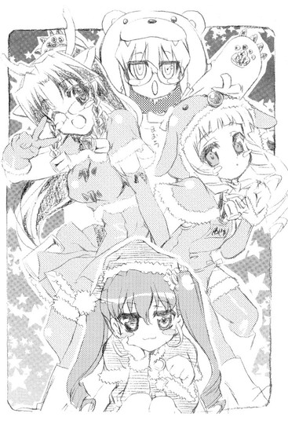

| [五十嵐雄策] 乃木坂春香の秘密05 | |
| 五十嵐雄策 | |
| (2015) | |
|
乃木坂春香の秘密 ５
五十嵐雄策
|
底本データ
一頁17行 一行42文字 段組１段
乃木坂春香の秘密⑤
容姿端麗で才色兼備、「白銀の星屑」という二つ名まで持つ超お嬢様、乃木坂春香。そんな彼女と話すことなど半年前には夢にも思わなかったのだが、俺が春香の秘密を共有して以来、少しは親密になってきた。そんな12月、とあるイベントを目の前に控え、俺は新たな事態に対して深刻に考えなければならなくなった。
街も学校もクリスマスムード一色な中、春香が急にメイドカフェでアルバイトを始める。お嬢様の春香が何故......と不審に思うものの、春香が初めてのバイトを健気に頑張る理由を知って、触発され、自分自身を見つめ直し、気づけば俺は......なぜか天王寺家で執事となっていた。そして、いよいよクリスマスを迎える──。
お嬢様のシークレットラブコメ第五弾（はあと）
五十嵐雄策
五十嵐雄策の秘密⑤。10月３日生まれのＯ型。第４回電撃ｈｐ短編小説賞最優秀賞を受賞し、文庫デビュー。デビュー以来、年に４冊、短編にすると16編、月平均１．３編を書き続けているものの、その時間を司法試験に当てていれば今頃は......なんてことは全く考えません。
イラスト：しゃあ
しゃあの秘密⑤。今回の⑤巻の取材で「＠ほぉ～むカフェ」に行ってきました。なのでお店の雰囲気はバッチリです。財布を落としたりと、最近色々と大変です......。
乃木坂春香の秘密 ５
世の中ってやつは得てして予測不能である。
例えば降水確率０パーセントの快晴の日に突然大粒の雹が降ることもあるし、それまで自分のことを営業部のエースだと思っていた勤続十年目のイケイケ係長が突然窓際部署に追いやられることもある。ほんの前日までぴよぴよとかわいらしく鳴いていたヒヨコが、翌日にいきなりコケコケとむさ苦しいニワトリに変身していることだってあるのだ。
自分に関することですら先を読むことは難しく、何が起こるのかを予見することは難しい。
ましてやそれが自分以外のだれかに関わることであるのならばなおさらである。
予測の難しい現代社会。
「......」
いや俺がこんなどこぞの知識人モドキなことを言い出すのには当然理由がある。
この十二月の頭からクリスマスまでに俺とその周囲で起こったいくつかの出来事。
春香に起こったこと。
俺自身に起こったこと。
それらが影響して周りに起こったこと。
それらはどれも俺にとっては予測が難しく、驚くべき出来事だったのだ。
いやまあ春香と出会って以来、ある意味全てが予測不能なハプニングの連発だったという気がしないでもないが、その中にあってもここ最近の事情は殊更に特殊なものだった。
クリスマスという時期的要因が影響していたのかもしれん。
普段は足を踏み入れないような場所という地理的要因が影響していたのかもしれん。
その辺りはよくは分からんが、とにかく今回の一連の出来事は俺にとって色々と印象に残るものだったんだよ。
「......」
......まあ色々とワケノワカランことを言ったが。
要するにこの年の瀬も迫った十二月、これまでの例に漏れずにまた色々と大変なことがあったってだけなんだがね。
第十七話
０
それは吹き付ける風も世間の風も冷凍庫で一ヶ月放置された冷凍ミカンのごとく冷たさを増し、道行く人々もマフラーやらコートやらどっちが本体だかそこはかとなく判断に困るけばけばしい毛皮やらで武装を始め、辺りの景色も本格的に冬の訪れを感じさせるようになってきた十二月の第一土曜日のことだった。
学校行事においては年内最大のものである文化祭を終えて、学園内はいつも通りの日常を取り戻していた。
「ねえねえ、冬休み、どっか行く？」
「あ、行く行く！ 温泉とか？」
「みんなでスノボとかもいいよねー」
朝の教室ではあちこちで来るべき冬休みについての会話が弾み、楽しげな声が聞こえてくる一方、その真横では「やはりナマ足よりもストッキングだろう。俺としてはストッキングの黒の濃淡が......」「いえ、そうは言っても生足の持つ健康的な魅力というものは......」「ここはニーソックスだろ......」と三馬鹿たちが相変わらず周りには目もくれずに『女子における生足とストッキングの視覚的触覚的差異』について熱い議論を交わしている。
そんなどこまでも普段通りな風景。
戻ってきた日常。
そして、それについては俺と春香も同様だった。
文化祭実行委員のイリオモテヤマネコの手も借りたいような多忙さから起こったすれ違い、それに伴う牛乳プレイやエロマウントポジション、そこから発生した色々な意味でデンジャラスかつアバンチュールな誤解も何とか解消され、一時は野生のパンダの生息数のように危うくなった春香との関係も今ではそれまで通りのものに戻っていた。
時には色々と話したりして、時にはいっしょに帰ったりして、そして俺たち二人の『秘密』を共有している。
ただ何から何まで以前と全く同じというわけではない。
微妙にだが、文化祭前とは異なっていることもあった。
それは何かというと──
「──あ、裕人さん、おはようございます♪」
と、そこで横から声がかけられた。
聞くだけで心にシャワーを浴びたような心地よい気分にさせてくれる最上級ヒーリングなソプラノボイス。
振り向くとそこには、声に勝るとも劣らないほどの癒しの空気を纏った超美少女──才色兼備でお嬢様、学園のアイドルで『白銀の星屑』こと乃木坂春香が立っていた。
「春香......」
「今日もいいお天気ですね。西高東低、冬型の気圧配置です」
俺の返事に、春香はにっこりと笑って顔をちょこんとかたむける。
「う......」
その素晴らしく可憐な仕草に思わず心臓が一瞬だけ脳への酸素供給を忘れた。むう、相変わらず天使のような笑顔というか、街を歩けば十人中十五人が振り返りそうな天下無敵のキュアフルスマイルというか......
そんなことを思いつつ朝っぱらから午後のシエスタのような気分でいると、
「あ、あの裕人さん、どうかされましたか？」
「え？」
「その、そんなにじっと見られると......あ、も、もしかして髪型がヘンなのでしょうか？三ミリほど前髪を切ってみたんですけど、し、失敗しちゃいましたか？」
恥ずかしそうにちょんと髪に触れる。
「あ、いやそういうわけじゃなくてな......」
ただ単に見惚れていただけなんだが。てか髪切ってたんだな（三ミリ......）。
とりあえずそのことに言及するのもアレなので話題を変えることにする。
「あー、それよりどうしたんだ？ 何か用でもあったのか？」
「あ、は、はい」
訊くと春香は少し照れたように顔をうつむかせて、
「え、えと裕人さん、よろしければ今日いっしょに帰りませんか？」
「今日か？」
「は、はい、どうでしょう？ あ、その、もちろん何もご用事がなければなのですが......」
はにかみながら見上げてくる。
その表情は今までと比べてどこか親しげで、甘えてくる仔犬のようなものである。
──そう、微妙な変化とはこれのこと。
何だか以前よりも、春香の方から声をかけてきてくれたり、いっしょに下校しようと誘ってくれたりする回数が増えたように思えるということである。
いやこれまでも春香と話すこと自体はあったわけだがそれは主に学園外でのことであり、学園内では席も離れていた上に春香自身が基本的には消極的ということもあり、意外に会話の機会はそう多くはなかったのだ。それがここ最近、少し変わりつつあるのである。
それに加えて、授業中や話をしている時などのふとした瞬間に目が合うことが多くなったような気もする。いやこっちは本当に気のせい（気の迷い）かもしれんが。
ともあれ、これまでに比べて春香との距離が僅かとはいえ近づいたように思えるのは事実だった。
やはりこれにはあの文化祭での出来事が影響しているのか。直接訊くのもアレなため真偽は定かではないとはいえ、春香が意識であれ無意識であれ俺のことを少しは気にかけてくれるようになったかもしれんことは喜ばしいことには変わりがない。つーか端的に言ってこの場で衝動的に反復横跳びを始めちまいたいくらい嬉しい。やらんけど。
そんなことを何となく考えていると、
「えと......裕人さん？」
「え」
「どうしたんですか？ ぼーっとして......」
春香の声で思考の海から高知カツオのごとく一本釣りされた。
「あ、もしかしてやっぱり何かご用事があったのでしょうか？それなら......」
「いや、違う違う」
「え、でも......」
不安そうな表情をする春香に慌てて説明する。
「今のは何というか、その......ちょっと瞑想をしてただけだ。今日はヒマだぞ。めちゃくちゃヒマだ」
「あ、そうなのですか？」
春香がちょっとだけ安心したような顔になる。
てかせっかくの春香からの誘いを、少しくらいの用事（例えばどこぞの姉とその親友へのエサやりとか）があったからって断ることなどあり得んしな。
「ああ、だから大丈夫だ。何も問題ない」
「ほんとですか？ わあ、嬉しいです......」
花がほころぶような顔で大きくうなずく春香。
うーむ、むしろこっちが喜びたいくらいだってのに、そんなに屈託のない反応をされると思わず口元が初孫を目の前にしたお祖父ちゃんみたいになっちまうね。
それから今日の授業についてだとかドジっ娘アキちゃん占いについてだとか葉月さんが新たに購入したヌイグルミ情報についてだとかの世間話を少しして、「では、また後でですね♪」と春香は手を振りながらとてとてと自分の席へと戻っていった。
ちなみに戻る途中で三回ほどこちらを振り返り、その度にハデに机に激突していたことについては......とりあえず見なかったことにしよう。
そんな感じに春香を見送り、机で教科書（置きっ放し）の整理をしていると、
「や、裕人。おはよっ！」
そんな声とともに背中をぽんと叩かれた。
見ると今度は、隣の席の元気娘が咲き誇る大型タンポポみたいな笑顔で立っていた。
「椎菜......」
「へへ、どう、今日も元気してる？」
今登校して来たのか、コートとマフラーを脱ぎながら、普段通りのエネルギーが溢れまくるフレンドリーな口調で話しかけてくる。
「ん、まあそこそこってとこだ」
俺がそう答えると椎菜は、んー？ と眉をひそめて、
「あれ、なーんか朝から中途半端だね。ちゃんとご飯食べてきた？」
「いや朝はあんまり時間がなくてな......」
「あー、だめだよ。朝食を抜くと身体にも頭にもよくないんだから。そうだなー、あたしのお勧めとしてはイカ飯なんかがいいと思うよ？あっためるだけでできるから手軽だし、栄養価もばっちりだし、何より美味しいし♪うん、イカ飯は完全食だと思うよ、あたしは」
うんうんと大きくうなずく椎菜。
むう、相変わらずよく喋るな。てかせっかく勧めてくれて悪いが、朝食にイカ飯は明らかにヘビーだろ。味濃いし。
「えー、そう？ あたしは毎朝食べてるけど。この前実家からたくさん届いてさー。ここ最近はずっとイカ飯天国って感じかな。あ、裕人も食べる？山ほどあるからお裾分けするよ？」
「いや、遠慮しとく......」
そんだけ聞けばイカ飯はもういいというか。
そんな感じに世間話（イカ飯主体）をしていると、
「んー、そういえばあとちょっとで冬休みだよね。冬休みといえはイベントがたくさん。クリスマス、大晦日、お正月......。あ、そうだ。裕人、クリスマスとかはどうするの？」
と、思い付いたように訊いてきた。
「クリスマス？」
「うん。日本語訳・聖夜。ロシア語訳・ノエル」
今のところまったくもって予定はない。
ちなみに去年は、街を流れるクリスマスナンバーなどはこれっぽっちも気に留めずに日本酒と焼酎とで酒盛りを始めたアホ姉とその親友に付き合わされてえんえんと酒のツマミを作り続けていた。酔って歌って暴走した挙句に「よし、サンタ狩りに行くぞ！」「ええ、ついでにかわいいイケメントナカイちゃんもね～♪」などと言い出したアホ二人を止めるのにどれだけ苦労したことか。いや、今思い出しても頭が痛くなってくるな......
「......」
まあそんな限りなくカカオ九十九パーセントな思い出はさておき、とりあえず今年は例のアホ二人は近所の商店街で行われる『クリスマス飲み比べ大会～寒さなんてアルコールで焼き尽くせ～』とやらに参加予定らしいから、現時点ではフリーだ。その旨を椎菜に伝えると、
「へえ、そうなんだ？ あたしはてっきり......」
「？」
てっきり、何なんだ？
「ん？ んーん、何でもない。ちょっと意外だなーって思っただけだから、うん」
「意外？」
「え、あー、ま、いいからいいから」
首を捻る俺に椎菜はぶんぶんと顔の前で手を振って、
「それより冬休み、楽しみだなー。ね、裕人もそう思うよね？」
「??」
なんかよく分からんが、まあ本人がいいと言ってるんならそれ以上突っ込むこともあるまい。
その椎菜は、
「......やっぱりまだ確定じゃないのかな？ うーん、そのヘン、どうなんだろ？」
小さな声でそうつぶやいていたのだった。
そして放課後になった。
「あー、それじゃ行くか」
「はい♪」
掃除を終えセコセコと荷物をカバンにまとめて、春香といっしょに教室を出る。
「む～、あの男、また春香様をムリヤリ～......」
「帰り道まで付きまといやがるつもりですかぁ？春香様と同じクラスなだけでも迷惑してるというのにぃ」
「............殺ってしまいたいです（ぼそり）」
その際周りの取り巻きやら親衛隊やらからの奥州長ドスのような殺人的視線は気になったが、春香といっしょに帰れることの至高の喜びを考えれば、そんなもんは家族の中で一番かわいがっているにもかかわらず飼っている犬が全然懐いてくれない世のお父さんの切ない気持ちくらいに些細なことである。とりあえず気にしないことにして、ほとんどイバラのような視線の花道を通り抜けた。
「すっかり寒くなってきましたね。冬って感じで......。ほら、息が白いです」
校門を出たところで、は～っと息を吐き出しながら春香がにこにこと見上げてきた。
「あ、あそこ見てください。かわいいサンタさんの置物があります。わあ......」
ちょこちょことしたペンギンみたいなステップに合わせて、背中にあるカバンとかわいらしいマフラーがゆらゆらと揺れている。
「そうだな、もう十二月だし......」
見回してみれば、辺りの風景もすっかり冬のものに変わっていた。
街のあちこちに飾り付けられたデコレーション。ショーウインドウに並ぶ「冬の大セール！」の文字。流れてくるクリスマスソング。道を行く人たちの表情も、そんなウインター真っ盛りな雰囲気にどこか浮き立っているように見える。
「私、冬って好きなんです。空気がキレイでとっても澄んでいる感じがして......でもあんまり寒いと、指がかじかんじゃってピアノを弾くのが少しだけ大変だったりしますけど」
両手を顔の前で合わせて、えへへと笑う。
──そういえば春香はクリスマス、どうするつもりなんだろうな？
ふとそんな疑問が頭をよぎった。
やはり春香のことだから「フィンランドで本物のサンタさんと握手！」とか「北極でシロクマとオーロラを見ながらトナカイの餌付け！」とか、セレブにお嬢様らしく過ごすんだろうか。それとも誕生日の時のようにどこかのホテルを買い取って豪華ディナーとか。はたまた家で葉月さんたちとまったりとホームパーティーってのも有り得るかもしれない。
「......」
うーむ、気になる......
ここはまあウダウダと考えるより直接訊いてみるべきだろう。訊いてマズイ内容でもなし、下手の考え休むに似たりだ。
「なあ、春香──」
「はい？」
なので確認しようと横を向いたその瞬間。
「お」
「あ」
ぴたり、と
腕が振られた拍子に、俺の手と横を歩いていた春香の手が触れ合った。
「......」
「......」
すべすべひんやりとした感触。
一瞬、何が何だか分からずに二人の動きが止まる。
やがて。
「──あ、す、すみませんっ！」
「え、い、いや」
当惑の声とともに、互いに慌ててばっと飛びのいた。
「ご、ごめんなさいです。私、ぼ～っとしていて......」
「あ、や、俺の方こそ」
......いや、顔と顔とが何らかのハプニングで接触したとかならともかく、手がちょっとばかり触れただけだってのに何だってこんなに二人して固まってるんだ？春香も今までならこれくらいじゃ普通な顔で「わん？」とか言ってたってのに......
「ゆ、裕人さんの手、ちょっと冷たかったですね」
何かを誤魔化すかのように春香が照れ笑いを見せる。
「あ、ああ。春香のもな」
「さ、寒いですから」
「そ、そうだな。寒いからな」
「......」
「......」
沈黙。
周囲の雑踏がやけに大きく耳に響き、時間の流れがやたらとゆっくりに感じられる。
「あ、あー、んじゃ行くか。道で立ち止まってると迷惑になるしな」
「そ、そうですね」
どこか戸惑ったような春香の言葉を受けて、歩き出す。
とその時、
はらり。
春香のコートのポケットから何かが地面へ舞い落ちた。
「ん、なんか落ちたぞ？」
「え？」
「何だ？ なんかのチラシみたいだが......」
「あ、そ、それは......」
途端に春香の表情が慌てふためいたものになった。
「？」
不思議に思いつつも何気なく手に取る。
──その時舞い落ちたチラシ。
それが俺たちの関係及びクリスマスに新たな局面をもたらす小さくない要因の一つになろうとは、この時の俺にはまったくもって予想が付かなかったんだがな。
落ちたチラシには、かわいらしい丸文字でこう書かれていた。
『メイド募集！ 貴女もハートにメイド服を着てみませんか♪〝＠ほぉ～むカフェ〟』
１
その次の日、俺は浮き上がったシミが微妙に人の顔に見える天井をぼんやりと眺めながら、食後の乳牛のようにベッドの上でゴロゴロとしていた。
十二月四日日曜日。
外は前日と同じく清々しいまでの冬晴れで、カーテン越しに見える澄み渡った空にはちゅんちゅんとノンキな声を上げながら雀が飛んでいる。表の通りから聞こえてくる近所の子供たちの声も実に楽しげだ。
「......」
だがそんなさわやかな天気とは裏腹に、俺の心の中は何となくモヤモヤとしていた。
胸の奥に害虫退治用のケムリがかかったような気分というか、とにかく何かがすっきりとしない。
そのモヤモヤの原因となっているのは、当然のごとく昨日の出来事である。
「......」
春香が落としたチラシとその時に聞いた春香からの話。
それが一日経った今でも、俺の頭の中にしぶとく残っている。
「春香......」
ベッドの上をゴロリとカブトムシのサナギのように横に一回転する。
春香は今頃どうしているのか。
頭に浮かんでくるのはそればかりである。
「............」
......だめだ。
このままただ悶々としててもラチがあかない。
ここはとりあえずもう一度あの時のことをキチンと整理してみるしかあるまい。
昨日の帰り道。
そこで春香が話した内容。
それらを思い出す。
結局何があったのかというと──
＊
「あ、あの、実は私、〝あるばいと〟をしようと思っているんです......」
地面に舞い落ちたカラフルなチラシを俺の手から受け取りながら、少し恥ずかしそうに春香は言った。
「バイト？」
「は、はい」
こっくりとうなずく。「あるばいと、です」
「いや、何でまたそんな......」
思わずそんな言葉が口から漏れる。
天下無敵の乃木坂家のお嬢様（長女）である春香とバイト。これほどアンバランスというかペルシャネコに一円玉な組み合わせもそうはあるまい。
「そ、それは......」
「ん？」
「え、えと、それはその......あ、実はちょっと欲しいものがありまして......」
微妙に目を泳がせながらそう言う。うーむ、また何か新しい趣味のグッズでも出たんだろうか。まああんまり深く突っ込んでほしくなさそうだったので、とりあえずそれについてはこだわらないようにしておく。
だがまだ気になることというか疑問点が一つ。
「......何でメイド喫茶なんだ？」
「え？」
「何だってまたそんな特殊なところを......」
それである。
チラシに書かれている『メイド募集！貴女もハートにメイド服を着てみませんか♪〝＠ほお～むカフェ〟』の文字（色鮮やか）。
別にバイトをしたいだけならもっと普通というかスタンダードなところがいくらでもあるだろう。わざわざイロモノというか、クワガタでいうところのギラファノコギリクワガタのようなバイト先を選ぶこともない。
すると春香は、
「──憧れ、だったんです」
「憧れ？」
「はい。以前にその、裕人さんといっしょにアキハバラへ行った時から......いえ、それよりも前、『イノセント・スマイル』で初めて〝めいどかふぇ〟の紹介を見た時からずっとメイドさんになってみたくて......」
「......」
「それにこの間の学園祭での〝こすぷれ喫茶〟で確信したんです。やっぱり私はお仕事をするならこういうところがいいなあって。雰囲気がとっても楽しそうですし、その、お客さんの笑顔も嬉しかったですし......」
小さく笑いながら言う。
「そうか......」
メイド付きのお嬢様がメイドさんになりたいってのも何だかある意味本末転倒だが、春香自身がそう望んでいるんなら俺がとやかく言うようなことじゃないだろう。
「分かった。だったらがんばれよ。応援してる」
「は、はいっ」
俺の言葉に、春香は大きくうなずいたのだった。
＊
──というわけである。
そしてその春香のバイトの初出勤日が今日だった。
......春香、どうしてるんだろうな。
どうしてもそれが気になってしまう。
接客や調理については文化祭のコスプレ喫茶である程度経験しているとはいえ、何せ春香は基本的にドジである。いや運動神経は申し分ないわけだが性格的に慌てるとドジを誘発する素因を持ちすぎているというか。ミスとかを連発しまくっていてもおかしくない。
「......」
バラバラバラバラ。
あるいはあのおっとりとしてぽわぽわな春香だ。タチの悪い客にでもからかわれて、お気に入りのオモチャを微妙に手の届かないところに隠されて困っている仔犬のようにおろおろしているという可能性も十分に考えられる。
バラバラバラバラ。
むう、すげぇ気になる......
バラバラバラバラバラ！
こういうのはアレだ、初めてのお使いに向かう孫（三歳）を見守るお祖父ちゃんのような心境？いやそれは何か違う気がするな。うーむ......
バラバラバラバラバラバラバラバラ!!
「............」
......って、何だ？ さっきから外でバラバラバラバラうるせぇな。人が真面目に考え事をしてるってのに。真っ昼間っからどこかのバカが錯乱してマシンガンでも乱射してるってのか？
微妙に気分を害しつつベランダから騒音の源を確かめようとして。
「やっほ～、おに～さん♪」
がらり！
「うおっ!?」
先手を打ったとばかりに俺の目の前でいきなり窓が開いた。
その向こうから現れたのは見慣れたツインテール娘。
「な、なっ......」
「ん～？ その反応はちょっといただけないな～。女の子の顔を見てそんな獅子舞の獅子みたいな顔するのって、すご～く失礼なんだよ？」
突然の出現にフリーズする俺に、びっと人の顔を指差しながらそんなことを言う。
さらにその後ろからは、
「そうですね～、ジェントルマンとしてのマナー違反です～」
「......いけません」
にっこりメイドさんと無口メイド長さんがいつもの調子でにゅっと顔を出す。
「............」
もはやどこから突っ込んだらいいのか分からずに呆然と空を見上げると、何やらハシゴの垂れ下がったヘリがバラバラバラバラと浮かんでいるのが目に入った。どうやらアレで来たらしい。
「ほらおに～さん、せっかくかわいい美夏ちゃんたちが来たんだから、ベッドの下のちょっとアレな本とかを片付けてお茶くらい出さないとだめだよ。ついでにピグマリオンのクッキーとか銀果堂のケーキとかもあればポイント高いかな」
「おもてなしと気遣いは男の子の基本ですね～」
「......殿方のたしなみです」
そんな勝手なことを言いながら、ツインテール娘たちは窓から部屋へと入ってきた。そのまま美夏はベッド（俺のな）の上にぽふっと腰を下ろし、那波さんと葉月さんはそれぞれその両脇（メイドの定位置）へと移動する。
「......」
相変わらずこっちの都合とかそういうもんを考えないこと甚だしかったが、この程度のことはもはやいつものことである。養殖ニワトリが羽ばたけば隣のお仲間にトサカをぶつけるくらい日常茶飯事である。今さらそこに突っ込んでも始まらない。
「......で、何の用だ？」
なのでそれについては諦めて本題に入る。
この三人がいきなり訪ねてくるのは決まってロクでもない用件がある時だってのは、ロンドン拉致だとか牛乳プレイだとかで身をもって分かりきっていたが、それでもいちおう訊いておく必要はある。
すると美夏は口元に指を当てながらちょこんと首をかたむけて、
「ん～、用っていうかさ。これからお姉ちゃんの様子を見に行こうと思って。もちろんおに～さんも行くでしょ？」
「春香の？」
それってまさか？
「うん、そだよ。アキハバラの『＠ほぉーむカフェ』まで♪」
って、美夏たちもバイトのことを知ってるのか？どう見ても秘密にしていたような素振りだったと思うんだが......
俺の表情から言いたいことを察したのか美夏はあははと笑うと、
「お姉ちゃんは隠してるつもりみたいだけど、わたしたちにはばればれかな～。だってリビングのテーブルの上に堂々とチラシが置いてあるんだもん。記入済みの履歴書といっしょに。こっそりお姉ちゃんの部屋に戻しといたから、たぶんお父さんにはばれてないと思うけど～」
「......」
またそのパターンか。
相変わらずの素晴らしいばかりの迂闊っぷりだった。春香......
「とゆうわけで行くよ～！ ほらほらおに～さん、早く支度して」
「や、ちょっと待て」
「？」
とりあえず事情は飲み込めたが、その前に確認しておかなきゃならんことがある。
「なあ、俺たちは......見に行くべきなのか？」
「え、何で？ お姉ちゃんのメイド姿、見たくないの？」
「いや、そういうわけじゃなくてだな......」
見たいとか見たくないだとかの俺の個人的欲求はさておき（いやもちろんめちゃくちゃ見たいに決まってるんだが）、何となくだが春香は働いている姿を見られるとかそういうことを恥ずかしがるような気がするんだよ。逆の立場だったら俺でも戸惑うかもしれんし、それに初日から身内が冷やかしで行って春香が店から良くないイメージを持たれるのもマイナスなんじゃないのか。
そう美夏に言うと、
「な～んだ、そんなことか。それならだいじょぶだいじょぶ。ちゃんと対策は考えてるから♪」
「対策？」
「そ。おに～さん、これ着けて」
「これは......」
にっこりと笑いながら美夏が手渡してきたのは...何やらやたらと外巻きロールをした白髪のウィッグと、至るところに機能上明らかに不必要なビラビラが付いたどこか古めかしい感じの服だった。
「これで変装すればきっとばっちりだよ！お姉ちゃん、きっとテンパってるだろうからそれでばれないって」
「──いや待て」
何だこの音楽室にでも飾ってありそうなモーツァルト（生誕二百五十周年）風味なカツラ及び燕尾服は。
俺のクレームに、
「あ、惜しい。それはモーツァルトじゃなくてバッハ仕様。古典派の中でもけっこう時代にズレがあるから、間違えちゃだめなんだよ？」
「......」
そんな違いはトコトンどうでもいいんたが。
「ま、細かいことはい～からい～から。とにかくまずはがっつりと着けてみる。葉月さん、那波さん♪」
「......はい（うずうず）」
「裕人様、動かないでくださいね～」
「お、おい」
美夏の声に、なんかどことなく嬉しそうな顔をした葉月さんと那波さん（手にはウィッグと燕尾服）が迫ってきて。
──十分後。
「う～ん、何だかバッハっていうよりシューベルトみたいだね～」
外巻きウィッグとビラビラ燕尾服を強制装着させられた俺を見て、美夏が何かが違うって顔でそうつぶやいた。
「メガネが悪いのかな～？ でもメガネがないおに～さんはおに～さんじゃない気もするし。ん～......」
「......」
美夏はしばしツインテールをかたむけて思考していたが、
「ま、いっか。だいじょぶだいじょぶ、お姉ちゃんはバッハもシューベルトも好きだから」
「ちなみにシューベルトさんは三十一歳の若さで惜しまれつつもお亡くなりになられたのですよ～」
「......天に召されました（合掌）」
「......」
そういう問題じゃねえだろ。てか那波さんと葉月さんの台詞は何のフォローにもなってねえし......
改めて現在の自分の状態を見てみると、もうため息しか出てこなかった。
白い巻き毛、やたらとハデな燕尾服、それらの組み合わせからやけに浮いた黒フレームのメガネ（デフォルト）。いやこれで本当に外を歩けってのか？変装というよりもほとんど何かのプレイの域だぞ。防寒性だけはムダに高そうだが......
「さ、不安も解消されたことだし、それじゃ行こっか♪お出かけお出かけ～」
「──待て、美夏たちは変装しないのか？」
楽しげに部屋を出ようとする美夏たちを再度止める。
俺だけがこんなにグレイトフルに変装しても、美夏たちがそのままではまったくもって意味がないだろう。
すると美夏は、
「あ、そっか。んじゃちゃちゃっと......」
言いながらツインテールの髪をほどき手早くアップにして帽子を被ると、かわいらしい薄グリーン色の伊達メガネを装着した。
「はい、完了♪」
「......」
いや俺がこんな奇怪というかエキセントリックなほとんど仮装に近い格好（要装着時間十分）なのに、何でそんなに簡単なんだよ。おまけに葉月さんたちはメイド服のままだし......
「あ、私たちはいいのです～。お店には入らずに外でお待ちしておりますから～」
「......メイドがメイド喫茶に入っては、色々とメイドうなことになります」
「......」
「......何か？」
「いえ......」
......葉月さん、たぶん〝面倒なこと〟って言いたかったんだろうな......
ともあれそういうわけで。
「さ、それじゃしゅっぱつしんこ～！」
「行きましょう～」
「......れっつご～、です」
「......」
これ以上ないくらいの不安を抱えつつ、美夏たちとともに家を出たのだった。
２
春香の働いているメイドカフェ──『＠ほぉ～むカフェ』とやらはアキハバラの駅から歩いて五分ほどの場所にあった。
以前に行った『アニメイト秋葉原店』やら『COSPA ジーストア・アキバ店』よりもさらに駅の近く、休日には歩行者天国になっている大通りの途中を曲がって少し行ったところにある大きなビル。そこの七階に入っているらしい。
家を出た俺たちは現在、メイドさん二人のナビゲートに従ってアキハバラの街を進んでいき、まさにその真下に来ていた。
「ふ～ん、ここにそのメイド喫茶が入ってるんだ～」
でかいビルをちんまりと見上げながら美夏がオデコに手をかざす。
「ええ、そうですよ～」
「......私たちの調査結果に間違いはありません」
那波さんと葉月さんが声を揃えてそう答える。
「なんか五階と六階もおんなじ感じのお店があるみたいだね。同系列なのかな？」
確かに美夏の言う通り、五階がメイド甘味処（？）で六階がメイドグッズショップ（？）になっているようだ。エレベーターの脇にある案内表にそう書かれている。
「はい、そのようですね～。ここの上層階のお店は全て同じグループによって経営されているみたいです。何と言ってもメイドカフェ業界最大手の会社ですし～。あ、これは余談ですが、何でもここでメイドさんとして働きたい方は非常にたくさんいらっしゃるとのことで、倍率は五十倍から八十倍という話ですね～」
「......ちなみに乃木坂家のメイド隊（序列なし）に入るための倍率もほぼ同程度です」
葉月さんがくいっとメガネのブリッジを上げながら補足する。
「......」
それはどっちに驚くべきところなんだ。
「んじゃいこっか、おに～さん」
「ああ」
美夏に促されてビルの中へと向かい歩き出す。
「いってらっしゃいませ～」
「......ご武運をお祈りしています」
後ろからは、数多のメイドさんたちが待つメイドカフェへと向かう俺たちを見送るリアルメイドなにっこりメイドさんと無口メイド長さんの声が響いていた（ややこしい）。
エレベーターのうぃんうぃんうぃんという音を聞きつつ七階に上がると、すぐにそれらしき店舗が目に入ってきた。
『お帰りなさいませご主人様、お嬢様♪』と書かれた簡易メニュー台と、カラフルなポスターやイラストなどが貼られた自動ドア。
どうやらこの向こうが、目的地である『＠ほぉ～むカフェ』なのは一目瞭然だった。
「さ、おに～さん、心の準備はいい？」
「......大丈夫だ」
「よ～し、それじゃ突撃～」
楽しそうに声を上げた美夏とともに自動ドアを通り抜ける。
その向こうにあったのは──
「お帰りなさいませ、ご主人様、お嬢様！」
「何名様でご帰宅でしょうか？」
「今ならすぐにお席にご案内できますよ～」
──なんか、別世界だった。
店に入った途端に響く耳心地のよい甘い声。流れてくるアップテンポな音楽。続いてかわいらしいメイド服に身を包んだたくさんのメイドさんたちが一斉に俺たちを出迎えてくれる。
「あ、あー、ええと......」
バッハ姿で戸惑う俺にメイドさんたちはぺこりと一礼すると、
「二名様ですね？ どうぞ、こちらのお席にお座りください♪」
「あ、え......」
「は～い」
笑顔とともに手近にあるテーブルへと案内してくれ、
「注文がお決まりになりましたら、そこのベルでお呼びください」
「あ、はい」
「ごゆっくりしていってくださいね～」
メニューを置いて丁寧にお辞儀すると、にこやかな声とともにカウンターらしきところへと戻っていった。
「わ～、お店の中もかわい～ね～」
きょろきょろと店内を見回しつつ美夏が言う。
ピンクやクリーム色などを基調とした店内は教室と同じくらいの広さで、照明の柔らかさもあってか全体的に落ち着いた感じの造りになっている。奥の方には何やらステージのようになっている場所があり、壁の部分には巨大なスクリーンが設置されている。スクリーンの中では大勢のメイドさんたちが歌って踊っていた。
「へぇ......」
いわゆるメイド喫茶に来るのはこれが二店目だが、ネコミミメイドさんのメイド喫茶とはまた違った雰囲気だった。
どことなく親しみやすいというか落ち着く感じがするというか......いや、あくまで感覚的なもんで口ではうまく説明できんのだがね。
さらに店内を見渡してみると、あちこちの壁には様々なポスターや写真（『完全メイド宣言』と書かれてるものが多い）などが貼られていて、その中には色紙のスペースがあった。ふむ、有名人のサインやら色紙やらがたくさんあるな。やはり業界最大手だけあって色々な方面から注目されてる人気店ってことなんだろう。おお、さらにそれらの一番上には何やら金色の額縁に囲まれて『至高のご主人様・ご帰宅記念♪』と書かれた写真が......
「......いや待て」
なんかそこに写っている人間に見覚えがあるように思えるのは俺の目の錯覚だろうか。
写真（高画質・百年プリント）の中でスーツ姿の美人な女の人とがっちりと握手を交わしている男子の顔。俺のメガネがここ最近の寒さで凍結破損しているんでなければ、どこぞの十年来の幼馴染み（♂）の優男面に見えるんだが。
「......」
......とりあえず見なかったことにしよう。
自らの心の平穏のためにそう結論付けて、俺は視線をテーブルへと戻した。
ちなみにこれは後で聞いた話だが、あの信長のアホといっしょに写っていた女の人はどうもこのメイドカフェを経営している社長さん（代表取締役）だったとか。相変わらずあいつの交友関係は底知れねぇ......
「そういえばお姉ちゃんはどこにいるのかな～？おに～さん、見つけた？」
案内されたテーブルの向かいで、水をくぴくぴと飲みながら美夏が訊いてきた。
「ん、いや、まだだ」
さっきから探してるんだが、何せ店の中はメイドさんだらけである。なかなか見つけようったって見つかるもんじゃない。アクアマリンの中からサファイアを探すようなものだ。
目を古伊万里のようにしてメイドさんの森の中を走らせていると、
「あ、いたいた！ ほらおに～さん、あそこ！」
「お？」
くいくいと俺の外巻きウィッグを引っ張りながら美夏が声を上げる。
その指差す先。
そこには──メイド姿の春香がいた。
俺たちの席からは少し遠いが間違えるはずもない。
カナダの初雪のような純白のヘッドセット。薄い葡萄色のメイド服。ひるがえるヒザ丈のフリル付きスカート。
何というかその姿は......めちゃくちゃ可憐で魅力的で俺の中のご主人様魂（？）を刺激するに十二分なものだった。
「わ～、やっぱお姉ちゃんはメイド服も似合うね～。かわい～♪」
「......」
ほとんど目がくらむほどプリティーであり、キュートであり......
「あの文化祭の時の何だっけ、こすぷれ？ もよかったけどこっちはこっちでまた別のかわいさがあるってゆうか。何だろ、ちょっと落ち着いた色合いがいいのかな？おに～さんはどう思う？」
「......」
いやもはや自分でも何が言いたいんだかさっぱり分からんのだが、とにかくそれだけメイド・イン・春香は天下一品であり見事にマッチングしてるってことであり......
「って、おに～さん？」
「──ん、あ、ああ」
美夏の呼びかけではっと我に返る。メイド姿の春香の放つあまりのメイドパワーっぷり（？）に思わず意識が成層圏の彼方にまで飛んじまってたみたいだ。
そんな俺の反応に美夏がにやりと笑って、
「はは～ん、おに～さん、さては見惚れてたでしょ？」
「え、いや」
「隠さなくてもい～って。絶頂期のマンモスみたいに鼻の下が伸びてたもん。あはは、おに～さんってほんとに分かりやすいね～」
「ぐ......」
反論したいところだが、しかし実際問題として目を奪われまくって半意識喪失してたのは事実なため、黙るしかない。
仕方なく美夏のからかいの視線に耐えていると、
「きゃっ」
と、そこで春香の声が聞こえてきた。
何だと思い見てみると、とあるテーブルの前で困った顔をしている春香の姿。どうやら給仕をしている途中で紅茶の入ったカップをこぼしてしまったようで、テーブルの上に広がった洪水を前におろおろとしている。
「春香......！」
思わず立ち上がり、駆け寄りそうになる。だが、
「だめだよ、おに～さん」
意外にもそんな俺の袖を引っ張って止めたのは美夏だった。
「美夏？」
ツインテール娘（いや今は違うんだが）は少しだけ真面目な顔で首をふるふると振って、
「これはお姉ちゃんのやったミスなんだからお姉ちゃんが何とかするのがスジだよ。わたしたちが手を貸しちゃお姉ちゃんのためになんない。仕事って、そうゆうもんだと思う。違う？」
「それは......」
その通りなんだが。だけど目の前で現在進行形で困ってるのを放っておくってのも......
「それに平気だよ。ほら、他のメイドさんたちがちゃんとフォローしてくれてるみたいだし」
「え？」
美夏の言葉に視線を戻してみると、慌てふためく春香の周りに他のメイドさんたちが集まってきているのが見えた。
「だいじょうぶ、春香ちゃん？」
「あ、は、はい、すみませんです」
「不慣れなうちにミスするのは悪いことじゃないの。だれだって最初は完璧にこなせるわけないんだしね。問題はその後のカバーの仕方かな」
「ね、片付けは私たちもいっしょにやるからまずはご主人様に謝らないと」
「あ、ありがとうございます、ユーリさん、さらさん。──申し訳ありませんでした、ご主人様」
春香がぺこぺこと頭を下けると、客は「あ、いいっていいって」と笑って許してくれた。
どうやらドジをしているようだが、どうもそれに対して周りがうまくフォローしてくれてるみたいだ。
「ね、だからおに～さんは手出し無用だって言ったでしょ？」
「むう......」
少しばかり負けた気分だが、美夏の言う通りだ。
「おに～さんは心配しすぎなんだよ。ほら、昔から言うじゃん、かわいい子にはスペースシャトルで宇宙旅行をさせろってね♪」
美夏はそう言って、にっこりと笑ったのだった。
３
「さ、それじゃ注文しちゃおっか、おに～さん」
「ん、そうだな」
そういえば店に入ってから色々と忙しくてまだ注文をしてなかった。
置いてあったメニュー表を片手に中身を見てみる。ほう、またやたらとメルヘンな名前のメニューがたくさんあるな。『きのこさんのクリームパスタ（きこり風味）』『ヨークシャーテリアケーキ』『お気に入りのメイドさんの玉子焼き』。......いやこの『ヨークシャーテリアケーキ』って、まさか原材料がヨークシャーテリアなんじゃあるまいな？
そんな微妙にブラックメルヘンなことを思っていると、
「ふふふ～、いいこと考えちゃった♪」
美夏がメニュー表を見ながら何か計略を思い付いた小悪魔のようににんまりと笑った。......何をする気だ？とりあえずイヤな予感しかせんのだが......
「すみませ～ん」
テーブルに備え付けてあったベルをちりんちりんと鳴らしてメイドさんを呼ぶ。そして、
「お～い、お姉......じゃなくて、そこの髪の長いメイドさ～ん」
「ん、なっ」
あろうことか、美夏が呼んだメイドさんは春香だった。
「あ、はいです。少々お待ちください。すぐにうかがいますので」
食器を下げる途中だった春香が振り返って返事をする。
（お、おい、美夏！）
（ん？ どしたの、そんな年齢詐称がバレたアイドルみたいな顔して）
（どしたのってな......）
いやいくら何でもこれはまずいだろ。いかに春香が緊張していてさらに元々そこはかとなくぽわんとしているところがあってかつ俺の格好がイカレバロック風味とはいえ、この至近距離で接したらさすがにバレちまうのが当たり前......のはずだった。
ところが。
「お、お待たせいたしました、ご主人様、お嬢様」
──バレなかった。
食器を片付けた後、とてとてとやって来た春香。
俺たちの姿を見てもまったく動じた様子はなく──いや緊張自体はしているみたいだが──他の客に対するのと同じように接客をしている。
まさか春香に限って俺たちに気付きながら意識的に知らないフリをするなんて器用なことをできるはずもないから、おそらく素で気付いていないんだろう。
「......」
うーむ、もしかして案外この格好（エセバッハ）は自分で思っている以上にジャストフィットしてるのか？そういえばここに来るまでの街中でも意外なほどに周りの注目を集めなかったし、店に入った時にもまったく言及されなかったしな。まああれはこの街（アキハバラ）が少しばかり特殊だからって話もあるが......
ともあれ、春香が気付いていないのだけは確かみたいだった。
「すみませ～ん、この『お気に入りのメイドさんの玉子焼き』を作ってもらえますか～？」
「え、えと、『お気に入りのメイドさんの玉子焼き』ですね？味付けの方はどうなさいますか？」
美夏の注文に、フロアにヒザ立ちになった状態で一生懸命に答える春香。
「味付けはう～んと甘めでお願いしま～す♪」
「甘めで......はい。ではご注文の方のお名前を教えてもらえますか？」
「え？」
「俺たちの？」
こちらの顔を交互に見ながら訊いてくる。そんなシステムがありやがるのか。
「あ、はい、お名前です。玉子焼きにケチャップで書かせていただきますので」
「う、それは......」
言葉に詰まる。まさかここで本名を名乗るわけにもいかん。
すると美夏は、
「は～い、このおに～さんが食べるんで、バッハでお願いしま～す♪」
にこにこと笑いながらそんなことを言いやがった。
「バッハさん...」
そうつぶやきながら春香はきょとんとした目で俺の顔を見ている。やばい、さすがにそのあまりにまんまな名前に不信感を持たれちまったんじゃねえのか。
やがて春香は何かに気付いたかのようにはっと口元に手を当てて、
「も、もしかしてあなたは──」
「!?」
げ、バレたか？
思わず巻き毛に包まれた頭を抱えると、
「──ノクターン女学院の院長さんなんですか？」
「へ？」
春香の口から出て来たのはそんな言葉だった。
「アニメ『ノクターン女学院ラクロス部』に出て来るバッハ先生の〝こすぷれ〟だったんですね！わあ、とっても似合っていますよ！」
きらきらした目でじっと俺の顔を見つめてくる。
「あ、あー、まあそんなところだ」
なんかよく分からんが勝手に勘違いしてくれてるようなのでそういうことにしちまおう。
「やっぱり！ だとしたらお名前はこれでいいですよね？〝馬覇先生〟」
「ん、あ、ああ、たぶん」
紙ナプキンに書かれた字を見てうなずく。
馬覇。
いや字面だけ見るとまるでどこぞの三国志の武将みたいだな。実際は外巻きウィッグに燕尾服を着たエセバロック野郎なんだが。
「分かりました。それでは少しの間お待ちください。作ってまいりますので♪」
少し声を弾ませながら春香はカウンターの奥へと去っていった。
「ね、だいじょぶだったでしょ、おに～さん」
春香の姿が見えなくなったのを確認して、美夏（こっちも最後まで気付かれなかった）が勝ち誇った顔でぱちりとウインクをする。
「お姉ちゃんはこうゆうことにはすっごいぼけぼけなんだから。ま、あのバッハ先生がどうのこうのってのはわたしにもよく分かんなかったけど」
「むう......」
つまり俺はまだまだ春香のぽわぽわ天然っぷりを見くびってたってわけか。いやそれもそれでどうかって気がするんだがね。
それからしばらくして、他の注文とともに『お気に入りのメイドさんの玉子焼き』がやって来た。
「お待たせいたしました、ご主人様、お嬢様。こちらがスペシャル玉子焼きになります」
慎重な手付きで差し出された一枚の皿。
その上にちょこんと乗っかっていたのは......
「......」
「......」
何か、得体の知れない生物の顔面立体図だった。黄色い表皮に尖った二本のツノ。真っ赤に充血した目の下にある激しく裂けた口からは生き血が滴っている。......ああ、こういうのなんか妖怪でいたな。雷獣とかそんなような名前だったか。
「............ね、おに～さん、これって」
「言うな。分かってる......」
小さな声でそう告げてくる美夏に言い聞かせる。
そう、これがいくつかの玉子焼きを用いて作られたものであり、それが何かのキャラクター（生き物）だってことは分かっている。そしてまあ、雷獣（妖怪）を意図して作られたものではないだろうってことも。ただ何のキャラクター（生き物）なのかはさっぱり分からんだけで。
そんな俺たちをヨソに春香は、
「こちらは玉子焼きで作ったうさぎさんの顔になっています。ユキウサギさんなんですよ♪」
......ウサギだったのか。
どうやら春香の超絶なイラスト能力（ある意味）は、媒体を問わず描かれるもの全てに適用されるみたいだった。
何だか脇に書かれている『馬覇先生（はあと）』のケチャップ文字までもがダイイングメッセージ（血文字）または殺人予告のように見えてくるから不思議だ。
「どうぞ、お召し上がりください（にこにこ）」
「......」
ま、まあ見た目はアレであれ、中身は春香が作った玉子焼きだ。味の方はまず保証されてると言っていいだろう。
雷獣のツノの部分（ウサギの耳）を割り箸で摘み上げ、ゆっくりと口へと運ぶ。
「お味の方はいかがでしょうか？」
「ウマイ......」
「ほ、ほんとですかっ？」
「ああ。すげぇ優しい味だ（見かけからは想像もつかんほどに）」
「あ、ありがとうございますっ」
春香の顔がぱ～っと輝く。
俺の手元で不気味に口元を歪める、人間の一人や二人喰い殺してるんじゃないかってくらいに凶悪極まりない雷獣（うさぎさん）とは対照的な、心穏やかになること極まりない笑顔だった。
「どんどん食べてくださいね♪ うさぎさんもバッハ先生に食べられるのなら喜んでいると思いますから」
「おう」
とまあそういった具合に会話を交わしながら雷獣（うさぎさん）を平らげ、
「それではごゆっくりしていってくださいね♪」
それを確認するとにっこりと嬉しそうに笑って、春香はカウンターの方へと戻っていった。
「ふ～ん」
その様子を眺めながら、美夏がにやにやと笑って。
「な、何だよ」
「べっつに～。ただおに～さんにはお姉ちゃんの笑顔が最高のスパイスなんだろうな～って思っただけ」
意味ありげな声音で、そう言ったのだった。
４
そんな感じでメイドカフェでの時間はまったりと過ぎていった。
春香の作った妖怪──ゴ、ゴホン、もといウサギの玉子焼きを食べ、その他のメニューもいくつか頼んでみた。どれも全て個性的で他ではあまり見ない外観だったが、なかなかにうまかった。
ちなみに春香が俺たちのテーブルに来たのはあれきりだった。
俺たちのテーブルを離れた後もあちこちのテーブルから呼ばれ、色々と忙しそうに動き回っている。まだいくつかドジはやっていたみたいだったが、それでも次第に慣れてきたのか今ではだいぶサマになってきていた。
「春香、がんばってるんだな......」
慣れないながらにも自分なりにメイドとしての仕事をこなそうとしているのが見て取れる。その姿からは一生懸命さが伝わってきて実に好ましい。
「うん、この調子ならお姉ちゃん、だいじょぶそうだね」
美夏が『ヨークシャーテリアケーキ』（ヨークシャーテリアの顔を模したケーキ。原材料がヨークシャーテリアというわけではなかった）をもむもむと食べながら言った。
「おに～さんもお姉ちゃんのメイド姿が見られた上にお手製のらぶらぶ玉子焼きを食べられて大満足だよね。来てよかったでしょ？」
「......」
いやらぶらぶってな。まあ何だかんだで楽しかったし、来てよかったって部分にだけは賛同できるが。
そこはかとなくそんなことを考えながらデザートの『ちょこっとビターなちょこれいとぱふぇ』を口にしていると、
「皆様、お待たせいたしました～！ さあ、ただ今から『＠ほぉ～むカフェ』でお楽しみ会の始まりで～す♪」
後ろの方からそんな声が聞こえてきた。
同時に店内の照明が少し落とされ、店の奥にあるステージ上にメイドさんが二人出て来る。む、何やらイベントが始まるらしいな.........って、メイドさんの一人は春香じゃねえか。
驚く俺の前でメイドさんは、
「本日のお楽しみは『萌え萌えじゃんけん』となっております。皆様、ふるってご参加ください」
「？ 萌え萌えジャンケン？」
何だそのあからさまにアレなネーミングは。
「初めてのご主人様、お嬢様のために一通り説明をさせていただきますね。まずは皆様、左手をグーに右手をパーにして、そのまま右手で左手を覆うようにしてください」
「？」
よく分からんが言われるがままにやってみる。右手のパーを左手のグーに被せて......何だこれは、少林寺式の挨拶か何かか？
「ん～、何だろ、なんかの影絵とか？」
向かいでは美夏も合わせた手を色んな角度から見ながら首を捻っている。
するとステージ上のメイドさんが、
「はい、できましたか～？ ではその合わせた手を正面から見てくださ～い。それで〝＠ほお～む〟の＠の形になっていますね～」
おお、なるほど。そういうことか。
思わず納得しちまった。
「それが基本形となっています。そこからコールをかけますので、それに合わせていっしょに復唱してくださいね～。ちなみに、本日皆様のお相手をさせていただくのはこちらの春香ちゃんです～。ぱちぱちぱち～」
「よ、よろしくお願いします」
相方のメイドさんの声に春香が一歩前に出る。どうやら春香が、ジャンケンの相手をするらしい。
「春香ちゃんが皆様とじゃんけんをしますので、負けた方とアイコの方はお座りください。勝った方だけが次に進めます。そして最後まで残った方にはステキな景品をプレゼントいたしま～す」
「へ～、景品なんてあるんだ～」
美夏が声を上げる。
「そうみたいだな」
とはいえこれはちょっとした余興みたいなものだろうから、おそらくそれほど大したもんじゃあるまい。せいぜい紅茶一杯タダ券とか百円割引券とかか？そう思ったんだが。
「景品は、こちらの春香ちゃんと写真撮影ができる権利となりま～す。もちろん二人きりのツーショットです。皆様、がんばって勝ち抜いてくださいね～」
「春香（メイド服装着）との写真......」
心が揺れた。それはちょっと......欲しいかもしれん。
「では皆様、お立ちください。まずは一回戦を始めたいと思いま～す」
メイドさんの主導でコールがかけられ、
「はい、先ほどの＠マークを作ってください。準備はいいですか～？それでは......せ～の、あっとほ～むで萌え萌えじゃんけん......じゃんけん、ぽいっ！」
『ジャンケン、ポイ！』
店内の他の客の声が被せられた。
それに合わせてあまり深く考えずにパーを出す。
ちなみに人間が何も戦略を練らずにジャンケンをした時に、一番出す確率が高いのがパーだとか。
春香が出したのはグーだった。
「は～い、春香ちゃんはぐ～ですね。それではすみませんが、ぐ～とちょきを出した皆様はお座りください」
司会役のメイドさんの声に、周りの客が何人か残念そうな顔で座る。
「あ～あ、わたしもだめか～」
美夏も勝てなかったようで、ちょっとだけ悔しそうにイスに座り込んだ。
「こうなったらおに～さんにがんばってもらわないとな～。メイド姿のお姉ちゃんとバッハ姿のおに～さんのツーショット写真、見てみたいし～」
「いやそう言われてもな......」
春香（メイド服着用）と写真を撮りたい気持ちは俺も同じだが、ジャンケンは純粋に運次第である。頑張ったところでどうにかなるもんじゃない。
だが美夏は、
「だいじょぶ、おに～さんならきっと勝てるって！何てったってそのウィッグは、乃木坂家に代々伝わる装着者に幸運をもたらすという伝説の『フォ～チュン・バッハ』なんだから！それで勝てなきゃもうおに～さんの運が貧乏神並みに致命的絶対的に悪いとしか考えられないよ、うん」
「......」
......嘘つけ。
「それでは二回戦に行きま～す」
楽しそうなメイドさんの声が響き、次戦が始まる。
「せ～の、あっとほ～むで萌え萌えじゃんけん......じゃんけん、ぽいっ！」
『ジャンケン、ポイ！』
再び深く考えずに、今度はチョキを出す。
春香が出したのはパーだった。
「は～い、ぱ～とぐ～の方はお座り願います」
「わ～、やったね、おに～さん」
美夏の歓声が飛んでくる。うーむ......実は俺ってジャンケンに強かったのか？それとも単に周りが弱いだけか？周りがバタバタと座っていく中そこはかとなくそんなことを考えていると、
「ええと残ったのは......二名様ですね」
そんな声が響いた。
「え～と、それでは残ったお二人で決勝戦ということになります。お二人には春香ちゃんの前で直接対決していただきますので、どうぞステージにお上がりくださ～い」
「え？」
メイドさんの言葉に周りを見てみると、立っているのは俺の他にはもう一人だけだった。おまけにどうやら最終戦はステージ上で行われるらしい。
「おに～さん、あと一勝だよ。がんばれ～！」
「お、おう」
美夏の声援を背中に受けて、ステージに上がる。
相手はこの店の常連らしき男だった。
「ではでは、こちらのお二人のご主人様による勝負を行いたいと思いま～す。お二人とも、準備の方はよろしいですか？」
「あ、はい」
「大丈夫っす」
俺と男とがうなずき、
「分かりました。でしたらこれよりファイナルを始めさせていただきます──」
「......」
............シン......
メイドさんの声に一瞬店内が静まり返り。
「せ～の、あっとほ～むで萌え萌えじゃんけん......じゃんけん、ぽいっ！」
『ジャンケン、ポイ！』
直感のままに無心で手を前に出す。
俺が出したのはグー。
そして相手が出したのは......チョキだった。
「おめでとうございます！ 優勝はこちらのバッハ先生になりま～す♪」
『オー!!』
メイドさんの宣言とともに周りから嵐のような歓声と拍手が巻き起こる。
勝った......のか？
思わず自分の手（拳）と相手の手（カニ）を見比べちまう。
「わ～、やったね、おに～さん♪」
席の方から美夏のそんな声も聞こえてきた。
俺が春香（メイドヴァージョン）との写真撮影権をゲットした瞬間だった。
「それでは優勝したバッハ先生には春香ちゃんとの記念撮影をプレゼントいたします。春香ちゃん、お願いしま～す」
「あ、は、はいです」
『記念撮影権』と書かれた目録を手にステージ中央に立つ俺の隣に春香がとてとてとやって来て、
「よ、よろしくお願いしますね」
「ん、ああ」
にっこりと笑いかけてくる。無事にジャンケンの進行を終えて安心したのか、その表情もどこか満足げである。思わず頭を撫でてやりたくなる笑顔だった。
「じゃ、撮りますね～。用意はいいですか～？」
メイドさんがデジカメを構えてそう呼びかけてきた。
「は、はいっ」
「あ、オッケーです」
春香と二人並んで、レンズの方に顔を向ける。
「え～とそれでは......あ、春香ちゃん、もう少し後ろに下がってもらえる～？肩のところが少しだけ見切れちゃうから」
「え、そ、そうですか？」
「うん。だからちょ～っとだけ下がって」
「あ、は、はい」
メイドさんに言われて春香があたふたとバックする。
その時だった。
「あっ──」
「！」
慌てて下がろうとしてもつれた春香の足が、ステージの端を踏み外した。
バランスを大きく崩して春香の身体がぐらりと揺れる。
「くっ──！」
慌てて俺が手を伸ばすも、あまりに予想外なことで、すんでのところで間に合わなかった。
「きゃっ！」
完全に体勢が斜めになった春香は手足をばたつかせながら叫び声を上げると、なぜかそのまま空中を後ろに四回転半し（記録タイ）......カウンター席に後頭部から突っ込んでいった。
トリプル（プラスワン）アクセル・アンド・ダイブ。
その衝撃でテーブルの上に置いてあったアップルティー（ホット）が舞い上がり、近くに立っていたメイドさんのスカートにかかる。
「やっ──」
それを受けて反射的に飛びのいたメイドさんが退避した先にはスクリーン用ステレオのボリュームスイッチがあり、ぶつかった勢いで時計方向に回される。
一気にマックスの音量を強制射出させられてハウリングを起こしたスピーカーはすさまじいばかりの音波を店内に放つと、カウンター奥の厨房に仕舞われていた食器類を揺らしてその何枚かを落下させる。
落下した先にあったのは、運が悪いことに調理用のウインナー（×二）。皿とまな板とに挟まれその摩擦によりニュルンと飛び出したウインナー（×二）はギュルギュルときりもみ状に回転しながら近くにいた調理係の男の鼻にぶっすりと突き刺さる。
「ぐもっ......」
鼻から立派なウインナー（×二）を生やした男は衝撃で白目を剥いてフラフラと陸に上がったサハギンのように辺りを彷徨うと、そのままバタリと倒れこむ。
そして倒れこんだ先には......あろうことか火災報知器のスイッチがあった。
ポチリ。
スイッチが押される。
僅かな静寂を挟んで。
ジリリリリリリリリリリリリリリリリリリリリリリリリリ!!
けたたましく警報が鳴り始めた。
「な、何だ!?」
「か、火事じゃないのか!?」
「大変だ、逃げないと！」
同時に人喰いザメの寝床を突いたかのように騒然とする店内。
あちこちで悲鳴が上がる。
「......」
もはや写真撮影どころではなかった。
春香のほんのちょっとしたドジから始まって、終いにはエマージェンシーコールにまで発展した一連の現象。
いやどこのバタフライ効果というかループシルバーバーグマシーンだよ......
「あ、そ、その、私......」
カウンター席の瓦礫の中から身を起こし、呆然とした顔で混乱下の店内を見回す春香。
そんな春香に追い討ちをかけるかのように、警報は鳴り続けていた。
５
「行ってらっしゃいませ、ご主人様、お嬢様。またのご帰宅をお待ちしております♪」
メイドさんの黄色い声がカフェ内に響き渡る。
春香によるプチ店舗崩壊から十五分後。
店の中はすっかり元の平静さを取り戻し、営業を再開していた。
騒ぎ自体はあれからすぐに収まった。
元々警報機が鳴ったのはイレギュラー（春香のドジ）が原因であり何かトラブルがあったわけではないし、また他のメイドさんたちの迅速なフォローと行動の甲斐あって、騒ぎの割には大した実害もなく店内は混乱状態を脱したのだった。
「は～、まったくお姉ちゃんは......」
美夏が変装用メガネのリムを指で押さえながら大きくため息を吐く。
「どじだどじだとは思ってたけど、まさかあそこであんなことになるなんてさ～。もうすごいを通り越してある意味才能だよ、クイーン・オブ・ドジ娘って感じだよ」
「......」
まあそのネーミングはどうかと思うが、今回ばかりは美夏の言う通りだった。
これまで見たドジの中で長大の規模（図書室半壊事件トップタイ）を誇った今回の惨状。
おそらくは初バイトということでの緊張や疲労などが影響してるんだろうが、それにしたってこれはすごすぎる。まさにドジっ娘神の寵愛を一身に受けているって感じだ。
「春香......」
思わずそうつぶやいてしまう。
この状況の中、春香がどうしているのかが気になった。わざとではないとはいえあれだけの騒ぎを引き起こしたのだ。王様の耳がロバだと知ってしまった男の掘った穴より深く気にしているに違いない。
春香を探して辺りを見回していると、
「......」
そこで自動ドアから無言で外へ出て行く春香の姿がちらりと目に入った。
どこへ行くつもりだ？ まだバイトの時間は終わってないだろうに......
「──ちょっと、すまん」
「？ おに～さん？」
気になったので、その後を追って店を出る。
美夏は春香の仕事のことで俺が口を出すべきじゃないと言ったが、さすがに今回ばかりは放っておけなかった。
どこだ？ 確かこっちの方に行ったはずだが......
視線をあちこちに送る。
店前のエレベーター。エレベーターのすぐ横にある非常階段。それを少し上に行った場所。
「──あ」
春香は──そこにいた。
階段の脇に座り込んで、両手で抱え込んだヒザの間に頭を埋めている。その小さな肩が少しだけ震えていた。
（春香......）
「あ──」
俺が近づくと、春香はびくりと身体を震わせて顔を上げた。
「バッハ......先生............」
まるで怯えた小動物みたいな視線。
一瞬、どう対応していいものか判断に困る。
「あ、あー......」
「......」
「ええと、春香、さんだよな」
「............はい......」
今にも消え入りそうな声が返ってきた。う、目が死んでるな......
「なんつーか、さっきは大変だったな。色々とアンラッキーだったっつーか......」
「......」
「あー、気持ちは分からんでもないが、あんまり落ち込むべきじゃないと思うぞ。別にわざとやったわけでもなし、結果として大した騒ぎにもならなかったわけだし......」
「......」
無言。
春香からの返事は戻ってこない。
「......」
「......」
どれくらいそのままでいただろうね。
やがて。
「......いつも............」
春香がぽつりとつぶやいた。
「え？」
「......私、いつもこうなんです......いつも肝心な時に大きなミスをしてしまって......ドジでだめだめで、人に迷惑をかけてばかりで何もいいところがないんです......ぐすっ......」
春香の声に湿り気が混ざる。むう、やっぱりかなり落ち込んでるみたいだな。
とはいえその後ろ向きな言葉を全部肯定することは色んな意味でできない。
俺はもう一歩だけ春香に近づくとその顔を真っ直ぐに見て。
「そんなことない。さっき先輩のメイドさんたちも言ってただろ？新人がミスをしちまうのは仕方がないって。それよりも、そのミスにどう対処をして、どうこれからに活かしていくのかが大事だって」
「......」
「それに、俺の見たところちゃんとやってたと思うぞ。玉子焼きも美味かったし、ジャンケンの相手もちゃんとこなしてた。あの記念撮影のことを除けば、問題はなかったと思う」
「......」
「だからあんなミスの一つくらいで自分を責めることはないだろ。──いや責めてもいいんだが、それで自分のやったこと全部を否定するのはなんか違うんじゃねえのか？」
くそ、うまく言えん。だけど春香が春香なりに一生懸命にがんばっていて、良かったところがいくつもあったのは事実だ。だから俺にできるのはせめてそれを春香に伝えてやることくらいなんだよ。
「なんつーか、少なくとも俺は、その、春香さんといっしょの時間を過ごすことができてよかったと思ってるぞ」
「え......」
俺の言葉に、春香は少しの間何を言われているのか分からないというような目をしていたが、
「あ......」
やがてゆっくりと顔を上げ、「......あ、わ、私............ありがとうこざいます......少しでもそう言ってもらえると............」
両手を口元に当てて、ぽろぽろと涙を流し始めた。
「う......ぐすっ......うう............」
ぬう、ここはどうするべきか。やはり男なら黙ってハンカチでも差し出して涙をぬぐってやるところか。だがそうしようにもあいにくポケットにはチープなポケットティッシュしか入っておらず......我ながら毎度毎度情けないことこの上ないが、仕方なくティッシュをきれいに折り畳んで差し出した。
「や、涙は拭いた方がいいと思うぞ。そのままにしとくと目が赤くなるし......」
「あ、も、申し訳ないです、気を遣っていただいて......」
「いや、気にしなくていい」
どうせポケットティッシュだしな。
「ぐすっ............あ、あれ？」
「ん？」
「あ、あの、あなたは......」
そこで春香は驚いたような顔になって、
「......裕人、さん？」
「!?」
ふいにぽつりとそんなことを口にした。やばい、今度こそバレたか!?
だが春香はすぐに思い直したように首を振って、
「あ、そ、そんなわけないですよね。す、すみません。勘違いです。どうしたんでしょう、何だか、私の知っている人に似ている気がして......」
「......」
どうやら違ったようだ。
何だってこのエセバッハを一瞬とはいえ俺だと思ったのかは分からんというか少し気になるが、とはいえこれ以上その話題について突っ込んでもいいことはない。とりあえず話題を変えることにした。
「なあ、春香さんは何でそこまでがんばってるんだ？」
「え？」
「そんなに大変な思いまでして、一生懸命にバイトを......」
そうまでして欲しいグッズがあるんだろうか。また『ドジっ娘アキちゃん』とやらの限定フィギュアとか？あるいは『ノクターン女学院』うんぬんの初回版サントラＣＤなど？
だが春香の口から出たのは、そのどれでもない意外な言葉だった。
「......プレゼントを、買いたいんです」
「プレゼント？」
「......はい。あの、もうすぐクリスマスですよね？どうしても自分でプレゼントを贈りたい人がいるんです。その人には日頃からとってもお世話になっていて、感謝の気持ちを込めるにはお小遣いではなくてやっぱり自分の力で買いたくて......」
「それって......」
まさかその相手ってのは......
「さっき言った、バッハ先生に少し似ている人です。とっても優しくて格好よくて......素敵な方なんですよ」
照れたように笑う。
最後の方は少し誤魔化すような口調だったが、だけどそこには春香の確かな意思が感じられた。
「......」
ってことは、春香が急にバイトをやりたいなんて言い出したのは......
何と言っていいか分からずに俺が言葉に詰まっていると、
「......ありがとうございました。バッハ先生のおかげで、少しだけ元気が出たような気がします。──お仕事に、戻りますね」
「あ、ああ」
「本当にありがとうございました」
ぺこりと頭を下げて春香は店へ戻っていったのだが、俺はそれどころではなかった。
春香のバイトの本当の目的。
クリスマスに向けて自分の力でプレゼントを買うこと。
──春香、そんなことを考えてくれてたのか......
俺はせいぜい春香がクリスマスをどう過ごすかが気になった程度で、全然そこまでは頭が回ってなかったってのに。
......何だろうね。
このまま俺だけがのうのうとしていていいのか......どことなく焦りに似たような気分を覚えたのだった。
「──じゃそろそろ帰ろっか。何だか急に混んできたし、お姉ちゃんのメイドっぷりも見れたからとりあえず目的は果たせたもんね」
「......ん、ああ、そうだな」
春香を見送り席に戻った後、美夏にそう言われ残っていた紅茶を飲み干して会計を済ませる。
「行ってらっしゃいませ、ご主人様、お嬢様♪」
「ありがとうございました♪」
「またのご帰宅をお待ちしております♪」
そんなメイドさんたちの黄色い声を背中に受けつつも、心の中はどこかもやもやしたままだった。
「......」
このままでいいのか。
春香はあんなにがんばっているのに、俺だけが何もせずにいていいのか。
いや、いいわけがない。
いいわけはないんだが......だがそれでも俺に何ができるのだろうか──
「......」
そんなことを考えながらエレベーターを降りた俺が目にしたものは。
「......」
「......」
「は～い、こちらがお店の情報となっておりま～す。ぜひぜひご来店してくださいね～♪」
「......どうぞ（無表情で）」
何やら往来でチラシを配るにっこりメイドさんと無口メイド長さんの姿だった。
「二人とも、何をやってるんですか......？」
尋ねるとメイドさん二人はスカートの裾を翻して、
「あ、美夏様、裕人様～。ええ～、ここでひっそりとお二人が出て来るのをお待ちしていたのですが～」
「......よく分かりませんが、どうもここのお店のアルバイトと間違えられてしまったようで」
「チラシを渡されたので、ついでなのでそれをお配りしていたところなのです～」
「......（無言でうなずいている）」
「......」
どうやら、チラシ配りのバイトメイドさんと間違えられたらしい。いやそりゃあこんな格好（メイド服）でこんなところ（メイドカフェ前）に立ってりゃあ間違えられても仕方ないかもしれんが......というかこの二人、ずっとここに立ってたのか？まさかあの退席する前の急激な店の混み具合はこのせいで......
「でもこういうのも面白いですね～♪うふふ、何だかメイド隊の研修時代を思い出してしまいました。写真撮影とかも頼まれてしまいましたし～」
「......思い出します（目がきらきらと輝いている）」
「......」
まあ、本人たちが楽しんでるんならそれはそれでいいって気もするがな。
ともかくそういうわけで。
春香の初バイト日（メイドカフェ）及びその見学は、リアルメイドさんによる本来はバイトメイドさんにより行われるメイドカフェのチラシ配りによって終わりを告げたのだった。
第十八話
０
「──それでは、お待たせいたしました」
静寂の中、少し低めの声が響き渡った。
丁寧ではあるがあまり感情を感じさせない声。
それに従って、俺はだだっ広い廊下（赤い絨毯敷き）に置かれていたソファからのっそりと立ち上がる。
「こちらが面接の会場となっております。中でお嬢様本人が待っておられますが、くれぐれも粗相のないようにお気を付けを。ご機嫌を損ねられたら、そこで終わりですので」
脇にあるドアを手で示して、モーニング姿の爺さんが真顔でそんな説明をしてくる。
「はあ......」
「ジ・エンドでオメガで、カタストロフィでございます」
「......」
何やらろくでもない単語ばかりなんだが......
「......」
まあいまいち気がかりというか心もとないのは否定できんが、何事にも初めてには不安が付き物だ。ファミレスでカレーを頼めば福神漬けが付いてくるのと同じくらい付き物だ。だからそれはいい。
それよりも問題は。
「......」
『天王寺家臨時執事選考会会場』
この部屋の前にでかでかと掲げられた張り紙（達筆）にあった。
「......」
いや......これは何だ？ 臨時執事選考会？ 確かに俺は面接を受けるためにここにやって来たわけなんだが、それが執事選考会だとかはこれっぽっちも聞いちゃいない。
「では、お入りください」
そんな俺の戸惑いとは裏腹に、勢いよく目の前のやたらとでかいドアが開かれる。
ギギギ、という木の軋む音。
「こちらへどうぞ」
「......」
爺さんの後に付いて中へと入る。
部屋の中も、廊下と同じくムダに広いというか金のかかってそうなハデな造りになっていた。
キックベースはおろかサッカーができそうなほどの面積、キラキラとまばゆいまでに輝くシャンデリア、ゆうに十メートルはあろうかという巨大な老人の肖像画。そのまるで映画館のスクリーンみたいな肖像画の真下にはほとんどどこぞの王侯貴族が座るような豪華絢爛なイスが置いてあり──
「......ふん、また景気の悪そうなのが来たわね」
と、そこで凛とした声が広い部屋内に反響した。
決して大きくはないのだけれど、どこか人の耳を惹き付ける魅力を持った声。
貴族様御用達のラージなイスにまるで女帝のように偉そうにふんぞり返ってこっちを見下ろしていたのは......サイズ的にはかなりミニマムな女の子だった。
「まあ募集期間が今日一日だったっていうし仕方ないのかしら。......前に来たのよりは少しはマシだといいけれど」
目を細めながらつまらなそうにそう言い捨てる。
「まあまあお嬢様、そう仰らずに。今回の方はかなり有望ですぞ」
「......どうかしら。いかにもなヘタレ面をしているけど」
「人間、見た目ではありません。たとえ一見する限りはどこにでもいるような平凡な一般庶民顔であっても、その中身は実は磨けば光るダイヤモンドかもしれませぬ。ただの炭素のカタマリである可能性も否定できませぬが」
「ふうん......まあ、どうでもいいわ、そんなの」
「......」
景気が悪いだとかヘタレだとかどうでもいいだとか、全部俺のことだよな。てか爺さんも少しはフォローしろよ......
「とにかくさっさと始めるわよ。こんなことで余計な時間を費やしたくない。いい？」
「はっ、分かりました。──ではこれより面接を始めたいと思いますが、よろしいですかな？」
「え、はあ......」
こっちを向いた爺さんの言葉にうなずく。
「それでは天王寺家臨時執事選考会を始めまする！」
「......」
高らかに爺さんの声が響き渡り。
そして『天王寺家臨時執事選考会』とやらが始まる──
さて一体これが何なのかと言うと、そのことを説明するためにはまず時間を少しばかり遡らなけりゃならない。
いや俺自身まだ状況を完全に掴みきれてないため、それで全ての事情を説明できる確証はないんだが、それでもそうしなけりゃあ始まらない。
コトの発端は今からおよそ一時間前のこと──
１
十二月九日金曜日。午後三時五十六分。
その日もいつも通り我がクラスの副担任によるセクハラなホームルーム（クラス内カップルのアルファベットにおける進み具合についての質疑応答）で一日の授業が締められた放課後、俺は制服姿のまま一人で街中を歩いていた。
「......」
春香のバイト先であるメイドカフェ訪問から今日で五日。
辺りの景色は前よりもさらにクリスマス度を増し、どこもかしこもイルミネーションやらサンタクロースやら人目をはばからずにやたらといちゃつくにわかカップルやらで覆い尽くされている。とにかく街中クリスマス一色で、前に春香がかわいいと言っていたサンタの置物の数もほとんど倍近くに増えていた。
「......」
ちなみにその春香は今日もバイトである。
色々と習い事やら勉強やらで忙しいはずなのに、その合間を縫って毎日せっせとメイドカフェに通っている。初日に見た時にはかなり心もとないメイド姿だったが、美夏たち（日替わりでだれかが偵察に行っているらしい）から聞いた情報によると今ではそれもずいぶんと堂に入ったものになってきているとか。
「......」
一生懸命にがんばっている春香。
冬に向かってこつこつと木の実を集めるリスみたいにひたむきなその姿。
あの日、春香のバイト姿及びその事情を知ってから、密かに心に決めていることがあった。
──クリスマスに、俺も春香に何かプレゼントを贈る。
それも小遣いでではなく、春香と同じように独力で何かを。
春香のあんながんばりを見て、俺だけがのうのうと何もせずに飼い慣らされたマルチーズのようにノンビリと惰眠を貪っているわけにもいかん。
だがそのためにはまず先立つものが必要となってくる。
しかし一介の男子高校生であり扶養家族である俺には、その先立つものがない。
というわけで何とかその先立つものを工面すべく、とりあえずバイト求人誌を購入し何か目ぼしいものはないかと探していたのだが、
「むう......」
さっぱり見つからなかった。
ここ五日ほど探し続けて、見つかったのは工事現場でのタコ部屋労働くらいである。
いや求人自体はあるんだよ。だが高校生の俺が、限られた期間で、それなりの額を稼ごうと思うと、やはりその数は昨今の公衆電話の残存数並みに少なくなってくる。つーかほとんど皆無に等しい。
「......」
こうなったらここはルコに借金でもするしかないか。いやしかしそれは春香のがんばりに対してあまりに誠意がないような......
「うーむ......」
そんなことを考えつつ街を歩いていたその時だった。
一枚のシックな色合いのカンバンが俺の目に飛び込んできた。
『急募、短期アルバイト！ 簡単な事務・雑用仕事。学生（高校生）可。高給約束。詳細要相談』
「──！」
思わず通り過ぎようとしていた足が止まった。
それはまさに俺が求めていたバイトそのものである。ドンピシャである。ほとんど神棚からアンコロモチといった感じだ。
「......」
メガネのズレを直してもう一度よく見てみる。
──短期のバイトで仕事内容は事務に雑用、詳細は相談......ふむ、特に胡散臭い仕事とかじゃなさそうだ。
仕事探しの過程でいくつか見かけた微妙にレッドゾーンな求人広告（『ただ立っているだけで一日一万円！』とか『秘密厳守！電話をかけるだけの簡単なお仕事です』とか『あなたの口座売りませんか！』とか）が頭をよぎる。あれらに比べればこれは三・二倍ほどマシだ（当社比）。
ただ一つだけ気になる点がありやがった。
長方形のカンバンを持ちつつ道脇に姿勢正しく立っている初老の爺さん。
あれはどう見ても──
「......執事、だよな？」
後ろに撫で付けられたロマンスグレーの髪。着こなされたフォーマルスーツ。手入れの行き届いたヒゲと鼻の上にかけられた丸メガネ。
英語で言うところのバトラー、日本語で言うところの執事に他ならない。
「......」
いやこの現代日本に執事なんて職業が現存しているもんなのか？というか本物？だが冷静に考えてみればごく近くにリアルメイドさんやらリアル黒服やらがいるんだから、リアル執事がいてもおかしくないかもしれん。
「......」
よし。
決めた。
多少怪しいところ（執事）はあるが、それにはこの際もう苦手なシャンプーに臨む小学生のごとく固く目をつむろう。まさか取って食われることはねえだろうし。
決心とともに足を踏み出す。
「あー、すみません」
僅かに残った躊躇をザリガニの脱皮のごとく振り払い、俺は直立不動の体勢を維持する執事の爺さんに声をかけた。
「む、何ですかな？」
「ちょっと訊きたいんですが、その短期バイトって特に応募条件とかはないんですか？」
「ほう、もしや志願者の方ですか？」
執事の爺さんの丸メガネがキラリと光る。
「は、はい。いちおう......」
「ふむ......」
俺がうなずくと、執事の爺さんはメガネに指を当てながら上から下までこっちの全身を眺めて、
「なるほど、見たところ健康上の問題はなし、基本的な身なりも悪くない......精神的な打たれ強さまでは不明ですが、同年代というところはポイントかもしれませんな、ぶつぶつ......」
何やらよく分からんことをつぶやいたかと思うと、
「......時につかぬことをお訊きいたしますが、気まぐれでかつワガママな仔猫はお好きですか？」
「はい？」
「ですから気まぐれでワガママな仔猫です。相当に手はかかりますが、その分だけ可愛いところもございます。お嫌いですか？」
そんなことを訊いてきた。
「いや、嫌いってことはないですが......」
「ほうほう、では夏の天気と秋の天気、どちらを好みますかな？」
「え？」
さらにワケノワカラン質問だった。
「まあ、どちらかと言えば秋の方が......」
涼しくて過ごしやすいとは思うが。
「ふむふむ、なるほどなるほど」
執事が満足そうにうなずく。
その後もいくつかいまいち脈絡のない質問（「足腰は丈夫ですか？」とか「暴れ馬を御したことは？」とか）が続き、
「──合格です」
十三個めの問いが終わったところで（......いやいちおう数えてたんだよ）、いきなりそんなことを言われた。
「......は？」
「ですから、合格です。勝手に試したようで申し訳ございませんが、今の質疑応答で一次審査を兼ねさせていただきました」
「一次審査？」
って、今の意味不明な質問がか？
「はい。そしてあなたは見事に基準をクリアなさいました。というわけで今から私と共に来てもらえますかな？これより二次審査である面接の会場に向かいますゆえ。──カモン！」
爺さんがパチリと指を鳴らす。
するとどこからかギャギャギャ！ という凶暴なホイールスピンの音とともに黒塗りのリムジンが人通りのある街の真っ只中に姿を現した。
「どうぞ、お乗りください。面接会場までご案内いたします」
「......」
「む、どうなさいました？ リムジンを見るのは初めてですかな？」
「いや......」
そういうわけじゃなくてだな......
「ではお乗りください。ささ」
「あ、え？」
ほとんどワケの分からぬまま車の中へと押し込まれ──
そんな感じに半ば強引にリムジンに乗せられて、走ることおよそ十分。
向かった先にあったのは──
「......」
「どうかなさいましたか？」
「どうかっていうか......」
──なんか、すさまじく巨大な建物だった。
視界の上から下、右から左の端までを覆い尽くす広大な敷地。どこかの城の入り口みたいな門。そしてその中にそびえ立つとんでもなく巨大な屋敷。
「......何だ、これは？」
ほとんど乃木坂邸と変わらんというか、ヘタすりゃそれ以上だぞ。この長い不景気に窒息しかけたナマズのごとく喘ぐ日本に、まだこんなセレブ極まりないリッチスペースが存在していたとは......
「ではどうぞ。お入りください」
「え、あ」
呆然と立ち尽くす俺の前で、ゴゴゴ......という開門にあるまじきごつい音ともに門が開かれる。
門の向こうには、予想通りの見渡すほどの景色が広がっていた。
「こちらが天王寺本家、『跼天庭園』となっております。あちらに見えるのが本館である『天地開闢館』で、その横にあるのが──」
「......」
執事の爺さんが歩きながら何やら説明をしてくれるが、そんなもんはほとんど耳に入ってこなかった。いやあり得ねえだろ......
「まずは本館へと向かいますが、正規の道から外れないようにご注意を。防犯用の対人レーザーが反応する恐れがありますので」
そんな微妙に怖い台詞を受けて、どこぞの自然テーマパークのような庭を十五分ほどかけて抜け（人工の滝と湖なんかがありやがる......）、屋敷の中へと入る。
屋敷の中も、やはり乃木坂家に勝るとも劣らないような豪華な造りとなっていた。
見上げると首が痛くなりそうなほど高い天井、夜中に動き出しそうな甲冑、それ一つだけでウチの家（土地付き）が三個くらい購入できそうな色鮮やかな壷。いやあるとこにはあるもんなんだな......
「しっかりと私の後に付いてきてくだされ。迷子になった場合、そのまま遭難される心配がございますゆえ」
「......」
真面目な顔で注意を促してくる執事の爺さん。そんなところ（邸内遭難）まで乃木坂家と同じかよ。
そして玄関ホール脇にあった通路を進み、角を五つ曲がり、階段を三回上り下りし、十字路（？）を二つ過ぎたところで（ここまで所要時間計二十七分）、
「こちらが二次審査の面接会場となっております。準備がありますので、少しの間そこにかけてお待ちくださいますかな？」
「は、はあ......」
コンコースのようにだだっ広い廊下に置かれているソファに座らされ、
「それでは、準備が整いましたらすぐにお呼びしますので。失礼──」
そう言って執事の爺さんは廊下の端へと消えていった。
「......」
いまいち状況が掴めないまま独り取り残される俺。
そしてしばらくの後に部屋の中へと呼ばれ──
２
──まあそういうわけなのである。
そういった次第で、今現在俺はこの巨大な屋敷の一室でバイトの面接を受けているわけなんだが......
「......」
さっきも言ったように、一番の問題は今の今まで一体自分が何のバイトに応募してるんだか俺がキチンと理解できてなかったってことにあったりする。
『天王寺家臨時執事選考会会場』
......まさかとは思うが本当に執事を募集してるってのか？
いまいちというか九割の確率で信じられんのだが、そう書いてある以上はそうなんだろう。まさか執事選考と書いて実はフランスパン職人を募集してるなんてことはあるまい。いやまあそれはそれで面白いんだが。
ともあれここまで来たらもはや後には引けない。
どんな仕事条件でどんな仕事内容なのかは知らんが、とにかく当たって砕けるのみだ。春香へのクリスマスプレゼントのためにも。
などと考えながらだだっ広い部屋の真ん中でポツリと決意を固めていると、
「では応募者──綾瀬裕人くん、前に出てもらますかな」
「......あ、はい」
執事の爺さんの声に従い、お姫様に謁見する一衛兵のように前へと出る。
「こちらのお方が現在の天王寺家における正当後継者の一人──天王寺冬華お嬢様です。お嬢様、こちらが今回の候補者となります」
「あー、どうも......」
イスにふんぞり返る女の子に向かって会釈をするものの、
「......ふん（ぷい）」
目も合わせずに即座に（〇・一秒）そっぽを向かれた。
むう、無愛想というかほとんど対人バリアー（自動攻撃機能アリ）の領域だな。......てかこいつの名前、どっかで聞いたことがあるような気がするんだよな。天王寺冬華......？
微妙な引っかかりを覚えるが、同じように微妙なレベルの俺の記憶力のおかげで思い出すまでには至らない。
「ではお嬢様、面接の方をお願いいたします」
執事の爺さんがやんわりと促す。
それを受けてイスにふんぞり返っていた女の子──天王寺冬華はまるでアサリの味噌汁に時々入っている小ガニでも見るような視線でこっちを一瞥すると。
「そうね......とりあえずエリマキトカゲのモノマネでもしてもらえる？」
「......は？」
そんなことを言いやがった。
「聞こえなかった？ エリマキトカゲのモノマネ。その場で三遍回って『ぴぎいっ』って鳴いてって言ったの。いい声で鳴くのを聞いてみたいわ」
「......」
......ヴァージョンアップしてやがるし。てかエリマキトカゲって鳴くもんなのか？
「ほら、早くやりなさい。時間は待ってくれないのよ、このヘタレ男」
「ぐ......」
理性が激しく拒む。何が悲しくてバイトの面接に来て一昔前に流行ったイロモノ爬虫類のモノマネをしなきゃならんのだ。だが春香にクリスマスプレゼントをするためにはもはやこれしか道がないのも事実。ここの面接に失敗するとそれこそ後がない。
......やるしか、ねえか。
覚悟を決めて一歩前に出る。
正直なところ気が進まないこと果てしないが、春香のためにならエリマキトカゲ（爬虫類有鱗目トカゲ亜目アガマ科）にだって何だってなってみせるさ。
「......」
半ば投げ遣りな決意とともに、俺はその場で三回転すると、自らのガニマタの間にだらりと両手を落としさらには白目を剥いて舌をダラリと突き出して、そのまま「......ぴぎいっ！」と鳴いた。
「......」
「......」
「......」
沈黙。
......やった。
......やっちまった。
ヒトとして大切な何かを失くしちまったみたいなそこはかとない疲労感に包まれる中、執事の爺さんだけが「よくぞやりましたな！」って顔でウンウンとうなずきながらこっちを見ている。
やがて。
「......まさか、本当にやるとは思わなかったわ。あなた、頭は大丈夫？」
「......」
お前がやれって言ったんだろうが！
何かかわいそうなモノを見るような視線でそんなことを言われ、やるせなさに打ち震えていると、
「......まあ、いいわ。認めてあげる」
「へ？」
「その顔は何？ 合格だって言っているの。ブサイクとはいえ、いちおうやり遂げたわけだし（エリマキトカゲを）。──ほら、そんなことよりもさっさと支度をなさい。着替えはあなたの部屋に用意されているはずだから、まずは着替えて十五分後にわたしの部屋まで来ること。わたしの専属として恥ずかしくないようにきびきびと動くことね。コンマ一秒でも遅れたらモーニングスターで殴り倒すわよ」
「......」
「いいわね」
それだけ言い放つと、天王寺冬華は頭の横で二つに結んだ髪を翻し、一度も振り返らずに部屋を出て行ってしまった。
だが。
「......あなたの部屋？ わたしの専属？」
いったい何のことだ？
何が何だかさっぱり分からずに、というかそもそも面接の結果がどうなったのかすらも分からずに収穫期後のカカシのごとくたたずむ俺に。
執事の爺さんはさらっとこう言ったのだった。
「そういえばまだ仕事内容をきちんと説明していませんでしたな。あなたの仕事は冬華お嬢様専属の住み込み執事となっておりますので」
３
「............」
......このヘンで、一度状況を整理してみよう。
屋敷の奥に用意されていた部屋（俺専用）内で、これまた用意されていた執事服（サイズピッタリ）に着替えながらそんなことを思う。
現在の微妙にカオスティックな状況。
まず俺は今日バイトを探していた。なかなか好条件なのが見つからずに街中を歩いていたところたまたま執事の爺さんがカンバンを持って募集をしている謎のバイトを見つけた。そのまま面接のためにこの屋敷にやって来て、ふんぞり返ったお嬢様の前でエリマキトカゲのモノマネをやった。なぜか面接に合格してこの屋敷で執事としてバイトすることになった。
そしてその結果、今ここでこうして執事服に袖を通しているわけだが。
「......さっぱり分からねえ」
俺の玄武岩のように硬直した頭では、個々の状況は分かってもそれが全体として何を示しているのかまではこれっぽっちも理解できん。だいたい何で有無も言わせずにいきなり住み込みなんだか、その時点でもう意味不明である。
それでも少しでも事態を認識すべく、ない頭をひねって考えていると、
コンコン。
部屋のドアがノックされた。
「着替えは終わりましたかな？」
聞こえてきたのは執事の爺さんの声だった。
「あ、はい」
「入りますぞ」
ドアを開け中に入ってきた執事の爺さんは俺の姿を見ると目を見張って、
「おお、なかなか似合っておりますな。従属属性がそこはかとなく醸し出されているというか、天性の執事気質というか......。しかしネクタイの結び目がいささか雑なのが惜しい。そこさえしっかりしていればこれ以上ないくらいの完璧な服従スタイルでしたのに」
「......」
おそらく褒めてるつもり......なんだろうな。客観的及び俺の主観的にはさっぱりそんな気はせんのだが。
どことなく複雑な気分でネクタイを直す俺に、
「ああ、そういえばまだ名乗っていませんでしたな。申し遅れましたが私は小犬川無道と申します。ここ天王寺本家で執事長を勤めさせていただいておりますな。どうぞ、お見知りおきを」
絶妙な腰の角度でペコリと頭を下げてくる。
「あ、よろしくお願いします」
慌てて挨拶を返す。今の俺の立場からして、執事長であるということは上司であるということだ。最低限の礼儀は必要だろう。
だけど無道さんは笑って、
「そう畏まらなくても結構ですよ。あなたは冬華お嬢様の専属執事として私たちとは別系統で、独立して働いてもらうことになります。なので立場的には私とあなたは同格ということになるのですよ」
「はあ......」
よく分からんがそういうものらしい。
「さて、それではお嬢様のところに向かう前に簡単に仕事の内容を説明させていただきたいと思います。よろしいですか？」
無道さんがコホンと咳払いをする。
「あ、それはぜひ」
むしろこっちから訊きたいと思っていたところだ。
「分かりました、では......あなたの仕事は基本的には冬華お嬢様の身の周りのお世話です。雑用、小用、野暮用......それのみです。冬華お嬢様に関することのみを行い、それ以外の他の屋敷に関わることなどは一切手を出さなくて結構です」
「そうなんですか？」
「ええ。それゆえの専属執事なので。一意専心というところでしょうか。重要な役割なので、気合を入れてお願いしますぞ」
再び深々と頭を下げてくる。むう、どうやら本当に大事な仕事みたいだ。だが、
「それならどうして......」
この人を始めとした本職の執事がやらないんだ？わざわざ外部から臨時バイトを雇ってまでするようなことじゃないだろ。
と、
「......冬華お嬢様は、普段はこの屋敷には住んでおられないのです」
「え？」
「現在は所用があって十日間の期限付きでお一人で戻っていらしているだけで、普段住んでおられるのは別の場所です。ゆえにお嬢様のお世話をなさる専属執事はこの屋敷には存在しません。加えてあの通り色々と難しい方ですから、普通の執事では少々手に余る──ごほんっ、失礼、そのありあまるパワーを抑えきれないのです」
「......」
まああのお嬢様の性格に少しばかり難があるだろうってことは、すでに俺も身をもって体験（エリマキトカゲ体験）してるがな。
「ゆえに今回は外部から登用いたしました。年齢が近くまた下手に仕え慣れしていない人物の方が向いているかと思いまして。もちろん、私の眼鏡に適う最低限の人物であることは必須条件ですが。住み込んでもらうのもそれの一環です。お嬢様は一時でも目を離すと何をなさるか分からない──いえ、もとい、我々の予想外の行動に出られることがございますので......」
「......」
なるほどね。
なんかところどころでキナ臭い台詞が見え隠れしていたが、だいたいの事情はつかめた。それならば臨時バイトでお嬢様専属執事ってのもうなずける。というかある意味必然だ。
しかし、住み込みか......
生まれて初めての経験だが、まあ特に不都合はない。学園にも普通に通えるようだし。むしろ自宅から通うよりも通学時間が短くなって助かるくらいだ。
「以上がおおよその仕事内容です。何か質問などはありますかな？」
「あ、いえ」
無道さんの言葉に俺は首を振った。
「そうですか。それなら何よりです」
......ん、待てよ、なんか忘れてるような気がするが......？
「では、行きましょうか。冬華お嬢様の部屋はここから四つ隣になっております」
むう......少々気になるが、まあ思い出せないようなら大したことじゃないんだろう。今までも大抵そうだったしな。なのであまり気にしないことにして、無道さんの後を追う。
部屋を出たところで、
「......あなたには色々と期待をしております」
無道さんがポツリとそうつぶやいた。
「え？」
今、何て言われた？ キタイ？ 気体や奇態ってわけではあるまいし......まさか期待？
首をひねる俺に無道さんはもう一度真っ直ぐにこっちを見て、
「あなたには何かを変えてくれる力があるような感じがするのですよ。私の勘ですが」
「では私はここで。冬華お嬢様のことを、よろしくお願いいたします」
部屋を出て廊下を右手に八十メートルほど進んだところにあった一際どでかい扉の前でそう言って、無道さんは去って行った。
──さて。
ここからは俺一人だ。
扉の前で潜水前のカバのような深呼吸を一度。
先ほどの面接時におけるやり取り及び無道さんの話からして、相手はどうも一筋縄ではいきそうにない。対峙するにはそれなりの心の準備が必要だろう。
「......」
よし。
色々な意味で覚悟を決めて目の前の頑丈そうな扉をノックする。
中からはすぐに返事が飛んできた。
「......だれ？」
「あ、ええと、新しく執事になった......」
「......ああ。いいわよ、入りなさい」
「......失礼します」
自分で呼んでおいてだれはねえだろと思いながらも口には出さずにドアを開く。
部屋に入った途端、
「......あなた、ずいぶんと遅かったわね」
「え？」
「三秒の遅刻よ。コンマ一秒でも遅れたら斬馬刀で足腰が立たなくなるまで捻り倒すって言ったわよね？......覚悟はいいかしら？」
「なっ......」
そんな覚悟はねえ。つーかいつの間にかグレードアップ（モーニングスター→斬馬刀）してやがるし。
思わず言葉を失う俺に、
「......ふん、冗談よ」
下等な微生物でも見るみたいに笑って、
「......いちいち本気に取らないで。まったく、アメーバみたいに単細胞ね。細胞分裂でもする？」
「......」
これっぽっちも冗談に聞こえなかったんだが。
「で、いつまでそんなところに突っ立ってるつもりなのかしら？さっさとドアを閉めて中に入りなさい。ほんとに気が利かないわ」
「............」
入った途端に言いがかりをつけて止めたのはお前だろうが......という突っ込みをぐっと堪えて、言われた通りにドアを閉め中へと入る。
部屋の中は非常に簡素な造りになっていた。
置かれているのは最低限の家具と生活用品とおぼしきもの。それだけである。なまじ広い部屋だけに、余計に寂しく感じられる。
「......」
そしてその中央で腕を組みながらイスにふんぞり返っているのが天王寺冬華。
白いもこもことしたセーターに黒のスカートというどちらかといえばかわいらしい格好でありながら、それにあるまじき偉そうな態度でこっちを見ている。
「さて......あなたが今日からわたしの専属執事ね。名前は何ていったかしら？」
「ん、ああ、綾瀬裕人だ──いや、です」
「ふうん......」
天王寺冬華はまるで新しい液晶テレビを値踏みでもするように目を細め、
「綾瀬裕人──言いにくい名前ね。......決めたわ、今日からあなたはロドリゲス」
「は？」
「ロドリゲスよ。二度も言わせないで」
「......」
そんなことを言いやがった。
いやどういう理屈だ。大方昔飼ってた犬の名前だとかいうパターンだろうが、ロドリゲスの方がよっぽど言いにくいだろうが......
とはいえいちおう雇われ執事の立場上、それをそのまま口にすることはできない。
「あー、なんか犬みたいな名前だな──いや、ですね」
なので少しばかり婉曲に突っ込むと、
「違うわよ。ロドリゲスは昔わたしが飼っていたエリマキトカゲの名前。絶妙な角度のエリマキとほっそりと伸びた二の足がとっても素敵だったの......。あなたごときが、あの子の名前を貰えるだけありがたく思いなさい」
「エ、エリマキ......」
「何よ、不服なの？ イヤならウーパールーパーの名前でもいいのよ。ちなみにそっちはザンギエフだけど」
あっさり言い放つ。そこには微塵もためらいとか悪びれとかは感じられなかった。
「............」
......とりあえず、こいつの性格とネーミングセンスに多大な問題があるってことだけはよく分かった。身に染みてよーく分かった。
これの相手を一週間も務めなきゃならんのか......と少しばかり絶望的な気分でいると、
「それとあなた、慣れない敬語は使わなくていいわ。バイト程度にそんな高尚なことを求めるつもりもない。それにロドリゲスのくせにいちおう先輩らしいし」
「は？ 先輩？」
こんな性格破綻な後輩を持った覚えはないんだが。
すると冬華はこっちを見下ろすようにうなずいて、
「そうよ。履歴書を見たわ。あなたは白城学園の二年生なんでしょう？だったら先輩じゃない。たとえそれがどんな凡夫でも、先に生まれた輩は先輩だから」
「え、じゃあ天王寺は白城の一年生なのか？」
「そうよ。知らなかったの？ この前の、何て言ったかしら、ミスコンとかいうくだらない騒ぎにも出させられたっていうのに」
「......あ」
......思い出した。
そういえばどこかで見たことがあると思ったらこいつ、あのミスコンに出てた一年じゃねえか。『絶対零度の氷姫』とか呼ばれてて、確か途中で飽きたから帰るとか何とかなトンデモ理由でリタイアした。
「あともう一つ。わたしを呼ぶ時は名前で呼びなさい。天王寺の姓で呼ばれるのは、好きじゃない」
「あ、ああ」
しかし言われるまでは後輩だなんてまったくもって気付かんかったな。その理由はおそらく......
「......なに？」
「あ、いや、てっきり......」
「てっきり、何よ？」
「あー、まあ中学生くらいかと思ってたからな。まさか俺の一つ下だったなんて、これっぽっちも想像してなかっただけだ」
何せこのブリザードお嬢様、身長的にはどこぞのツインテール娘（こっちもお嬢様）とほぼ変わらない。おそらく百五十はないだろう。なのでいいとこ中二がせいぜいだと思ってた。
「なっ......」
すると冬華は顔をかーっと真っ赤にして、
「だ、だれが成長不良の手乗りコロポックルよっ！この、ロドリゲスのくせにっ......」
「え？ いやだれもそこまで......」
「言った！ いいえ、目が言っているわ！ ......こ、こうなったらタマネギのエキスをスプレーにして眼球に直接吹き付けてくれようかしら......」
「......」
何やら物騒なことを口走っているが、要するにこのお嬢様は身長に何がしかのコンプレックスを抱いてるってことなんだろう。
口と態度はほとんど最悪と言っていいほど悪いくせに案外かわいいところがあるんだな......などと少しだけ微笑ましく思っていると、
「い、いつまで人の顔をじろじろ見てるのよ！視線で舐め回されているみたいで、とてつもなく気分が良くないわ！このエロメガネ！変質者、マンホールのフタでも踏み外してしまいなさい！」
「ん、なっ......」
言うに事欠いて何を言い出しやがる、こいつは。
「......（ぷい）」
挙句に機嫌を損ねたネコのごとくそっぽを向く。
「......」
前言撤回。
やっぱこいつにはこれっぽっちもかわいげなんてねえ。
そんなこんなで、幸先の思いやられる住み込みの執事生活が始まったわけだが。
ファーストコンタクト（エリマキトカゲのモノマネ強要、ロドリゲス命名）の印象通り、というかそれを何一つとして裏切ることなく、冬華付き執事の仕事は熾烈を極めた。
いや仕事としては基本的に冬華の身の周りの雑用（炊事、掃除など）やちょっとした世話をするだけなんだが、何せその主体となっているお嬢様に多大な問題（主に性格面で）がある。雑用がただの雑用で済むわけがない。
例えばそこはかとない眠気にまどろむ朝食時。
「......焼き魚とお吸い物が食べたいわ」
「は？」
食堂でマニュアル（完全執事ハンドブック）通りにパンとベーコンを焼いていた俺に、起きてくるなりいきなりそんなことを言い出し。
「聞こえなかったの？ 焼き魚とお吸い物よ。今すぐ作りなさい、ロドリゲス。やっぱり日本人の朝は和食よね」
「......」
仕方なく予定を変更して言われるがままに作ったものの。
「......ロドリゲス、これは何かしら？」
「何って、焼き魚と吸い物──」
「呆れたわ！」
どん、とテーブルを叩き。
「焼き魚といえばマイワシでしょう！ 何だってウルメイワシなんて使うのよ！お酒のツマミじゃあるまいし」
「え、いや」
そうは言うがウルメイワシの方が安いし、その割に味は大して変わらない。それに朝食だからサイズ的に小さめのウルメイワシの方がいいと思ったんだが。
「いやもヘチマもないわ！ わたしはマイワシが好きなの、大好物なのよ！いいからロドリゲスは四の五の言わずに大人しく言う通りにしてればいいのよ！」
「......」
「まったく......いい、次にこんなものを出したら身ぐるみ剥がしてアイアンメイデンに投げ込んであげるから！」
「............」
などと朝っぱらから物騒なことこの上ない料理講座を受けさせられたり。
例えばニワトリも藁敷きの小屋の奥でうたた寝をする午後のうららかな一時。
「......乗馬がやりたいわ」
「へ？」
執事仕事が一段落し自室で休憩をしていた俺にいきなりそんな言葉がかけられ。
「行くわよ、ロドリゲス。付いて来なさい」
「ちょ、待......」
「うるさい。六の七の言わないであなたは黙って付いてくればいいの」
引きずられるようにして半ばムリヤリ連れて行かれた厩舎で（当然のごとく敷地内にありやがった）。
「......」
「......」
「さあ、あのかわいらしい馬をこちらへ」
「ちょ、ちょっと待て！ あれはいくら何でも......」
冬華が指差した先にいたのは、Ｆ１マシンのエンジンみたいにブモーブモーと鼻息を荒げ前足で地面をガリガリと削るアホみたいにでかい黒毛の馬。ほとんど何か違う生き物だぞ......
「早くなさい。馬なんて犬と似たようなものでしょう。そういえば動物とのコミュニケーションにはお互いに噛み付き合うといいって前にテレビでやっていたわね。ほら、黒王号（馬の名前らしい）の好物の菜っ葉をあげるからこれで気を引いてうまくやりなさい」
「............」
などとどこぞの動物王国まがいのスキンシップ with暴れ馬をやったり。
例えばペンペン草や絞め殺しの木もひっそりと寝静まる夜中の十二時。
「急に『モ～モ～・ミルク 天然生乳成分100％』がホットで飲みたくなったの。二十分以内に買ってきなさい」
「......はあ？」
寝ていたところを普通に叩き起こされたかと思うと、実に偉そうな口調でそんなことを命令され。
「......いや、普通の牛乳じゃだめなのか？」
それなら冷蔵庫にあるんだが。
「却下よ。わたしは今、『モ～モ～・ミルク天然生乳成分100％』が飲みたい気分なの。飲みたくて飲みたくて、飲まないと安眠できない心地なの。他の飲み物は何一つとして認められないわ。八の九の言ってないでさっさと行ってきなさい」
「......」
「ゴー、ロドリゲス！」
「......」
結果として、近くにあるコンビニ、二十四時間営業のスーパーを駆けずり回らされた挙句、十一軒目にしてようやく『モ～モ～・ミルク天然生乳成分100％』を発見して帰った時には当の冬華はすでにぐっすりと寝ていたりと。
とにかく、そんな日々が続いていた。
なるほど、これなら普通の執事には手に余りまくるってのもうなずける話だ。正直俺もストレスで前髪の立ちが悪くなりつつある毎日である。なんつーか、働くことの大変さを骨の髄まで思い知らされた感じがするね。
「──なんか裕人、ここんとこすっごく疲れた顔してるね」
天王寺家で働くようになって三日ほど経ったある日の昼休み。
真冬のツキノワグマのように机に突っ伏して体力（＆精神力）の回復に努めていた俺を見て、椎菜が少しばかり心配そうに話しかけてきた。
「どうしたの？ 最近はもう学校も半日授業とかが多くてそんなに大変じゃないよね。何かあった？」
「......まあ、色々とな」
適当に言葉を濁す。
まさかマイワシとウルメイワシの微妙な違いで朝早くから悩んだり、暴れ馬と甘噛み合い（俺は頭から血が出たが）したり、夜中に牛乳を買いに方々を走り回ったりしてるなんて言えん。というか言いたくもない。
「ふーん、色々ね......あ」
そこで椎菜は何かに気付いたようなにんまりとした顔になり、
「もしかして乃木坂さん？ このこのー」
「え？」
「裕人がそんなに真剣になってるってことは、なーんか乃木坂さん絡みのことなんじゃないのー？クリスマスも近いことだし、どっか立派なレストランにでも予約を取るためにがんばってるとかー」
にやにやとしながらヒジでつんつんと脇腹を突いてくる。
「あー、なんつーかな......」
まあ疲れている直接の原因（冬華）は違うんだが、その大元の動機がそっち（春香）にあるって点については実に的を射ている。なので何と言っていいか分からずに迷っていると、
「え......もしかして、ほんとにそうなの？」
椎菜が、犬が歩いて金ののべ棒にぶつかるのを目撃したような顔になる。
「あー、まあ」
当たらざるとも遠からずってとこだ。少なくともクロアゲハとカラスアゲハくらいには近い。
すると椎菜は何だか少しばかり複雑そうな表情をして、
「ん、そうなんだ......。............ちぇっ、七割くらい、冗談だったのに」
「？」
「あ、ううん。何でもないよ」
「よく分からんが......とりあえず、このことは春香には黙っててもらえるか？」
「乃木坂さんに？」
「ああ」
今のところ春香には天王寺家でバイトをしていることはバレていない。俺自身なるべくバレないように接しているし、春香自身もメイドカフェのバイトに忙しいためそこまで気が回っていないようだ。どうせなら本番（クリスマス）までは知られずにしておきたかった。
「うん、それはいいけどさ......」
少し戸惑ったように首を振る椎菜。
「何をやってるのか知らないけど、ほどほどにしときなよ。身体壊したりしたら元も子もないんだから」
「ああ、それは大丈夫だ」
うなずき返す。
いや相手があのブリザードお嬢様じゃ分からんけどさ。
４
それからもさらに過酷な執事生活でヘトヘトになる日が数日続き（天王寺家→学園→天王寺家の無限ループ）。
バイトの期限である一週間のちょうど三分の二ほどが過ぎたある日。
「......あなたも、よくやるわね」
いつものごとく何の前触れもなく「......ワックスで光り輝く仏像を眺めながらお茶をしたい気分だわ」と言われ、廊下で阿修羅像（笑い・冷血・怒り）を分解して磨いていた俺を見て、冬華が呆れ顔でそう話しかけてきた。
「冬華......」
「今までの人たちは早くて一時間、長くても半日くらいですぐに音を上げたのに。見た目はただのメガネ男なのに意外に根性があるのか、それとも単にバカなお人好しなの？」
「......」
相変わらず口がわりぃ。てかメガネは別に関係ないだろ。
「まあ......ムチャな要求にはある程度は慣れてるからな」
阿修羅像の六角形の冠部分を布で擦りながら答える。まあそのヘンはどこぞのツインテール娘たちによるところが大きいんだが。
「ふうん......」
冬華は訝しげな目でじろりと俺の顔を見て、
「まあ、別にいいけれど。どうせ一週間程度の付き合いなんだし。せいぜい目の前に北陸産の高級ニンジンを吊された馬車馬のごとく働いて尽くしてその身を捧げなさい」
相変わらずの、触るものを皆傷付けるナイフみたいに尖った言葉を残してくるりと踵を返すのだが、
「あ、おい、そっちは──」
「え？」
冬華が足を向けた先には、取り外した阿修羅像の右手の一つ（なぜか挑発するかのように中指が立っている）が置いてあった。
「──っ!?」
そして自らの行く先に障害物などないと（あらゆる意味で）思っている天上天下唯我独尊なお嬢様は、当然のごとくそれに気付くことなく、正面から突っ込んだ。
ガラガラガッシャーン！
だだっ広い廊下に大きな炸裂音が響き渡る。
むう、春香といい、こういったお嬢様には基本的にドジ属性が備わってるのか？それとも因果応報？......って、んなこと言ってる場合でもねえな。
「大丈夫か？」
「な、何でこんなところにいきなり小汚い木っ端が置いてあるのよ！ロドリゲス、説明しなさい！」
「何でってな......」
冬華の命令で分解作業をしてたからなんだが。おまけにいきなりじゃなくて最初からそこに置いてあったぞ。
「く......ば、バカにしてっ......」
床にぺたりと座り込んだままの状態で、冬華が悔しそうに阿修羅像右手（中指立ち）を睨みつける。
「ほら、とにかく立てって。一人で平気か？」
「だ、だいじょうぶよ。これくらい何てこと......っ」
俺の手を振り払い自力で立とうとして、冬華は顔を歪めた。
見ると転んだ時に擦ったのか、ニーソックスが破れヒザのところから出血していた。
「おい、血が出てるぞ」
「さ、触らないで。だいじょうぶだって言ってるでしょ」
二つに結ばれた髪を振ってキッとこっちを睨みつける。
「大丈夫じゃないだろ。救急箱とかはないのか？」
「それくらいあるわ。確か私専用の食堂の棚に──」
「食堂だな。ちょっと待ってろ」
「あ──」
自分で取りに行こうとした冬華を近くにあったイスに座らせると、俺は走って食堂（冬華専用）へと向かった。
だれもいない静まり返った食堂。
そのだだっ広い空間の隅に置かれていた棚の最上段で、救急箱はすぐに見つかった。
──よし、これだな。
赤い十字マークが付いたそれを手に取りダッシュで戻ると、
「あ、ロドリゲス......」
「ほら、足を出せって」
「えっ？」
ぽかんと目を丸くする冬華の足を手に取り、患部に目をやった。
「──っ、な、何をしてっ......!?」
「ちゃんと治療しとかないマズイだろ。血も出てるし、せっかくきれいな足なんだから痕とかが残ったらもったいないぞ」
「──!?」
冬華は珍しく動揺したような表情を見せて、
「な、何を言ってるの。きれいって、ロ、ロドリゲスの分際で、そんな生意気なこと......っ！」
「いいから、ちょっと染みるぞ」
「あ、なっま、待ちなさっ......」
最初こそぎゃ～ぎゃ～とわめいていたものの、次第に冬華の口数は少なくなっていき、最後には借金の担保として借りられてきた仔ネコのように黙り込んでしまった。
「......」
「......」
静寂の中、黙々と治療を進めていく。
やがて。
「......何でここまでしてくれるのよ」
「え？」
冬華がぽつりとつぶやいた。
「あなたの仕事はわたしの専属執事......だからわたしの言うことだけを聞いていればいいはずじゃない。そのわたしがやらなくていいって、だいじょうぶだって言ったのに、どうしてここまで......」
「んなこと言われてもな......」
目の前でケガをしているやつ──それもいかに口と態度が悪かろうと女の子──を見て放っておけるほど人でなしじゃない。
だが冬華は、
「......そんなの、おかしい」
「え？」
「だって人なんてみんな利益がなければ動かないでしょう。今まで、ずっとそうだった。わたしの周りの連中も、この煩わしい屋敷での生活も、みんな全部......。──あの妖怪クソジジイだって、そうやって母様のことを......」
「まあそれは......」
ある意味正しいっちゃ正しいのかもしれん。クソジジイやら母様やらはよく分からんが。
でも全てが全てそんなわけじゃない。
「冬華の言ってることも分からんでもないが......だけど必ずしもそうじゃないことだってあるだろ。皆が皆、自分の利害だけを考えてるわけじゃない。そういった感情抜きで動いてるやつらだって絶対にいるはずだ」
そんなんじゃ世の中が動いていくはずもない。それくらいのことは小学生だって知っている。
だが冬華は頭を振って、
「分からない......わたしには分からないわ、そんなこと......」
「......」
むう、歪んでるな。お嬢様ってのはみんなこうなのか？いやでも春香はこれとは正反対のおっとりぽわぽわお嬢様だから、冬華が特異なだけか。
しばらくの間、そのまま冬華は黙り込んでいたが。
やがて、
「......部屋に、戻るわ」
「え、おい」
「とりあえず治療してくれたことは感謝しておく。......でも、いい気にならないで。ロドリゲスはしょせんロドリゲス。それ以上でもそれ以下でもないんだから......」
そんなことを言うと、どこか寂しげな表情で自分の部屋へと戻っていってしまった。
やれやれ、何だったんだろうね。
冬華が去ってしばらくして。
コンコン。
阿修羅像のワックス塗装、組み立てを終え、部屋に戻っていた俺の耳にドアを叩く音が聞こえてきた。
？ 今度は何だ？
ドアを開けてみると──
「やっほ～、おに～さん♪」
「お元気そうで何よりです～」
「美夏、那波さん！」
その向こうから顔を出したのは、かしましツインテール娘とにっこりメイドさんだった。
いつもと同じすげぇ楽しそうな様子で、にこにこと手を振っている。
「いや、何で......」
この二人がここに？ ここは天王寺の屋敷だよな？
「何でって、おに～さんが心配だったからに決まってるじゃん。わたしたちに相談もなしにいきなりこんなところでアルバイトを始めるんだもん。......それに放っとくとまただれか他の女の子と仲良くなってそうだし～」
「え？」
「先程だってそこはかとなくいい雰囲気でしたしね～。いけませんよ～？根拠のない優しさは時として全てを傷付ける暗黒の刃なのですから～」
「なっ......」
って、まさかさっきの冬華とのやり取りを見てやがったのか!?
そんな俺の疑問をきれいさっぱりスルーして、二人はきゃっきゃっと声を上げながら部屋に入ってくると、
「ん～、それにしてもさすが〝東の乃木坂家〟に並び称される〝西の天王寺家〟ですね～。セキュリティをかいくぐるのにだいぶ時間がかかってしまいました～」
「ほんとだよね～。那波さんにしてはけっこう手こずった方なんじゃない？」
「そうですね～。私もまだまだ修行が足りないということでしょうか～。葉月さんならもっとスマートにチェーンソーで一刀両断したでしょうに～」
ころころと楽しげに笑う。
むう、何やら苦労したらしいが、それでもメイド服にホコリ一つ付けることなく通り抜けてきたのはやはりこちらも超スペックのメイドさんってところか。さすがだな......
「......」
......って、そうじゃねえ！
今一番問題にすべきことは何だってこのかしましツインテール娘とにっこりメイドさんがここ（天王寺家内臨時専属執事部屋）にいるかってことだ。
「ん～？ だから～、言ってるじゃん。おに～さんが心配だったからだって」
ツインテール娘が返事をする。
「そうじゃなくてだな......」
どうして俺がここで住み込みで働いてることを知ってるんだってことである。
すると美夏はぱちりとかわいらしくウインクをして、
「わたしたちはおに～さんのことなら何でもお見通しだよ♪」
「メイド隊の情報収集能力を甘く見てはいけませんよ～」
「......」
そういや、このメイドさんたちはそういうスキルを持ってたんだったな。
いつかの文化祭の時といい、まあもうここは深く突っ込んではいけないとこなんだろう。ため息とともに半ば諦めの境地に達していると、
「──ん？」
と、そこで気付いた。
なんか......一人見慣れない顔がないか？
「──」
那波さんの後ろに隠れるようにして顔を半分だけ出している、まるで西洋人形みたいな小学生くらいの金髪碧眼の女の子。
初めて見る顔だが、乃木坂家指定の（かどうかは知らんが）メイド服を着ていることからおそらくは関係者なんだろう。だれなんだ？
首を捻る俺に美夏はぽんと手を叩いて、
「そっか、おに～さんは初めてなんだっけ？」
「ええと、こちらはアリスちゃんです～。メイド隊の序列第八位で、主に要人の護衛や警備、敵対勢力の拠点破壊などを専門に担当する戦闘メイドですね～。今までも各地で色々な怖～い人たちから乃木坂家を守ってきたのですよ～。あ、ちなみにアリスは愛称で本名はアリスティア＝レインといいます～」
「──（こくり）」
那波さんの陰に隠れたまま無言で小さくうなずく。
「......」
こんなちびっ娘が？ まあ乃木坂家のメイド隊は見た目に惑わされるとアレだからその点については深く言及するのは避けておくとしても、それはもうメイドじゃなくてただのＳＰとか傭兵とかなんじゃないのかと思うんだが......。しかし何だってまたそんな戦闘力溢れるメイドさんをわざわざ同行させて来たんだ？
「ん～、ほんとは私だけでも良かったんですけどね～。今の天王寺家は色々と物騒みたいですから、今回は念には念を入れてアリスちゃんを連れて来ちゃいました～」
那波さんが口元に指を当ててそんなことを言った。
「物騒？」
「ええ～、当主であった天王寺天膳氏がつい何ヶ月か前に百四十七歳のウルトラ大往生で亡くなったばかりでして、その相続問題で揉めているようなのですよ～」
「相続問題......」
って、よくドラマとかでやってるアレだよな？
「そうです～。濃縮されたコールタールのようにどろどろで、裏では骨肉の勢力争いが行われているとか～。さらに裕人様が付いていらっしゃる冬華さんですが、彼女はもともと色々と複雑な境遇な上に確か第三位の継承権を持っていたはずですから、それ相応に苦労も多いのでしょうね～。普段は避けているというここの屋敷に十日も滞在しているのもそれが関係しているのかもしれません～」
「......」
そんな事情があったのか。だとしたらさっき冬華が利益がどうのこうのとか言ってたのもそのことに関連してるのか？それどころかもしかしたらあの色々と問題がありまくる性格もそういった複雑な現状が影響している可能性も......
「......」
......いや。
あれはたぶん地だな。
まあこの冬華の遺産継承については色々と裏があってかつそれはそれでけっこう大変なことになっていく問題なんだが、それは実際のところ俺が深く関知することではなく、また別の話だったりするのである。
「でもおに～さん、そんなに大変なら乃木坂家で働けばよかったのに～」
「え？」
と、美夏がそんなことを言った。
「お仕事とかたくさんあるんだよ？ 執事がやりたいんなら平蔵さんに教えてもらえばいいんだし、それならいつもお姉ちゃんやわたしの傍にいられるじゃん」
「いや......」
それだと何から何まで乃木坂家にお世話になることになっちまう。春香はああして独力でメイドカフェで働いてるんだし、俺だけがそんなぬるま湯のような環境に甘んじるのはなんか違うと思うんだよ。
「............何なら、わたしの専属執事をやらせてあげてもよかったのに」
「？ 何か言ったか？」
なんかぼそりと言った言葉が聞こえたような気がしたので尋ねると、美夏はちょっと拗ねたように横を向いて。
「ん～ん、何でもな～い。ま、おに～さんがそう決めたんならとやかく言っても仕方ないか。ほら、それよりももっと楽しい話をしようよ！」
「ん、ああ」
その後も通っている中学校で流行っている携帯機種の話だの最近のスイーツ事情だの、ほとんどどうでもいいといえばどうでもいい話をして美夏たちは帰っていった。あのアリスとかいうちびっこメイドも結局一言も喋らなかったし......。うーむ、こっちもこっちでいまいち何をしに来たのか分からんな。
５
まあそんなこんなで執事生活は続いていき。
「......ふう」
本日でようやく六日目を迎えていた。
今日も今日とていつも通りのパシリ執事暮らし。
朝からブリの照り焼きを作らされ、放課後には暴れ牛の面倒を押し付けられ、夜中に銀果堂のレアチーズケーキを買いに走らされる。
ただあの日から、冬華の態度が少しだけ変わったような気がした。
いや暴君のごときムチャクチャな命令はまったくもってそれまで通りである。だがその合間に、普通の会話をしたり僅かに笑顔を見せたりするようになったのだ。
最初はまた何かロクでもないことを考えてるんじゃないかと思いオオアリクイに囲まれたアフリカのシロアリのごとく警戒していたのだが、どうもそうではないらしい。
うーむ、やはりあの時の利益うんぬんのやり取りが何か影響してるのか？だけどそんな繊細なキャラにも思えんしな......
「......」
ともあれまあ、この仕事も今晩でおしまいだ。
那波さんが言っていた冬華の事情や、あの時口走っていた意味深な言葉なんかも気になるっちゃあなるが、そのヘンはおそらく俺があまり深く関わるべきことじゃないんだろう。しょせんは期間限定の雇われ執事の身でそこまで踏み込むのは無理がありすぎる。
そんなことを考えながら一週間お世話になった部屋の整理などをしていたのだが、
「？」
ふいに、頭上の照明（プチシャンデリアみたいなやつ）が瞬いた。
消える間際のロウソクのような明滅。
何だ......と思った次の瞬間。
ふっと。
部屋内の明かりが一斉に落ちた。窓から外を見てみると、屋敷全体が真っ暗になっている。ふむ、停電か何かだろうか？
辺りの様子をうかがいながら懐中電灯でもないかと探していると、
ばたばた、と何やら廊下の方から音が聞こえてきた。
続いて、
「ロ、ロドリゲス、いるんでしょ、開けなさい！」
どんどんどん！ と叩かれるドア。
そのまま一秒と待たずに、
「開けなさいって言っているのが聞こえないのっ！」
どがん！ というハデな音とともにドアが蹴破られ。
同時に、闇の向こうから牛が飛び込んできた。
「!?」
な、何だこれは!? まさか古びた洋館に生息するというＵＭＡ・妖怪プチミノタウロス......
「......」
......ではなかった。
そこにいたのは仔牛柄のパジャマのようなガウンのような布状のものを頭から被って涙目でこっちを見上げる冬華。
「な、何よ......？」
「いや......」
ああ、これはあれか。確か『モ～モ～・ミルク天然生乳成分100％』に付いている当たりクジでもらえる『も～も～・がうん』とかいう......
「あー、それよりどうしたんだ、これは。停電か？」
とりあえずそのけったいな格好については突っ込まないことにして尋ねると、冬華は気を取り直したように、
「わ、分からないわ。屋敷内の照明全てが消えているからそうだとは思うけれど、でもそれにしたって予備電源があるはずなのに......」
「冬華にも分からないのか」
だったら俺に分かるわけもないな。
「......まあ、いいわ。その内に復旧するでしょう。わたしたちが騒いだって仕方がないわ。大人しく待ちなさい」
そう言うと、冬華はまるでそれが当たり前の行動のように俺のベッドにちょこんと座り込み。
「ほ、ほら、ロドリゲスも座りなさい。電気が復旧するまでの間、わたしが話し相手になってあげるから」
「は？」
「だから、話し相手よ。退屈でしょう？」
「......」
「......」
「......」
「な、何よその目は......？」
「いや......」
黙って首を振る。
さっきのミニバッファローのような突撃といい、どうやらこの仔牛お嬢様、真っ暗なのが怖いらしい。
内心で苦笑しつつ（言葉に出すとどんな罵詈雑言が飛んでくるか分からないため）、俺は冬華の隣に腰を下ろした。
「ほ、ほら、そんな下らないことはどうでもいいから何か話しなさい。気が紛れるなら何でもいい──じゃなくて、今はたまたまそういう気分だから、大抵のことは聞いてあげるわよ」
ぷいっと顔を逸らしながらそんなことを言ってくる。
その口調は珍しくいつもよりも少しだけしおらしくかわいらしい。まあ単純に停電による暗闇のせいだろうが。
ともあれ、それなら一つだけ訊いてみたいことがあった。
「──なあ、何で冬華はこの屋敷に戻ってきたんだ？」
「え？」
「ここでの生活を望んでたわけじゃないんだろ？なのにどうして......」
無道さんの話では普段は別の場所に住んでるってことだし、冬華自身、どう見てもここでの生活を楽しんでるように見えない。いやむしろ鬱陶しがっているように思えてならないんだよ。そうまでして何だってわざわざ戻ってきたのか。それが不思議でならない。
「......小犬川から聞いたの？」
「ん、ああ、まあ」
「そう......」
そこで冬華はため息を吐いて、
「いいけどね。別に隠すようなことでもないし。──お聞きなさい、ロドリゲス。わたしがこんなムナクソの悪い屋敷に戻ってきたのはね」
一度言葉を切ると真正面から真剣な目で俺の顔を見据えて（『も～も～・がうん』は被ったままだったが）、
「......それがわたしの目的のために必要だからよ」
「目的？」
「そうよ」
「目的って......」
首を捻る俺に。
「あなた......何でこんな仕事を選んだの？」
「え？」
「もっと他にいくらでもマシな仕事があったはずでしょう。それなのにわざわざこんな仕事を選んだのにはそれなりの目的があるから。違うの？」
「それは......」
まあその通りなんだが、春香うんぬんについては言わない方がいいだろう。
「ロドリゲスにも色々と事情はあるんでしょう。そのことについては深くは訊かないわ。別にどうでもいいし。ただそれと同じように、わたしにも目的があるのよ。そのためにはどうしても天王寺のチカラを手に入れないといけないの。他の有象無象のバカたちに譲るわけにはいかない。そしてそのためにはこの屋敷に戻ってくる必要があった。それだけよ」
力強くそう宣言する。
「天王寺家のチカラって......」
と、そこでこの前の那波さんの言葉が頭をよぎる。
『当主であった天王寺天膳氏がつい何ヶ月か前に百四十七歳のウルトラ大往生で亡くなったばかりでして、その相続問題で揉めているようなのですよ～」
「......」
おそらく天王寺家のチカラとは那波さんの言っていた天王寺の継承権やら相続権やらのことなんだろう。相続問題という言葉とも一致する。
だが。
「それで......何をするつもりなんだ？」
いったいそこまでして冬華が果たしたい目的ってのは何なんだ？天王寺家のお嬢様っていう今の立場でだって大抵のことは叶うだろうに。
「そんなの、決まっているじゃない」
すると冬華は仔牛のヒヅメでびっと俺の顔を指差し、
「──世界征服よ！」
きっぱりとそう言い切りやがった。......いや、こいつなら本当にやりそうだな。
「とにかくそういうこと。わたしの目的達成のためには天王寺家のチカラが必要不可欠。だからこそこんな見ているだけでも腹が立ってその辺の壁とかを蹴り飛ばしたくなってくる屋敷にも戻ってきた。相続会議の定例会のためにね。分かった？」
「......そ、そうか」
まあ、適当にがんばってくれって感じなんだが。
なんかものすげぇ疲れた気分でそう答えかけ、
と。
ゴーン、ゴーン、ゴーン......
そこで、鐘の音のような音が屋敷中に鳴り響いた。何だ、何かイベントでも始まるのか？
「これは......」
冬華の表情が変わる。
「どうしたんだ？」
「......緊急時の半鐘よ。しかもこの鳴らし方ということは──」
「あ、おい」
冬華が立ち上がり、小走りで真っ暗な廊下に出ると同時に、
『エマージェンシーエマージェンシー！ 屋敷内に侵入者を確認。推定二名で、どちらも武器を所持。警備を撃破して奥へと進んでいる。総員、緊急応戦態勢に入れ。繰り返す、屋敷内に侵入者を確認......』
そんな声が、敷地内のあちこちに配置されている非常時用伝声管（潜水艦とかによくあるアレである）から肉声で聞こえてきた。
「侵入者......」
「......そうみたいね」
冬華がさして驚いた様子もなくそううなずく。
「いや軽いな......」
いかに図太い神経をしてるからって、侵入者なんて普段はそう使われない物騒な単語にもう少し驚いてもよさそうなもんだが。
「別に。だってこんなのよくあることだもの。今さら慌てたって仕方がないわ」
「......よくある？」
「ええ、わたしのことを嫌っている脳味噌の沸いた親族はたくさんいるのよ。それこそ世の中に生息するバクテリアの数くらい。だから小さい頃からこんなこと日常茶飯事よ」
「......」
まあ、こいつの傍若無人極まりない性格なら敵の数が多いだろうことはシロクマが暑さに弱いだろうことよりも簡単に想像はつくんだが......それでもこんな状況に慣れすぎてるってのはなんか違う気がする。うまくは言えないが、どこか気持ちが悪い感じなんだよ。
「なあ、冬華......」
何を言ったらいいんだかは分からんのだが思わず声をかけかけて、
「冬華お嬢様、ご無事ですか！」
それに割り込むようにして呼び声が響いた。
手を振りながら通路の向こうから姿を現したのは無道さん。片手に懐中電灯を持ち、息を切らしながらこっちへと駆け寄ってくる。
「おお、ご無事でしたか！ 綾瀬殿も。ようございました......」
「これは何事なの？ 侵入者はどうしているの？」
冬華の質問に、
「む、そうでございました！ お二人とも、すぐにお逃げください！」
思い出したかのように無道さんが大声を上げた。
「ただ今、屋敷内の執事部隊で応戦しておりますが、侵入者は異常な強さを誇っております。ここにいる人員だけでは防ぎきれないかも──」
ガターン!!
無道さんがそう言った直後に。
玄関ホールへと繋がる連絡口である通路奥の扉が大きく開け放たれた。
その向こうにはこちらへヒタヒタと近づいてくる人影。暗くてよく見えないが、手には何やら薄く輝く刀のようなモノが握られている。
「くっ......もうここまで入り込んでっ......！」
苦渋の声とともに無道さんは懐から特殊警棒のような物体を取り出すと俺たちの前に出て、
「ここは私が食い止めます！ お嬢様たちはその隙に逃げて──」
侵入者に向かって一直線に駆け出していったものの。「ぐ、ぐあっ!?」
「無道さん！」
「お、お逃げを......」
迫ってきた侵入者の一撃であっけなく倒されてしまった。
「そんな......小犬川だってそれなりの訓練を積んでいるはずなのに。こんなに簡単に......」
「......」
つまりはそんだけ侵入者が普通でないってことか。
こうなったらとにかくここは冬華を連れて逃げるしかないだろう。どこぞのメイド隊たちなどとは違って戦闘力が皆無の俺にできることはそれくらいしかない。
だがいざこの場を離れようとしたその時、
「牛......」
前方の暗がりから侵入者がこっちを見て、ぼそりとそうつぶやいた。
「牛......牛肉......サーロイン............」
ぎらりとその目を光らせたかと思うと、
「..................いただくぞ、じゅるり」
「!?」
冬華に向かって一直線に飛び掛かってきた。くっ、やっぱり相続関係での冬華狙いの不審者なのか!?
「ロドリゲス、あなたは逃げなさい！ こいつの狙いはわたしでしょう。どこの馬の骨か知らないけれど、あなたまで巻き込まれることはない」
「そういうわけにもいかないだろうがっ！」
「あっ......」
冬華の手を取って連絡口とは逆方向へ走り出す。
「ロ、ロドリゲス、手が痛い......」
「がまんしてくれ！ 文句なら後で聞く！」
今は何をおいでも逃げるしかない。
出口へと向かって一心不乱に足を動かす。
だが侵入者は都市伝説のジェットババアみたいな恐るべき速さで一瞬にして追いついてくると、
「ステーキ......ハンバーグ......ビーフカレー............」
「!?」
そんなつぶやきとともに、得物を持った右手を冬華に向けて振りかざした。
「ぐっ......！」
ガキン。
とっさに近くに置いてあった阿修羅像の右手（中指立ち）を取り外して受け止める。
「ロドリゲスっ！」
しかし侵入者の力は強く、抑えきれない。
みるみるうちに刀のようなものが迫ってくる。
だめか......っ！
覚悟を決めたその瞬間。
「..................うう」
炭酸の抜けたサイダーのような気の抜けた声とともに、突然右手にかかっていた圧力がフッと弱まり。
「......？」
ぱたり、と。
まるで電池が切れたかのように人影がその場で倒れた。
何......が起こったんだ？
倒れた人影に目をやる。
よく見てみりゃあそいつは......
「............ルコ!?」
「......腹............減った......ぞ.........」
白目を剥いた我が家の姉上様だった。
右手に日本刀（たぶん瑠璃髑髏とかいうやつだろう）を持ち、左手で腹を押さえながら、何やらうわ言のように「............ご飯......牛......食事がない......」とぶつぶつとつぶやいている。
「......あ」
そういやあ、いきなり住み込みになることが決定されたせいで、留守にする間のルコのメシの用意をまったくしてこなかったんだっけか。確か作り置きとかインスタントとか温めるだけのイカ飯もなかったはずだ。何か忘れてるとは思ってたが......
とすればもう一人の侵入者ってのも......
イヤな予感が頭をよぎった次の瞬間、
『各員に通達。侵入者の一人、確保に成功。侵入者は公序良俗に反する言葉を撒き散らしながら酒瓶を手に口から火炎を放出する若い女。繰り返す、確保した侵入者は......」
そんなアナウンスが伝声管から流れ渡った。
「............」
予感が、見事に的中した瞬間だった。
６
「......すまん。何というか、言葉もない」
翌朝。
俺は冬華と無道さんに向かって深々と頭を下げていた。
「あのアホ身内の不始末は全て俺の責任だ。本当に申し訳ない......」
結局、侵入者の正体は空腹で我を忘れたアホ姉とセクハラ音楽教師だった。
事情を訊いたところ、あまりの空腹に耐えかねてかすかに残った俺の気配と匂いとを追ってこの天王寺の屋敷までやってきたらしい。いやどこの警察犬だ。結局、あの停電もルコのやつが暴れて屋敷内の配電盤を破壊したことが原因らしいし。ったく、そういう能力をもっと違った面（主に日常生活：炊事・洗濯・掃除）に活かせというか......
「......いいわよ、別に」
「そうですな。倒された執事も皆、峰打ちで済んでいたようですし......」
冬華と無道さんが特に気にした風もない顔で言う。
「それになかなか面白かったわ。おかげでこのつまらなく下らない屋敷滞在も少しは刺激のあるものになったもの」
「我々にも良い教訓になりました。有事に備えて私たちはもっと研鑽せねば......」
「......」
まあ、そう言ってくれるのならこっちとしては助かることこの上ないんだがな。
──ともあれ、何にせよこれにて今回も一件落着だ。
冬華とも少しだけ打ち解けることができたし、一週間の住み込みバイトを終えたことで春香へのクリスマスプレゼントを買えるだけの資金は稼ぎ切れただろう。あとは帰ってプレゼントを買うだけだ。
と、思ったのだが──
「こちらが今回の報酬となります」
「............へ？」
無道さんから受け取った給料袋。
その中に入っていたのは......五円玉が一枚きりだった。
「......」
何かの間違いじゃねえかと袋を逆さまにして振ってみるも、出て来るのは空気とホコリだけである。期待していた諭吉さんの姿は影も形も欠片もない。
「............」
事態がさっぱり飲み込めずに無道さんを見ると、
「......申し訳ございませんが、それが今回の綾瀬殿の報酬の全てでございます」
実に済まなそうな顔でそう言ってきた。
「冬華お嬢様を守っていただいてこういうことを言うのは私としても心苦しいのですが......お姉様が破壊された設備、倒された執事の治療費、その他もろもろの諸経費、それらを差し引いたところ、その額になってしまったのです」
「なっ......」
「すみません。それでもでき得る限りの便宜は図ったのです。しかしいかんせん被害が大きすぎて...」
「何でも屋敷の設備の六十パーセントが壊滅したみたいだしね。すごいじゃない、ここまで天王寺のセキュリィティを破壊したのは今までで三人目よ」
冬華もそう付け加える。
「......」
......あのアホ姉。
今さらながらに実姉の迷惑極まりないイノシシのごとき暴走行為に呆れ返っていると、
「それよりロドリゲス......あなた、名前は何ていうの？」
「は？」
「名前よ。まさか本名がロドリゲスなわけないでしょう」
冬華がそんなことを言ってきた。そりゃそうだが......てかこいつ、本当に今の今まで俺の名前を覚えてなかったんだな......
「......綾瀬裕人だ」
「そう、綾瀬裕人」
何となく釈然としない気分でそう言うと冬華はゆっくりと顔を上げ、
「......綾瀬裕人。わたしは昨日のことを忘れない。昨日助けてもらったことを忘れない。約束するわ。この先あなたの身に何かがあった場合、あなたの身に危機が生じた場合、わたし──天王寺冬華は全力であなたのことを助けると」
真っ直ぐな眼差しでそう言った。
その目には、ひと欠片の迷いもためらいもなかった。
「冬華......」
「......あ、で、でも勘違いするんじゃないわよ。わたしはただ借りを作るのがイヤなだけ。天王寺家の次期当主になる者が一般庶民を相手に負債を抱えているというわけにはいかないでしょう。それだけよ。変な勘違いをしたらクレイモアで記憶が飛ぶまで袋叩きにするから」
「......」
「......な、何よその顔は。いいからさっさと行ってしまいなさい、目障りよ（ぷい）」
微妙に頬を赤らめながらそっぽを向く。
まったく最後の最後まで素直じゃねえな。ま、こっちの方がらしいっちゃらしいが。
「それじゃ、失礼します」
「またいつか会える日を楽しみにしていますぞ」
「......（顔を背けて無言のまま）」
そして俺は天王寺の屋敷を後にしたのだった。
まあこうして。
一週間に渡った冬華専属の執事のバイトは終わりを告げ、限りなく不本意ながらも新たなバイトを探さなきゃならんこととなった。
第十九話
０
十二月もいよいよ後半へとさしかかり、周囲では来るべきクリスマスと冬休みへの期待がバイオリズム上昇期のごとく高まっていく中、学園も無事に年内最終日を迎え、クラス全体が恩赦解放前日の囚人のようなハイテンションに包まれていたある日のことだった。
終業式後の休み時間、俺は漁師にヤスで捕獲され浜辺へと連行されたリュウグウノツカイのように机に突っ伏していた。
「......疲れた......」
思わず口から疲労の吐息が漏れる。
暴走したアホ姉とその親友のせいで結局プラス五円の収支で終わったあの天王寺家でのバイトから数日。俺は、最終手段として選択した（せざるをえなかった）工事現場でのバイトに追われ続け、ほとんど疲労困憊というか体力ゲージが黄色から赤の域をフラフラと彷徨う毎日を送っていた。
「......」
気を抜くとすぐに襲ってくる鉛のような疲労感と稲妻のような筋肉痛。ただイスに座っているだけで全身の骨がボキボキベキョベキンと末期的な音を立てる。むう......我ながら都会っ子なことこの上ないな。
机に顔をつけたまま真夏のゴマフアザラシのようにぐったりと脱力していると、
「──おはようございます、裕人さん」
頭の上から声がかけられた。
いつものごとく聴いているだけで心の奥底から某肉体疲労時の栄養補給飲料に匹敵するようなファイトがムクムクと湧き上がってくる声。
「今日で学校も終わりですね。お疲れさまです」
ぽわぽわな元メイドお嬢様（バイトは先日無事終了）が、満開の白百合のようなにこにこ笑顔でそこに立っていた。
「春香......」
「明日からはいよいよ冬休みです。長いお休みですけれど裕人さんはどうやって過ごすつもり──あ......」
微笑みながら話していた春香だったが、俺の顔を見ると心配そうな顔になって、
「あの、だいじょうぶですか？」
「え？」
「何だかとっても疲れているように見えるのですが......」
「あ、あー、大丈夫だ」
余計な心配をかけまいと笑ってそう返事をすると同時に、ボギョン、と腕の第一関節が奇怪な音を発した。
「......」
「......」
「あの、今何かヘンな音が......」
「あ、いや、これはあれだ......そう、あれ、ちょっと昔に流行ったボディパーカッションみたいなもんだ」
「あ、そうなんですか？ わあ、すごい。素敵ですね」
胸の前で手を合わせにこにこと微笑む春香。いや自分で言っておいて何だが、それで素直に信じてくれるってのもどうかと思うぞ......
微妙に複雑な気分でいると、
「そういえば美夏から聞いたんですけれど、いよいよ明々後日はクリスマスパーティーですね」
「ん、ああ、そうだな」
「楽しみです、えへへ♪」
クリスマスパーティー。
春香が言っているのはクリスマスイヴに行われる美夏主催のホームパーティーのことである。何でも美夏や葉月さん、那波さんたちも参加するとかで、三日ほど前に誘われたのだ。ちなみになぜか場所はウチで行われることが強制決定だった。『だってその方がアットホームな感じがして落ち着くんだも～ん♪』とのことである。何が〝も～ん♪〟なのかさっぱり分からんが、まあどうせルコと由香里さんは『クリスマス飲み比べ大会～寒さなんてアルコールで焼き尽くせ～』でいないから別にいいんだがな。
「美夏たちもとっても楽しみにしているみたいです。那波さんたちと協力して今から色々と準備をしているようですよ。『ふっふっふっ、おに～さん、あれ見たらきっと目から血の涙を流して喜ぶよ～♪』と言っていましたから」
「......」
とりあえず美夏たちの準備とやらにはろくでもない予感しかせんのだが、パーティー自体は非常に楽しみである。
「楽しいパーティーになるといいな。せっかくのクリスマスなんだし」
「はい♪ がんばって盛り上げていきましょうね」
両手をぐっと握り締めて大きくうなずく春香。
「乃木坂さーん」
と、そこで教室の入り口から春香を呼ぶ声が聞こえた。
「あ、すみません。私、ちょっと職員室に行く用があって......」
「ん、そうなのか？」
「はい。なのでこれで失礼しますね」
丁寧にぺこりとお辞儀をして、
「それではまた明々後日に♪」
「ああ、またな」
こちらを振り返り振り返り去って行った。
そんな春香を見送りつつ振っていた腕がメキメキと音を立てる。「ぐお......」
再び机に倒れこみ全身をビクビクさせつつ悶えていると、
「──もー、強がっちゃって」
「......ぬ？」
今度は横からそんな声がかけられた。
「乃木坂さんの前だからってそんなにムリしなくてもいいのに。だいじょうぶって言ってるけど全然だいじょうぶに見えないよ。ていうか前よりひどくなってない？なんか顔が栄養不良のドングリみたいに土気色な気がするんだけど......」
「椎菜......」
見るといつの間に教室に戻って来ていたのか、隣の席のフレンドリー元気娘が両手を腰に当ててこっちを見下ろしていた。
「そんなにバイトが大変なの？ 身体壊しちゃ元も子もないって言ったのにー」
「あー、まあな......」
現場のおっちゃんたちは基本的に気のいい人たちばかりなんだが、いかんせん仕事自体はこの上なくハードな肉体労働だ。土嚢を運んだりツルハシを打ったり丸太をかついだり......耐久値Ｆランクの俺に疲れるなってのがムリな話である。
「そっかー、まあでもしょうがないのかなー。乃木坂さんのためだもんね。......いいなあ乃木坂さん、そこまでしてがんばってもらって」
椎菜がちょっと羨ましそうな顔になる。
「男の子が自分のためにがんばってくれる......女の子ならそれだけで嬉しいと思うよ。ある意味女の子の永遠の夢っていうか憧れだもん」
「そういうもんなのか？」
「うん、そういうもんだよ。男子にはちょっと分かりにくいかもしれないけど。──あ、そういえばどんなプレゼントにしたの？ちょっと興味あるかなー」
「プレゼント......？」
「うん、もう買ってあるんでしょ？」
「............」
その言葉で思い出した。
まだ肝心のプレゼントを買ってねえ......
てか何にするかすら決めてねえ......っ!?
毎日毎日家と学校と現場を行ったり来たりするのに精一杯で、一番大事なはずのソレがすっかりさっぱり頭から抜け落ちていた。まさに本末大転倒でそのまま全治三ヶ月。やべぇ......もうクリスマスまでほとんど時間がないぞ。
プレゼント選びにはそれ相応に時間がかかるのは実証済みである。誕生日の時は美夏と二人で探してほぼ丸一日を費やした。これをセレクションセンスのない俺一人でやればどういったことになるか......
今さらながらに生じた問題に頭を悩ませていると、
「......ん？」
そこで目の前で首をかたむけている椎菜の姿が目に入った。
──そうだ、このフレンドリー娘の力を借りれば......
俺は椎菜の顔を見て、
「──なあ、椎菜。明後日って空いてるか？」
「明後日？ ええと二十三日だよね？ うん、別に何も用事はないと思うけど」
ぱらぱらとスケジュール帳をめくりながら言う。む、それは僥倖だ。
「だったらちょっと付き合ってくれないか？ その、何だ、実はまだプレゼントを何にするかを決めてなくてだな。もしよければ椎菜の意見とかも聞きたいと思ったんだが......」
「え、まだプレゼント買ってなかったの？」
椎菜が驚いた顔になる。
「あー、まあ......」
「うわ、呆れた。クリスマスはもう三日後だよ？それなのにそんな崖っぷちまで何も準備してないなんて......」
「......」
とりあえずアホなこと限りないのは自分でも分かりきっているため、反論できん。
「うーん、まあいっしょに行くの自体は別にいいんだけどさ。でもそれだったらあたしなんかよりもっと適任の人がいるんじゃない？あたし、まだそこまで乃木坂さんのこと知ってるわけじゃないし......」
「いや、椎菜がいいんだ──というか、椎菜じゃなきゃダメなんだ」
「え......」
今回に関しては美夏や葉月さんたちに訊くよりも椎菜の方がいい。
ヘタにそういったことを頼むと春香にバレる恐れもあるし、バレないにしても色々とムダにからかわれて弄ばれる可能性もある。それに椎菜は学園祭の時に買ってきた小物のセンスも良かった。きっとこういうことにはうってつけだろう。
「そう......なの？」
「ああ」
うなずき返す。すると椎菜は僅かに目を逸らして、
「わ、分かった。あたしでいいんなら......」
両手の人さし指をつんつんさせつつ、いつもよりも少しばかり小さな声でそう言ってくれた。
「そうか、サンキュ！」
「う、うん......」
よし、これでプレゼントの問題も何とかなるな。
というわけで。
明後日に椎菜といっしょにプレゼントを買いに行くことに決まったのだった。
１
で、十二月二十三日金曜日。
俺は椎菜との待ち合わせ場所に向けて、どこぞの文学作品における某メロスのごときダッシュで走っていた。
「ハアハア......」
息を切らしながら全速力で足を動かす。
こんなことをしているのも全ては目覚まし（さわやかな小鳥の声で起こしてくれるタイプ）が鳴らなかったせいである。いや鳴ったのかもしれんが、少なくとも俺の耳にはウグイスくんの美声はさっぱりきっぱり入ってこなかった。まあ要するに──連日の疲れのせいか思いっきり寝坊したのだった。
「ヒイヒイ、フウフウ......」
ちなみに現在の時刻は午後一時。
そして待ち合わせ時刻は午後一時である。
目的地までまだおよそ二キロの距離を残しすでに遅刻は確定なのであるが、それでもせめてその遅れは最小限にしたかった。どこぞのアホ姉とかじゃあるまいし、自分で買い物に付き合ってくれるよう頼んでおいて社長出勤なんて最悪だ。
そんなわけで走って走って走りまくり。
十五分ほどハアハアしたところで、ようやく待ち合わせ場所に辿り着いた。
俺と椎菜の共通の最寄り駅南口。
改札に一番近い柱の前。
その場所に、すでに椎菜は来ていた。
女の子らしい明るめの色のコートにマフラー、動きやすそうなスカート。
ただ......その周りには何やら大学生くらいの男が二人ほどシオカラトンボの脳ミソよりも軽そうな笑みを浮かべて、しきりに椎菜に話しかけているようだった。
「ねえねえ、カノジョかわいいね？」
「いくつ？ 高校生？ ヒマならちょっとお茶でも飲まない？」
「んー、ごめんね。人、待ってるから」
「カレシ？ えー、でもさっきから全然来る気配ないじゃん。すっぽかされたんじゃないの？」
「そんな冷たいヤツ放っておいてさー。俺たちとどっか行こうぜ」
「や、だからさ......」
「......」
どうもナンパされてるみたいだった。
そういえばいつも間近で見てる＆やたらと親近感があるためつい忘れがちになるが、椎菜も椎菜でかなり高レベルの美少女なんだよな。むう......
ともあれそんなことをノンビリと考えてる場合でもあるまい。椎菜も困ってるようだし。
「椎菜」
ナンパ男たちの対処に苦労するフレンドリー娘を救出すべく声をかける。
「あ、裕人。こっちこっち！」
俺に気付くと椎菜は笑顔になって手をぶんぶんと振ってきた。
「悪い。遅くなった」
それに軽く手を振り返しつつ近づいていく。
「ちつ、何だよ、ホントに待ち合わせ相手がいやがったのか？」
「てかコレがそうなのか？ 明らかに釣り合ってねえっつーかヘタレっぽいっつーか」
男たちが意外そうな顔をしやがる。
「まあ世の中趣味は色々だからな。行こうぜ、オトコ付きならもう用はねえし」
「でもアレなら絶対オレの方がイケてるだろ。けっ、惜しいな」
「......」
そんなことを言いながら男たちは渋々去っていった。ていうか人のことをコレだアレだ代名詞で指すなっての。
かなーり心外な気分でいると。
「裕人、遅いよー。おかげで大変だったんだからね」
「ん、ああ、悪い」
「着いた直後に話しかけてきてさー。待ち合わせだって断ってるのに、しつこくてしつこくて」
うんざりした顔をする。てことは十五分もあんなのの相手をさせちまったってことなのか。それはかなり悪いことをしたかもしれん。
「でもほんっと失礼だよね、あの人たち」
「ん？」
「裕人のことを色々悪く言ってさ。そういう人たちに限ってだいたい外面ばっかりで中身がなかったりするんだから。よっぽど直接言ってやろうかと思っちゃった」
腕を組みながら唇を尖らせる。
「あんな人たちより裕人の方が全然いいと思うよ、あたしは」
「え......」
それってどういう意味だ。
微妙にその言葉の意味が分からず戸惑う俺に、
「さ、それじゃ行こっか。いつまでもここにいても始まらないし」
「ん、ああ」
「お勧めのお店があるんだよ。そこなら色々とかわいい小物とかアクセサリーとかが置いてあるから、きっとプレゼントに向いてるのが見つかると思う」
いつも通りの元気な声で椎菜が促してきた。
「......」
まあいまいちよく分からんままだったが、それほど深く考えるようなことでもなさそうだったので北カナダを流れる雪解け水のごとく流すことにした。
椎菜お勧めの店とやらは、待ち合わせ場所から電車で二駅ほど行ったところにあった。
いつだったか葉月さんを尾行した時に来た街。その表通りから少しだけ外れた落ち着いた雰囲気の小道を、ちょっとだけ進んだ場所。
『Clair de Lune』という名前のその店は静かにそこに佇んでいた。
「さ、着いたよ。入ろ」
「ああ」
椎菜に促されて小さな木製のドアから店内へと足を踏み入れる。
店の中はぱっと見た感じは様々な雑貨や小物の類で占められているみたいだった。ヌイグルミや置物、アクセサリーが所狭しと並んでいる。それほど広くはない展示スペースも、道に面したショーウインドウが大きなガラス張りになっているせいか、外からの光がよく入りとても明るい雰囲気だった。
「いいでしょ、ここ」
椎菜が嬉しそうに両腕を広げる。
「引っ越してきて色々探索してた時にたまたま見つけてさ、それ以来お気に入りなんだー。小物だけじゃなくてアクセサリーとかもあるし、こういった系の探し物は大抵ここに来れば見つかるって感じかな。まだそんなに有名なブランドってわけじゃないんだけど女の子に人気で、いいのがたくさん置いてあるんだよ」
「へえ......」
確かにいい感じだ。
こういうインテリアだとかそういうもんにはさっぱり疎い俺でも、この店が他と一線を画していることが分かる。つまりはそれだけ相当にハイセンスだってことだろう。
「まずはとりあえず色々見てみようよ。たくさん見たほうが気に入ったのが見つかると思うしさ」
「そうだな」
案ずるよりも産むが易しだ。
うなずき、椎菜とともに奥へと進んでいく。
店の奥は棚によってはいくつかの区画に仕切られていて、それぞれヌイグルミがたくさん並んでいたりガラス小物が飾られていたりしていた。
「どれがいいんだろうな......」
基本的にはこういったもんは管轄外である。色々とあって目移りしてしまうというかそもそも何が女子の好みに合う代物なのかすらいまいち分からんかった。
その辺にあるものを適当に手に取ったり下から眺めたりしていると、
「ねえねえ、これなんていいんじゃない？ かわいくて」
「お、どれだ？」
椎菜が指差していたモノを見てみる。
そこにあったのは──『天然記念物アユモドキくん』と書かれた中型のヌイグルミ。
「......」
いやこれ......かわ、いい......か？
丸くのっぺりとした目、ドジョウのようなヒゲの生えた口元、どちらかといえばずんぐりとした胴体。
確かに見ようによってはかわいくなくもないような気がそこはかとなくするかもしれないししないかもしれない今日この頃だが、基本的にはディープな日淡マニアにしか受け入れられないブサイクな川魚に見えるんだが......
しかしその『天然記念物アユモドキくん』の尾びれのところには、
〝キモかわいいと大人気！ 女子中高生に売れています！〟
と書かれた手書きのポップがあった。
「......」
どうやら俺には分からんだけで、昨今の女子にはこういった微妙なもんが流行りであるらしい。椎菜も喜んでるし。
さらにその周りにある他のヌイグルミにもまた、やたらと珍妙なものが目に付いた。
例えば『ドラゴンフルーツくん』。
いや別にオリジナルが食べ物のクセにやたらと突起が尖ってるのはいいんだが、同じ棚に並んでる『ハリセンボンくん（威嚇ヴァージョン）』と『ヤマアラシくん（警戒ヴァージョン）』と見た目がほとんど区別付かんのはアレだと思うぞ。果物と魚類と哺乳類なのに。
その他にも色々と微妙なラインナップがあったが、そのヘンの説明は控えておこう。
とにかく基本的にはセンスがいい中、ここの一画だけやたらと個性溢れるアバンギャルドなものがひしめいていた。
そんな中。
「お......」
ふと何かに導かれたかのように俺の目に入ってきたものがあった。
ヌイグルミの棚の向こう、アクセサリーのコーナー。
そこに置かれた一つのリング。
──これ、いいんじゃねえか？
ほとんど直感的にそう思った。
『月の光』と書かれたその深緑色の指輪は、他の品物の中で明らかに光を放っている。まあここまでに俺が見たモノがたまたま全部アレだったという話もなくもないが。
椎菜も、
「わあ、それすっごくかわいいねー。うん、なんかデザインといいサイズといい乃木坂さんに似合いそう」
そう言ってうんうんとうなずいてくれた。
「......」
やはりこれは当たりらしい。
そう思って改めて見てみると、目の前の指輪が春香の指先にぴったりとはまっているイメージが頭に浮かんだ。うむ、いい感じだ。
そうなると後は値段だけだが、値札に書かれていたその数字はなかなかにハイグレードではあるものの、それでもここ数日の肉体労働で得た対価をもってすれば十分にお釣りがくるレベルだった。
「......よし」
決まりだった。
誕生日プレゼントの時もそうだったが、こういったものを選ぶ時には最初のフィーリングというか第一印象のイメージが一番大事だったりするのである。
「あ、それにするの？」
「ああ」
見たところあまり在庫は多そうではない。後に回して売り切れにでもなったら目も当てられないからな。
俺は淡く輝く『月の光』を手に取ると、レジへと向かったのだった。
「良かったね裕人、いいプレゼントが買えて」
「ああ」
腕の中にある丁寧にラッピングされた四角い箱を見つつ椎菜にうなずき返す。
店員さんから聞いた話ではこの『月の光』はムーンストーンをあしらった指輪であり、その名称は店の名前から採られたものであるらしい。簡単には手を出しにくい価格設定の割には店でも一番人気の限定品だとか。さらにはピアノ曲であるところのドビュッシーの『月の光』やベートーヴェンのソナタ『月光』などにも由来するとのことで、ますます春香へのプレゼントにはぴったりだった。
「それよりサンキュな。椎菜にあの店を教えてもらわなければこれは見つからなかった。椎菜のおかげだ」
「え、いいよ別に気にしないで」
椎菜が顔の前で手を振る。
「いや、本当に感謝してる。ありがとな」
「もう、いいって言ってるのに......」
少し照れたように顔を背けて、
「それよりこれからどうする？ 思ったよりも早く決まったみたいだけど......」
「うーむ......」
今日は夜に最後のバイトが入っているが、それにはまだ時間がある。いつものごとくウチでくだまいてるワン公二匹のエサの用意はしてあるし、一度家に戻ると面倒だから、個人的にはこのままバイトまで時間を潰したいところだが......
「なあ椎菜、まだ時間は大丈夫か？」
「え、うん。あたしはだいじょうぶだよ。ピアノのレッスンがあるけど、夜からだし」
「そうか......」
椎菜も空いてるのか。だったら......
「なら適当にどっかブラブラしないか？せっかくここまで出て来たんだしな」
「ぶらぶら？ 遊びに行くってこと？」
「ああ」
「でも裕人、疲れてるんじゃないの？学校でも一週間水をもらってないアサガオみたいだったし......」
「いやそれはまあ大丈夫だ」
疲れてるのは事実だが動けないほどクタクタってわけじゃない。それにこのまま家に帰ってもどうせワン公二匹の相手で余計に疲れるだけだしな。
「だからどうだ？ もちろん椎菜の気が乗らないってんなら強制はできんが」
「んー......」
その提案に椎菜は少し何かを考え込んでいるようだったが、
「──そうだね。それもいいかも」
やがて大きくうなずいてそう答えた。
「考えてみれば裕人といっしょにどこかに遊びに行ったりすることってまだなかったもんね。うん、たまにはそういうのも悪くないかな」
「お、じゃあ......」
「うん、いっしょにぶらぶらしよっか」
ちょっとだけ顔をかたむけて、
「よーし、今日は遊びまくるぞー！ おー！」
椎菜は笑顔で元気にそう宣言した。
２
「じゃあどこ行こっか？」
椎菜がうきうきとした目でそう訊いてくる。
「そうだな......椎菜はどこか行きたいところとかあるのか？」
俺としてはこの辺りはあまり詳しくないし、椎菜に希望があるならそれに従って構わない感じだった。
「ん、そうだなー、ショップで買い物もいいしＣＤ見るのもいいし......あ、銀果堂でスイーツと紅茶ってのもありかもー。うーん、どうしよー......」
腕を組みながらそう言う。どうやらなかなか決まらないみたいだな。
「だったら、全部回ってみるってのはどうだ？」
「え？」
「別にムリして一つに決めなくても、適当にぶらついて気に入ったところに入ってみればいいんじゃないのか？」
まあそれは俗に言う散歩とかとほとんど変わらないんだが、適当に歩いてるだけでも椎菜となら退屈しないだろう。
「あ、それいいかも」
「だろ？」
その提案に椎菜は元気よくうなずいて、
「よし決まり！ じゃあ行こ行こ！」
「お......」
腕をぐいぐいと引っ張って急かしてくる。
「ん、どしたの？」
「どしたのって...」
そうがっちりと腕を組まれると、その、触れてくる柔らかいモノが少しばかり気になるんだが......
微妙に顔面が唐辛子を振りかけられたように熱くなるのを感じつつ答えると、
「えー、別にこれくらい普通じゃない？前も言ったけど、裕人だったらあたしは気にしないし」
「......」
いや、だからこっちが気にするんだよ。
「ほらほら、そんなのはいいから早く行こうよ。時間がもったいないって」
笑顔でそうせっついてくる。やれやれ、相変わらずフレンドリー爆発だな......
ともあれ椎菜がまったくもって気にしていないのに俺一人がルームランナーを渋る運動不足のミニブタのようにウダウダしてるのもアレだったため、そのままにすることにした。
椎菜に腕を引っ張られて、クリスマス前で賑わう街を歩いていく。
「わあ、見て見て、あそこに展示されてるフライドチキンおいしそう」
「おお」
「ほらあっち！ サンタクロースが回し蹴りしてる！」
「むう」
椎菜はいつものごとくとにかくよく喋った。無尽蔵のスピーチ力というか。美夏なんかも同じ元気娘だが、それとはまた違ったエネルギーを椎菜からは感じるんだよな。
しばらくそんな風にわいわいと街を歩いていて、
「あ、ねえねえ、ここ入ってみない？」
ある場所で椎菜が立ち止まって言った。
「なんか面白そう。あたし、こういうところって入ったことなかったから」
「ここは......」
椎菜が関心を示したのはゲーセンだった。
ただしゲーム機ばかりが置かれたＰＴＡのお偉いさん方に嫌われるいわゆるステロタイプなゲームセンターではなく、最近流行のアミューズメントパークタイプの大型のゲーセン。ふむ、確かにこれなら女子でも色々と楽しめそうだな。
「じゃあここにするか」
「うん、そうこなくっちゃ！」
というわけで、ゲーセンに入る。
ゲーセンは、三階建てプラス地下もありな構成になっていた。
「わー、けっこう広いんだねー」
椎菜が興味深そうにきょろきょろと辺りを見回して声を上げた。
「それにアトラクションみたいなのがたくさんあるねー。なんかゲームセンターっていうかちょっとしたテーマパークみたい」
「北海道にはこういうところはなかったのか？」
「んー、そういうわけじゃないけど、向こうにいた時はピアノのレッスンとか薙刀の練習とかで忙しくてさー。行くヒマがなかったかも」
「そうなのか？」
「うん、まあねー」
少し遠い目をする。
むう、何やら椎菜も色々大変だったみたいだな。
「ま、そんなのはいいじゃん。それより早く回ろ回ろ。面白そうなのがいっぱいあるよ」
「お......」
椎菜に手を引かれてゲーセン奥へと入っていく。
「あ、裕人、これ何？」
「それはワニ叩きゲームだな。出て来るワニを片っ端から叩いていくゲームだ」
「へえ......あれは？」
「ゾンビ撃ちゲームだな。出て来るゾンビを片っ端から撃っていくゲームだ」
「そうなんだー。あっちのは？」
「インベイダーゲームだ。出て来る侵略宇宙人を片っ端から撃退していくゲームだ」
「なんか片っ端から掃討していくのばっかだねー......」
そんな感じで目ぼしい定番ゲームをいくつか遊び、
「ねえねえ裕人、これってどうやるの？」
「ん？」
次に椎菜が目を付けたのはいわゆるダンスゲームの筐体だった。
少し前に流行った人気シリーズで、今日びどこのゲーセンでも一台は必ず見かけるやつである。ちなみに信長に誘われて俺もやったことがあるが、その時は「なんか鳥獣戯画に出て来るカエルみたいだよー、裕人ー。もっと軽やかにリズムに乗らないとー」などと笑われた苦みばしった思い出がある。言った信長本人は余裕の表情でハイスコア（ぶっちぎり）を出してやがったため文句も言えず、かなりブルーだった。
とりあえず椎菜に内容及び大ざっぱなやり方を説明すると、
「へー、面白そう。ちょっとやってみよっかなー」
楽しそうな顔でそう言って、
「裕人、悪いけどこれよろしくっ！」
「お」
コートとマフラーをぽいぽいっと脱いで俺に手渡すと、椎菜はゲーム台の上にぴょんと跳び乗った。筐体脇のコイン投入口に百円玉を入れると準備運動のように軽くその場で手足を動かして、
「えーと、曲の難易度は......分かんないけどノーマルかな。──よっ」
ゲームスタートとともに流れてくる音楽に合わせて、そのまま身体を動かし始めた。
「おお......」
軽やかな足運び。
華麗なステップ。
流れるような動きでタイミングよく足場のパネルを踏み、次々にコンボを決めていく。うーむ、さすがに運動神経抜群の元気娘だけあり初めてだってのにその姿は実に様になっている。ピアノをやってるせいかリズム感がいいのもプラスになってるんだろう。ほとんどプロダンサーみたいだった。
周囲からも、
「お、あの娘、うまくね？」
「え、どれよ」
「ああ、あそこのショートカットの娘か」
そんな椎菜の姿に目を引かれたのか、ゾロゾロとギャラリーが集まってくる。
「すげえな。てかうまいだけじゃなくてかわいくないか？」
「ホントだ。なんかアイドルみてえ」
「どこの子だよ？ 初めて見る顔だよな......」
何やらそんな声が聞こえてきた。どうやらここでも椎菜は大人気らしい。まあ確かにかわいいからな......
だけど当の椎菜にはそれらの声はまったくもって耳に入っていないようで、楽しそうな顔でダンスに集中している。
そしてノーミスのまま曲は進んでいき。
それに比例するように周囲のギャラリーたちの数も増えていき。
「よし、これでラストかなっと！」
最後に鮮やかなターンを決めて、椎菜の初プレイが終わった。
終わってみれば最初から最後までノーミス、パーフェクトだった。
「やったー！ どう裕人！」
その場でぴょんぴょんと飛び跳ねて喜ぶ椎菜。「............って、あれ？」
そこで初めて自分の周りを取り囲んでいるギャラリーたちに気付いたのか、驚いた顔になる。
「え、えっと、何、これ......？」
「ねえねえ、すごいね、キミ」
「名前何ていうの？」
「もしかしてテレビとかに出てる？」
「え、え？」
目を丸くする椎菜に、さらに男たちは詰め寄ってくる。
「よかったらもう一回踊ってみせてよ」
「いいでしょ？ あ、クレジットなら出すからさ」
「写メとってもいいかな？」
「あ、え、えーと......」
その勢いを受けて困ったように一度きょろきょろと周りを見回した後、椎菜はこっちに駆け寄ってくると、
「裕人、行こ！」
「お？」
そのまま俺の手を取ってダッシュで走り始めた。
「ちょっと待ってよキミ！」
「てかあいつ何なんだよ？ 独り占めしやがって！」
「せめて握手だけでも！」
そんな声が聞えてくる。
だけど椎菜はそれに振り返ることなく、
「ハアハア......」
「はあはあ、ここまで来ればだいじょうぶかな......」
ゲーセンから少し離れた場所にある小さな公園。
そこまで来て、ようやく椎菜は走るのをやめた。
「ごめんね、走らせちゃって......」
「い、いや......」
単純に本日二回目の全力ダッシュは相当に俺の体力を削り取ってカツオブシみたいにしていたが、あの追っかけに囲まれた売り出し中の新人グラドルみたいな状況じゃまあそれもしかたがないだろう。
「どうもああいうのって苦手で。悪気はないんだろうけど......」
「そうか」
まあ得意なやつもそうはいないとは思うが。
「てかとりあえず座らないか？ さすがに疲れた」
「あ、うん、そだね」
椎菜と二人で近くにあったベンチに腰を下ろす。
「にしても椎菜、ダンス上手かったな」
「え、そうかな？」
「ああ。もしかして習ってたりしたのか？」
ゲームは初めてでもダンス経験があればあれくらいできるのかもしれない。
だが椎菜は首を振って、
「ううん、そんなことないよ。ダンスなんてこれっぽっちもやったことない。さっきのが初めて」
「そうなのか？」
「うん。けど薙刀の足運びとかにも少しだけ似てるところがあったから、そのおかげかもしれないね」
あはは、と笑う。ゲームもダンスも未経験であそこまで踊れたのか。すげぇな......
「あー、でも動いて走ったらノドが渇いたなー。何か買ってくるけど裕人は何がいい？」
「ん、それなら俺が行ってくるぞ」
「え、でも」
「いいから、椎菜は座ってろって」
遠慮する椎菜をそのままベンチに押し留めて、近くにある自動販売機へと向かう。
「コーラと紅茶でいいか」
適当に無難な飲み物を二つ買って戻ろうとして。
「きゃあああっ!!」
「!?」
突然、椎菜の叫び声が聞こえてきた。
な、何だ!? あの椎菜がこんな声を上げるなんて、痴漢でも出たのか？いやしかし椎菜ならそれくらい簡単に撃退できそうだ。とするとまさか強盗とか通り魔の類じゃ......
「椎菜!!」
慌てて戻ってみる。するとそこには。
「こ、来ないで......」
何かに追い詰められるかのように地面にへたりこんで後ずさりする椎菜の姿。
そしてその眼前では身長二メートルはあろうかという完全にイっちゃった瞳のバカデカイ暴漢が周囲にあるモノ全てを薙ぎ倒さんばかりに凶器を振り回していた──────
「......」
────というわけではなく、体長三十センチくらいのつぶらな瞳がプリティーなちびっこいミニチュアチワワがちぎれんばかりにシッポを振りまくっていた。
「......あー、椎菜、これは？」
「ゆ、裕人!?」
俺に気付くと椎菜は一直線に駆け寄ってきて、
「た、助けて！ ベンチに座ってたら急にこの猛犬が襲ってきて......」
「え、猛犬？」
「そ、そうだよ！ ほら今だって獲物を狙うライオンみたいな鋭い目でこっちを見てる......！」
ほとんどしがみつくような状態で俺の腕に抱き付き、助けを請うような目で言う。その表情はどこまでも必死で真剣そのものだった。
「......」
改めて目の前でちょこんとこちらを見上げている子犬（体長三十センチ）を見てみる。
つぶらな瞳、かわいらしく立った耳、保護欲を誘う顔付き。おまけに甘えるような声でいじらしくキュンキュンと鳴いている。いやこれのどこが猛犬......？
「あ、あたし、犬だけはだめなの！ こ、子供の頃に集団で襲われたことがあって......」
「......」
「あ、あの時はもう死ぬかと思った......！ 何匹も身体の上に乗ってきて、威嚇するみたいにシッポを振ってきて、味見でもするみたいに顔とかをべろんべろん舐められて......」
それは単に好かれてただけなんじゃ？
いやそれにしたって、この犬なんだかリスなんだか分からんような小動物にそこまで怯えるのはどうかと思うんだが。
「ゆ、裕人ぉ......」
しかし椎菜は俺の身体にぴったりとくっつきながらもうほとんど泣きそうな顔で見上げてくる。まあ苦手意識ってやつは本人にしか分からんもんなんだろう。納豆好きの東北人に納豆嫌いの関西人の気持ちが分からんみたいなもんで。
「分かった。ちょっと下がってろ」
「え......」
怯える椎菜を背中にやり、俺は足下でハッハッハッと舌を出しているチワワを手に取ると、そのまま優しく抱き上げた。人懐こいチワワはこの上なく大人しく俺の腕の中に収まった。
「ほら、捕獲終了。もう大丈夫だろ？」
「ほ、ほんと......？」
恐る恐るといった面持ちでちょこんと顔を出してきた。
「ああ。ちゃんと俺が抱えてるから平気だ」
「よ、よかった......」
ようやく安心したように椎菜がほっと息を吐く。「ほ、ほんとに怖かったんだからー」
「にしてもこいつ、どこから来たんだ？」
首輪をしてるから野良には見えんし、かといって近くに飼い主らしき人の姿は見えんし......
「わ、分からないよ。急に街の方から走ってきて......」
「ふむ......」
だとすると迷い犬だろうか。
何か手がかりになるものはないか見ているとチワワの首輪に何か書かれていることに気付いた。小さくて読み取りにくいがメガネのピントを合わせてよく見てみると、そこには『ペットショップ犬まみれ』との文字があった。
「これは......」
「あ、す、すみませーん、そこの人！」
と、そこで公園の入り口の方からそんな声が聞こえてきた。
「その子、うちの子なんですー！ 捕まえといてくださいー！」
「え？」
声を上げていたのは真っ白なエプロンをかけた女の人。
そのままぱたぱたとこっちへ駆け寄ってくると、
「やっと見つけたー......もう、心配したんだからね」
「キュウン......」
ぴちぴちとシッポを振るチワワを抱きしめてそう声を上げる。
「......？」
どういうことなのかと俺たちが首をひねっていると、
「あなたたちがこの子を保護してくれてたんですね。ありがとうございました！」
「はあ......」
「実はこの子は......」
話を聞くとどうやらこのチワワは近くにある『ペットショップ犬まみれ』の所属犬で店頭で日向ぼっこをさせていたところ、この店員さんがちょっと目を離した隙に──具体的に言えば昼食のカップタラコスパ（特盛りスーパーサイズ）の湯切りをするためにちょっとキッチンへと席を立った隙に、ハヤテのごとく逃げ出してしまったのをずっと探していたらしい。
「この子は女の人が大好きで、見つけるとすぐに飛びかかっていっちゃうんですよねー。これもよくお店に来てかわいがってもらってるあの無口なメイドさんのおかげかしら？うーん......」
「......」
なんか最後に気になることを言っていたが、まあそれは気にしないことにしよう。
３
そんな感じで椎菜の意外な一面が垣間見られたチワワ騒動も一段落し。
その後も他に色々な場所を二人で回ってみた。
ショップで椎菜の買い物に付き合ったり、銀果堂でスイーツを食べたり、ＣＤを買ったり。
適当に街中を歩いたり、本屋に寄ったり、楽器屋に行ったりと。
別に何がどうというわけでもないが、それはそれで楽しい時間だった。
「わ、もうこんな時間かー」
椎菜が腕時計を見て驚いたようにそう言った。
「早いなー、まだ全然経ってない感じなのに。これはあれだね、楽しい時は吹き矢のごとしってやつ」
「そうだな」
確かにあっという間の数時間だった。それこそ体感的には一時間そこそこといったところか。
「そういえば、椎菜は何時からピアノのレッスンがあるんだ？」
「ん、今日は六時から。いつもより少し早めなんだよ」
「そうか。だったらそろそろお開きだな」
現在の時刻は五時少し前。移動の時間なども考えるとけっこうギリギリだろう。もう少しくらい椎菜とブラブラしていたかったような気はするが、しかたない。
「んじゃとりあえず駅まで行くか」
「そだね」
二人で来た道を歩き出す。
駅へと向かう道は、来た時よりも賑やかになっているようだった。
夜に合わせて人目を引くようにうまくイルミネーションなどを配置しているんだろう。電柱や街路樹、ビルの壁などあちこちで様々な色をした光が明滅を繰り返している。駅前にある大きな木にも派手やかな飾り付けがされて、そのてっぺんでは一際目立つ星のオブジェがキラキラと光り輝いていた。
「きれい......」
椎菜がほうっと声をもらす。
「こんなの初めて見た......。まるで空から光が降ってくるみたいで......いかにもクリスマスって感じ」
「ああ」
本当にキレイだな。
普段はあまりこういったもんには興味を持たない俺だが、それでも思わず足を止めてしまうほどの見事さだ。
二人してしばしの間そのどこか幻想的な光景に見惚れていると。
「あ、そこのお兄さん、お姉さん」
と、どこからか声をかけられた。
見るとライトアップされた木の下にはアクセサリーなどを売っている露店がいくつかあって、声をかけてきた女の人はその内の一つの店主みたいだった。
「デートっすか？ いいっすねー、お二人ともお似合いだー」
「お」
「え？」
思わずお互いに顔を見合わせてしまう。いやデートって......
そんな俺たちに、
「それで、よければ記念に何か買っていきませんか？クリスマスのイヴイヴにラヴラヴってことで、全品一割引きにしておくっすよー」
実にフランクな口調で言う。クリスマスイヴイヴでラヴラヴって、強引だな......
「あ、でもけっこう色んなのがあるんだね。わ、これとかかわいいかも」
「おっ、お姉さんお目が高いっすねー。それはステラ・リングっていって、うちの店で一番の人気商品なんですよー」
「へー、そうなんだー」
イルミネーションを反射してきらきらと輝くリングを見て、椎菜が同じくらい鮮やかに目を輝かせる。
「どうっすか？ 今ならさらに一割引きをして二割引きで売りますよ？」
「え、二割引き？」
「ええ、こんなチャンスはなかなかないっすよ。お買い得っす」
「うーん......」
悩む素振りを見せる椎菜。
むう、どうやらかなりこのステラ・リングとやらが気に入ったみたいだな。それなら──
「......よければ、買ってやろうか？」
「え？」
「それ、プレゼントするぞ？」
俺の言葉に椎菜は目を丸くして、
「い、いいよ、そんなの悪いし」
「遠慮するなって。そう高いもんでもないし、なんつーかわざわざ今日一日付き合ってくれたお礼っていうか、そんな感じだ」
実際のところ今日は椎菜のおかげで助かったし、楽しかった。これくらいのお礼をしてもバチは当たるまい。
「ほんとに......いいの？」
「ああ」
「だったら......甘えちゃおうかな」
少しばかり遠慮がちに、でも心の底から嬉しそうに椎菜はそう言った。
「はーい、お買い上げありがとうございまーす！」
店主の嬉しそうな声が冬空の下に響き渡った。
「どうします、包みますか、それともこのまま着けていきますか？」
「んー、じゃあそのままで」
「そうっすか。でしたらどうぞー」
買ったリングは包装せずに、そのまま着けていくことに決めたらしい。
露店から少し離れたところで、
「裕人......ありがとね」
「ん？」
そうつぶやくと椎菜は右手の中指にそっとリングをはめた。
そしてイルミネーションでライトアップされた煌々と輝く街並みを背景に、リングを着けた手を真っ直ぐ上にかざして、
満面の笑みでこう言ったのだった。
「絶対に大事にするからねっ、これ」
その夜。
椎菜と別れた後に最後のバイトを済ませ、さらに自宅で待ち構えていた酔っ払い二人（当然のように飲んでる）の相手を終えて自室に戻ってきた俺は、ベッドの上にグッタリと横たわっていた。
「はあ......」
思わず口からエクトプラズムのような息が出る。
全身の疲労はほとんどピークに達していた。
椎菜との買い物はともかくとして、その後の現場でのバイト、アホ二人のお守りの二連コンボは現在のエンマコオロギの息な俺にはなかなかにしんどいものがあった。残り少ない体力値をほとんど使い切った感じか。
「ふう......」
だが目的は果たした。
机の上に置いてある丁寧に包装された箱を見る。
ムーンストーンリング、『月の光』。
無事に春香のプレゼントも買えたし、あとは明日のパーティーを待つばかりだ。
「......」
ゴロリと寝返りを打つ。
──にしても椎菜が犬に弱かったなんてな。
ふいに思い出して苦笑が漏れた。
ついぞ八時間ほど前の光景。
苦手なものなんて何もないようなあの元気娘が、極小なチワワ相手にほとんどマングースに睨まれたアマミノクロウサギみたいになっていた。
そんな意外な面が見られたことも、本日の収穫の一つだったと言っていいだろう。
「......」
まあ何にせよ明日はクリスマスイヴだ。
ここ一ヶ月ほどの様々なイベントの集大成。
それらの努力の結晶の全てが反映される日である。
「......寝るか」
決戦の時までもう二十四時間を切った。今日は早めに休んで英気を養っておかねばなるまい。
いまだにメキョメキョと鳴り続ける身体に毛布を三枚ほどかけて、眠りに就いたのだった。
そしていよいよクリスマスイヴがやって来る──
４
十二月二十四日土曜日。
その日は朝から目もくらむような快晴で、サンタも思わずトナカイといっしょに軒先で日光浴でも始めちまうんじゃないかってくらいの冬晴れ具合だった。
「それじゃあみんな～、準備はい～い？」
我が家の居間にツインテール娘の弾みまくった声が響き渡る。
「おう、大丈夫だ」
「だいじょぶです」
「......おっけーです」
「いつでもどうぞ～」
それに俺たちが答えて、
「えー、こほん。それではこれより『美夏ちゃんプロデュースによる第一回クリスマスヴァーニングパーティー』を始めたいと思いま～す。──メリークリスマ～ス♪」
『メリークリスマス！』
ツインテール娘の高らかな声に、他の皆の声が合わせられる。
それと同時に各々がイスから立ち上がり持ったグラスが打ち鳴らされ、パーティー開始の合図を告げた。
美夏主催によるホームパーティー。
参加者には春香、美夏、葉月さん、那波さん、沙羅さんたち運転メイド三姉妹にあのアリスというちびっこメイドに加え、秋穂さんと玄冬さんまでもが入っていた。
総勢十一名（俺含む）の大所帯。
ほとんど春香の誕生日パーティー打ち上げの時と同じメンバーである。
ちなみに開催場所は当初の予定通りウチだった。
とはいえ参加人数に比べて築十二年ローン残り二十三年の我が家はあまりに手狭だったため、リビングとダイニングとの間にあった本棚を一時的に取っ払って（葉月さんたちが手伝ってくれた）二つを合体（？）させることによって何とかしのいでいた。
「さ、みんな飲んで食べて騒いで～！今日はお祭りだよ～！」
「平たく言ってしまえば酒池肉林ですね～」
そんな微妙に人口密度が高いパーティー会場の中を、ツインテール娘とにっこりメイドさんの声が通り抜けていく。まだ真っ昼間の二時だってのにアップテンポなことこの上ない。
「元気だな......」
いまだにここ四、五日の疲れを引きずる身としては少しばかりうらやましい気がしなくもない。少し遠巻きにそれらを眺めていると、
「あ、裕人さん、よろしければ七面鳥をお取りしましょうか？」
隣の春香がニットセーターの袖をまくりつつそう言ってきてくれた。
「お、悪いな」
「いいえ。ソースはラズベリー味でいいですよね？」
にっこりとうなずいてダイニングテーブルの真ん中にどん！と置かれている巨大な七面鳥の丸焼き（美夏持参）を取り分けてくれる。どうも感謝祭か何かと勘違いしてるんじゃないかってメインディッシュだが、とりあえずは気にしないことにしておこう。
「はい、どうぞ♪」
「ん、サンキュ」
赤紫色の液体がかかった七面鳥を受け取り口に入れる。む、七面鳥なんてプチセレブなもんは初めて食ったがなかなかウマイな。この下地に付けられた辛味と甘酸っぱいソースの絡みが何とも......
そんなことを考えながらモグモグと七面鳥を口にしていると、
「......ん？」
「......（じ～）」
何やら、春香がにこにこと微笑みながらこっちを見ていることに気付いた。何だ？もしや俺のメガネにソースでも付いて色メガネになっちまったとかか？
なので訊いてみたところ、
「あ、いや、そういうわけじゃないんです」
春香は慌てたように顔をぶんぶんと振って、「ただ......」
「ただ？」
「その、こういうのって、いいなあって思って......」
遠くの水場を見つめる砂漠の民みたいな目でそう言う。
「みなさんといっしょにクリスマスパーティー。とっても楽しいですよね。私こういうものに参加する機会は初めてなんです」
「そうなのか？」
「はい。公的なパーティーや儀礼的なレセプションなどはあったんですけれど、こうして大切な人たちと水入らずでゆっくりと過ごすのは今までなかったことなんです。だから本当に楽しくて......」
嬉しそうに微笑む。
「......」
......そうか、春香にはこんなありふれた（まあ参加メンバーはありふれてないが）皆でわいわいと騒ぐクリスマスパーティーすらも初めての体験なのか。
そう考えると何だかできる限り楽しませてやりたいような気持ちになってくる。
「じゃあ今日は満喫しないとな」
「はいっ」
春香と二人、持っていたグラスでカンパイを交わす。グラスがチン♪と音を立てた。
で、そんな感じにしばし春香と日常の何でもないことの話をして時を過ごした後。
「えへへ～、どうおに～さん、楽しんでる？」
「ん？」
声をかけてきたのは、姉とお揃いのセーター姿のツインテール娘だった。
「美夏ちゃんプロデュースのクリスマスパーティー、ちゃんとエンジョイしてなきゃ人としてだめだめなんだよ？」
「ああ、楽しいぞ」
「わ、ほんと？ 嬉しいな～」
ぱ～っと表情を輝かせてツインテールをふりふり笑いかけてくる。「でも後でも～っと楽しいイベントが待ってるから、期待しててね♪」
「？」
何だ、それは？
「ね、おに～さん。ところでおに～さんって足は丈夫？」
いきなり美夏が話を変えた。
「え？」
「だからアシだよ。英語にすると......レッグ？ちなみに植物の方じゃないからね」
「いやそれは分かるが......」
そうじゃなくてそのよく分からん質問の意図が何なんだってことである。首をガチョウのごとく捻る俺に、
「い～から。イエス？ それともノ～？ ほら答えて答えて」
「ん、別に普通だと思うぞ」
すると美夏はにぱ～っと笑って。
「そっか。それじゃ──っと♪」
「お？」
ちょこん、と。
ウサギのように飛び跳ねてイスに座る俺のヒザの上に座り込んできた。
柔らかい感触が足の上に触れるとともに春香に似たふんわりと甘い香りが漂ってくる。
「お、おい」
「えへへ～、たまにはい～じゃん。今日はせっかくのクリスマスイヴなんだし～。無礼講ってやつ？ごろごろ～♪」
嬉しそうに目を細めながら頬擦りしてくる。ぬ、さっきも思ったがなんかやたらとハイテンションだな。
「ほら美夏、裕人さんが困ってらっしゃいますから......」
春香が控えめにたしなめるも、
「え～、でもやりたいんだもん。おに～さんもいいでしょ、ね？」
「む、むう......」
まあ特に重いわけでもなし（むしろ軽すぎるくらいだし）、そもそも懐いてくれているのは単純に嬉しいことなのでそれ自体はさして拒否するようなことでもない。
だが問題が一つがあった。
それは。
「............（ゴゴゴゴゴゴ）」
斜め前から突き刺さるように飛んでくる殺気溢れる視線。
テーブルを挟んで対角線上に座っている春香父が、闇夜に光る死神の鎌みたいな目でサングラス越しにこっちを睨んでいた。
「ん？ な～にお父さん、ヘンな顔して」
美夏が怪訝そうな表情でそんな春香父の顔を見る。
「む、な、何ではないだろう。乃木坂家の次女ともあろう者が人前でそのような破廉恥なこと......」
「ん～、そう？」
「だ、だいたいヒザに座りたいのだったら何もそんなやつのでなくて私が......」
「え～、やだよ～。お父さんのはごつくて固くて座り心地よくないんだも～ん。おに～さんの方がいい」
ぷいっとそっぽを向く美夏。
「な、み、美夏？」
「それに別にお父さんのヒザなんて座りたくないし～。ね、おに～さん。ごろにゃ～♪」
「な、なっ......」
春香父の顔が一瞬情けなく崩れ。
「......お、おのれ、これも全て貴様が......っ!!」
今にも懐からチャカっとやばいもんでも出しそうな勢いで俺を睨んでくる。......いやなんか年頃の娘につれなくされるお父さんのやり場のないやるせなさの矛先が全部こっちに向いてる気がしてならないんだが。
と、
「まあまあ、いいじゃありませんか。美夏も喜んでいるみたいですし」
そこでやんわりとフォローを入れてくれたのは秋穂さんだった。
「美夏だってもう子供じゃないんですから、こういうくだけたパーティーの時くらい自分のやりたいようにさせてあげるのがいいと思いますけれど？」
「し、しかしだな......」
「しかしもカカシもありません。あんまり過保護にすると嫌われちゃいますよ」
「ぐ、ぐう......」
その言葉で春香父は少しだけ勢いを弱めたが、
「よ、よかろう。そこまで言うのならこの場は目をつむることにする。──ただし貴様っ、美夏におかしなマネをしたらすぐにでもそのメガネを叩き壊してフレームだけにしてくれるからなっ！」
すぐにそんなことを言ってきた。
目が、マジだった。
「わ、やった～。それじゃ遠慮なく～♪──えいっ♪」
実に嬉しそうに声を上げて、美夏がさらにヒザの奥深くに身体を預けてくる。それはもうアリの入る隙間もないほどのかなりの密着状態で、ほとんどパーフェクト・ハグみたいだった。
「えへへ～」
「あ、あー......」
いきなり降って湧いたシアワセ状態に、言葉が出てこない。
「あらあら、二人ともお似合いね。まるで本当の兄妹みたい。うふふ」
秋穂さんはそんなことを言いながら楽しげに笑っていたものの、
「............（ゴゴゴゴゴゴゴゴゴゴゴゴゴゴゴ!!!）」
額の前で手を組んだ春香父は、ガタガタと落ち着かなそうにテーブルを揺らしながらひたすらにこっちを（正確には俺一人を）睨み続けていた。
「......」
なんつーか。
天国と地獄がいっぺんに来るってのは、きっとこういうことを言うんだろうね。
で、そんな超高級アメと電気ムチとの板挟み状態から経過すること十五分。
「......」
俺は一人、我が家の似非システムキッチンな台所にいた。
箸休めに何か軽いモノでも作ってくると言って、出て来たのだ。
いやいくら美夏の超絶甘え仔猫モードとはいえ、あのマフィアの王みたいな春香父の殺気というかほとんど瘴気に近いものを浴びせられ続けてまっとうに皮膚呼吸を続けることができる人間はいないだろう。ぶっちゃけ怖すぎる。生命維持を第一優先とする生物としてのある意味まっとうな反射ともいえるかもしれん。
それに実際、料理や飲み物を用意するのは俺の担当だった。
まあそういうことが得意というか専門としているメイドさんたちはたくさんいるんだが、いちおうここは俺のウチでありそしてルコがいない以上事実上のホストは俺である。それくらいはやっとくべきだろう。
というわけで冷蔵庫からホウレン草を出し水洗いしていると、
「あらあら、裕人さんお疲れさまです」
にこにこ笑顔の秋穂さんがノレンを雅やかにかき分けて台所へとやって来た。
「さっきはごめんなさいね。大騒ぎしちゃって。春香や美夏のことになると、あの人すぐに頭に血が昇っちゃうみたいだから......」
「はあ、まあ......」
血が昇るというか、沸騰して蒸発して水蒸気爆発を起こしそうになってた気もするが。
まあそれはともあれ。
「あ、ところで何か用事ですか？」
尋ねる。
わざわざ玄冬さんのフォローをするためだけに来たわけでもないだろう。
すると秋穂さんは小さく微笑んで、
「そうね、用事というのかしら？ お手伝いをしようと思ったの。裕人さんにばかり雑事を任せてしまっては大変だと思って」
「え、でも......」
あの天下の乃木坂家のファーストレディーに台所仕事、しかもうちの狭苦しいこと限りないこのキッチンで立ち仕事をさせるのは気が引けまくるんだが。
「遠慮しないでくださいな。お料理は私、大好きですし。それに裕人さんとも一度ゆっくりと二人でお話をしてみたいと思っていたから。うふふ」
「え......」
お話って......
よく現状が飲み込めない俺へにっこりと笑いかけて、秋穂さんは隣に立つと着物の袖をまくりたすきがけにしつつ手際よく包丁を動かし始めた。さすがに料理学校の校長をしているだけあって見事なことこの上ない手際である。みるみるうちにホウレン草が切り分けられていく。
「煮びたしを作るんですよね？ でしたらまずはダシ汁を作らないと。ダシはありますか？」
「あ、は、はい。ダシはここに......」
「ダシは少し濃い目にした方が美味しいんですよ。カツオダシだったらこれくらい入れて......」
「あ、そうなんですか？」
「ええ、あとホウレン草はゆでたらすぐにさっとおしょう油をかけて下味を付けておいた方がいいかしら。水っぽくなっちゃいますから」
「へぇ......」
そんな感じで調理を進めていると、
「ねえ、裕人さん」
「はい？」
「あの子たちね、ここのところとっても楽しそうなんですよ？」
「え？」
計量カップを使ってダシの調合をしていた秋穂さんがふいにそんなことを言った。
「春香はもう毎日毎日ラベンダーのお花畑にいるみたいな幸せそうな顔をしているし、美夏は普段からああいう感じだからよく分からないかもしれないけれど、それでも私に話すのは〝おに～さん〟のことばかりなんですから」
「......」
「それだけじゃないわ。葉月さんや那波さんも裕人さんのことを好意的に思っているみたいだし。なかなかないのよ？あの葉月さんが男の人にエリックちゃんのお話をするなんて」
「え、あー......」
何と返していいか言葉に困る。
あのエリックうんぬんの話は本当にポイントが高かったらしい。
しかしそれはともあれ、こうやって面と向かってそういうことを言われるとなんかこそばゆいな。動けない状態で足の裏をコチョコチョとくすぐられる気分というか。秋穂さんと二人きりで話をするのが実はこれが初めてだってこともあるんだろうが。
照れくささで少しばかり顔を逸らしていた俺に秋穂さんは、
「──裕人さん、あの子たちのことをよろしくお願いしますね」
まっすぐにこっちに向き直ると、深々と頭を下げてそう言った。
「あの子たちは本当に裕人さんのことが好きみたいなんです。だからできる限りはそれに応えてやってくださいませんか？何もずっととは言いません。でもせめてあの子たちが裕人さんと同じ時間を共有している間は、楽しい思いをさせてやっていただきたいんです」
「秋穂さん......」
「それが母親としての、ささやかな願いですから」
柔らかく微笑む。その表情からこの人が本当に春香たちのことを大事に思っていることが伝わってきた。
だから。
「......はい。分かりました」
俺もフライパンを菜箸でかき混ぜていた手を止めて、精一杯真剣にそう答えた。ここはそうすべきところだと思ったからな。
「ありがとう、裕人さん」
秋穂さんがうなずく。
「うん、やっぱり裕人さんは見込んだ通りの素敵な方だわ。──あ、そうそう」
「？」
そこで秋穂さんはいたずらっぽくにっこりと目を細めて、
「言い忘れましたけれど、もちろん私も裕人さんのことは大好きですからね。うふふ♪」
そう、実に楽しそうに笑ったのだった。
そんなこんなで秋穂さんのレクチャー（？）を受けつつもホウレン草の煮びたしを完成させて居間へと戻ると、春香と美夏の姿が見えなくなっており、代わりにメイドさんたちがテーブルに集まっていた。
「あ、裕人様が戻ってきました～」
「......どうも、お疲れさまでした」
「それはホウレン草の煮びたしですね～？」「わ、とても美味しそうです」「さすがは裕人様ですねっ」
「──（こくり）」
那波さん、葉月さん、それに運転メイド三姉妹（菖蒲さん、沙羅さん、樹里さん）とアリスが声をかけてくる。
「えっと、春香たちは......」
「春香様と美夏様は現在メインイベントの準備をしておられます～。なので部屋を一室お借りしていまして、お二人はそちらにいらっしゃると～」
「メインイベント？」
それはもしやさっき美夏が言ってたやつか？
「ええ～、私と葉月さんとアリスちゃんもいっしょにやることになってるんですよ～♪」
「......僭越ながら、参加させてもらいます」
「──（こくこく）」
ということらしい。
運転メイド三姉妹が参加しないのには何か意図でもあるのかと思い訊いたところ「私たちは裏方の運転が専門ですので～」「そういったハデなことはちょっと......」「遠慮させてもらいますっ」と苦笑いをされてしまった。どうやらそのメインイベントとやらは相当ハデであるようだ。まああのツインテール娘が楽しみにしてろと言ってた時点で大人しく慎ましやかなものでないだろうことは確実なんだがな。
「ところで裕人様、秋穂様と何をお話しされていたのですか～？」
那波さんが何の前フリもなくそんなことを訊いてきた。
「え？」
「そちらに秋穂様が向かわれましたよね～。何か大事なお話でもされていたのかと思ったのですが～。もしかして春香様との間のお世継ぎの話ですか～？」
「ぶぼっ！」
思わず肺の中の空気を残らず噴き出しそうになった。なっ、よ、世継ぎって......
「あら～、違うのですか～？」
「ぜ、全然違っ......」
何言ってんだこの人！
「そうなのですか～？ てっきりそのお話かと～......」
「い、いや......」
「そろそろそういったお話があってもおかしくないですよね～。本当に違うのですか～？」
「だ、だから...」
一体どう説明すりゃあいいんだか分からずに混乱しまくっていると、
「な～んて、冗談ですよ♪」
「......へ？」
「まだまだ裕人様はその段階には達していませんからね～。色々な意味で早すぎるというか、時期尚早もいいところですものね～」
「............」
にこにこ顔でそんなことを言う。いや冗談にしちゃあ心臓に悪すぎるぞ......
思わず憮然とした表情になる俺に、
「ふふ、早くその域まで達するよう、がんばってくださいね～。私たちメイド隊は春香様と美夏様に仕える者。ゆえにお二人が全面的に信頼されている裕人様の味方ですから～」
「はあ......」
「それに個人的にも、私は裕人様を応援しているのですよ～。裕人様になら全てをお任せしてもいいと思っています～」
「......右に同じです」
「──（こくり）」
那波さんに続き、葉月さん、アリスまでそう言う。
むう、いきなりそんなことを言われると照れるな......
「さてさて、それではそろそろ私たちも準備の方に移らせていただきますね～」
「......また後ほどお会いしましょう」
「──（ぺこり）」
そう言って那波さんたちは居間を出ていった。
「......」
結局、メイドさんたちが何が言いたかったのかさっぱり分からんかった。
５
「え、ええと、それではこれよりメインイベントを始めたいと思います」
那波さんたちが部屋の外へと消えて行ってからおよそ十分後。
いつの間に用意していたのか小型マイクを片手におずおずと前に出た沙羅さん（こういった司会進行役に慣れてなさそう）が、もう片方の手に持ったカンペをぎこちなく読み上げた。
「今回のイベントは美夏様プロデュースによるすぺしゃるでわんだふるな一品となっております。皆様、心してご覧になってください。では美夏様──どうぞ！」
リビングの入口に向かって手をかざす。
それと同時に居間内の照明がふっと落とされ、続いてどこからかバ──────────ンとやたらと賑やかなドラの音が鳴り響く。
そして居間のドアの向こうから現れたのは──
「メリ～クリスマ～ス♪」
「......（無言で恥ずかしそうに）」
「なっ......」
──サンタ姿の、美夏と春香だった。
「こちらが美夏様と春香様によるメインイベント......ええと、〝燃え盛る炎のサンタ祭美夏ちゃんサンタと春香ちゃんサンタが僕らの街にやってきた♪〟になります」
二人とも赤と白の定番サンタルックに少し大きめのサンタ帽子、お揃いの赤いブーツで、手には色とりどりのクリスマスケーキを持っている。まあなんかサンタにしてはやけにスカートの丈が短いように見えることについてはそこはかとなく一言物申したいところなんだが......それはそれで完膚なきまでに眼福──ご、ごほん、かわいらしいので突っ込まないことにしよう。
「えへへ～、おに～さんどうどう？ かわいい？嬉しくて目から血が出そう？あ、どっちかといえば鼻からかな～♪」
そんなことを言いながら美夏がにやにやと迫ってくる。
「ほら見て見て、これわたしたちが自分で作ったんだよ。ここのふわふわとかがいい感じでしょ～？雪虫をイメ～ジしてみたんだ～」
「あ、ああ」
いやせっかくの自作衣装を披露したいのは分かるが、あまりスカートの裾をひらひら手で持ち上げるのは目のやり場に困るというか......
だが俺のそんな思春期な戸惑いを根本的なやる気のなさと勘違いしたのか、
「ん～、なんかいまいちな反応～。目がばちゃばちゃってバタフライを泳いでるってゆうか......あ、そっか～」
そこで美夏はにんまりと笑って、
「何といってもおに～さんにはやっぱりお姉ちゃんだよね。──ほらお姉ちゃん、せっかくの晴れ姿なんだからちゃんとおに～さんに見せなきゃ♪」
「え、あ、は、はい」
ツインテール娘に押されるようにしておずおずと前に出て来た春香。
右手で白いふわふわのついたスカートの裾を押さえ、残った左手で落ちてきそうなぶかぶかの帽子を支えたまま控えめにこっちを見上げてくると、
「え、えと......どうでしょうか？」
「あ、え......」
「さ、さんたくろ～すさんです。え、えと......め、めりくり、ですか？」
恥ずかしそうにはにかみながら、ちょこんとスカートの両裾を指でつまむ（久々の〝はにトラポーズ〟）。
「......」
......やべぇ。
これはもうほとんどプレゼントをくれるっていうよりも私がプレゼントですって感じであり、放っておくと理性が火を点けられたダイナマイトのごとくことごとく木っ端微塵に砕けてバラバラになっちまいそうというか......いや自分でも錯乱してるのはよく分かるんだが、とにかくそれくらいあり得ないかわいさを誇っているってことなんだよ。
「あー、に、似合ってるぞ。いいんじゃないか」
とりあえず何を言っていいのか分からんかったためそう返すと、
「ほ、ほんとですか？」
「あ、ああ。すげぇいい感じだ」
「あ、ありがとうございます！ 裕人さんにそう言ってもらえると、それだけで私、胸がどきどきして......」
「......」
「......（うつむきながら頬を赤らめている）」
そんな恥じらう姿もまたかわいくて......胸がドゴンドゴンと爆発しそうなほど脈動する。視界に入ってくるのはもはや春香（With サンタルック）の姿のみ。むう、なんか......気恥ずかしいな。
「......」
「......」
互いに向かい合ったまま沈黙していると。
「あ～あ、なんか二人だけの世界を作っちゃってる。冬なのに暑いな～」
「春香様、裕人様～、私たちのことも忘れないでくださいね～」
「──（こくこく）」
じと目になった美夏と、その後ろに控えていた那波さんとアリスがにゅ～っと脇から顔を出してきた。
「え、あ、おお」
「は、はい」
慌ててそっちへと向き直る。
「どうですか～、私たちのコスチュームは～？」
「──じ～（返答を求める目）」
「あ、いや、二人とも似合ってると思いますよ」
ちなみに那波さんとアリスの二人はトナカイの格好をしていた。
ツノの生えた薄茶色の着ぐるみ。二人ともよく似合っていて──特にちびっこメイドのアリスの方はハマりにハマりまくっていて、アブない剥製収集家にガチで狙われてしまいそうなくらいの相当にかわいらしい出来である。
──と、ここまではいい。
クリスマスといえばサンタでありサンタといえばトナカイだ。この二つはもはや切っても切れない関係と言ってもいいだろう。だからトナカイがいるのは別におかしなことじゃない。
「......」
だがなぜかその中に紛れて......なんかシロクマがいた。
真っ白な衣装（毛皮）に身を包んだ無口メイド長さん。
「..................がおー（真剣）」
「............」
まあ冬の生き物繋がりってことでこれはこれでいい............のか？いやシロクマとトナカイはどう見ても捕食側と被捕食側の関係だろ。てかこの人、時々忘れそうになるけどこれで乃木坂家メイド隊の全てを取り仕切る序列第一位のメイド長さんなんだよな......

「......」
世の中これでいいのかと微妙に複雑な気分になっていると、
「あらあら、みんなかわいいわね。うふふ、まるでお人形さんとヌイグルミさんみたいよ」
秋穂さんが微笑みながら歩み寄ってきた。
「お母さんも着る？ まだたくさん衣装は余ってるからさ～」
「そうね あと十年若かったら考えるわね」
秋穂さんが苦笑気味に笑い、
「いえいえ～、秋穂様なら今でも全然だいじょうぶですよ～」
「......ばっちり可能だと思われます」
「──（こっくり）」
「あらあら、そんなにおだてても何も出ないわよ。うふふ」
とまあそんな風に和やかな雰囲気で盛り上がっていたのだが。
その状況を快く思わない人物が約一名ほどいた。
「お、お前たち、な、ななな何て格好をしておる！な、何だ、そのどこかのクラブ（アクセントは〝ク〟）のような衣装......」
春香父だった。
顔を今爆発したばかりの活火山のマグマのように真っ赤にしながら両腕を振り回し、地団駄を踏みまくっている。
「ま、まさか次は胸のところにリボンでも巻いて『プレゼントは......私です』とか言い出すんじゃないだろうな！い、いいいかんぞ、そんな婦女子にあるまじきふしだらな行為は！だれが許しても私だけは──」
「......」
さっきの俺と同じ発想だった。てか俺の発想はキレてトリップした春香父（年齢三回りくらい上）と同じなのか。ちょいヘコむな......
「と、とにかく今すぐに何か上に羽織るんだ。ほ、ほれ、私のコートを貸してやろう。これは防弾仕様になっているからそこの男のタチの悪いマグナムのような視線にも......」
さらにヒートアップ（悪い方向に）する春香父に、
「も～、さっきからうるさいな～。ノリの悪いお父さん、きらい」
美夏が呆れたようにそう言った。
「キ、キライ......？」
「そだよ。せっかくのクリスマスパーティーなのに文句ばっかりでさ～。お姉ちゃんもそう思うよね～？」
「あ、え、えと......」
突然振られた春香はあわあわとして、
「その、きらいというのは言い過ぎだと思いますけれど、もう少し器量を広くしてもらえたらとは思います......」
「あ、な、は、春香......」
その言葉に春香父はまるで世界の終わりのような悲愴な顔になり、
「み、美夏だけでなく春香にまで............。お、おのれ、これも全てそこのイエダニ（ダニ目中気門亜目オオサシダニ科）のせい......こうなったら──」
両手で頭を抱えながらヘッドバンキングすると、
「し、死なばもろとも......貴様のメガネを叩き割って私のサングラスも荼毘に付してくれるわっ！」
「げ？」
懐から『死屍累々』を取り出しそのまま襲い掛かってきた。ヤバイ、や、殺られる!?
──と、
「あらあら、あれほど今日は暴れちゃだめですって言ったのに、困った人ね。仕方ないわ。──アリスちゃん」
「──（こくり）」
秋穂さんの言葉にそれまでトナカイ姿でこくこくとホットココアを飲んでいたちびっこメイドが小さくうなずき、
次の瞬間。
「ごぼおっ!?」
二本のツノの生えた茶色い影が閃光のような速さで瞬き、まさに俺の眼前で『死屍累々』を振り上げていた春香父が、どこぞのアクの強い根菜類を彷彿させる妙な声とともにズルズルとその場に崩れ落ちた。
「ごくろうさま、アリスちゃん」
「──（こく）」
秋穂さんの労いの言葉にちびっこメイドがやっぱりホットココアを口にしながら小さくうなずく。どうやら今の一瞬で何かをやったらしい。さすがは戦闘メイドといったところか。しかしまあ、何だか春香父の扱いがどんどん雑になってきてるような気がするな。
「ぐ、お......」
「......」
床に倒れたままピクピクと活き作りのイセエビのように時折痙攣する春香父（現乃木坂家当主。ペンタゴン、イギリス情報局保安部もフリーパス）を見て、少しばかり同情の念を覚えたのだった。
６
まあそんな感じに全体的にはまったり和やかに、部分的にはさっくり殺伐と、クリスマスパーティーは進んでいった。
ケーキや料理、飲み物を食べて飲んで色々なことを語り、皆で楽しく笑い合う。
この上なく楽しい時間。
秋穂さんと玄冬さん（昏倒中）は途中で用事があるからと言って菖蒲さん運転の軍用ヘリに乗って帰っていってしまったが（何でも秋穂さん主催のクリスマス晩餐会があるらしい）、それでもかしましツインテール娘、にっこりメイドさんを筆頭としてナチュラルハイテンションなメンバーは残っていたため、賑やかさに変わりはなかった。
「さ～、うるさいお父さんも帰っちゃったことだし、これから盛り上がるよ～♪」
サンタルックのままの美夏が片手を元気よく天井に向かって突き上げてそう宣言する。
「今日は日付が変わって朝日が昇るまで大ブレイクだよ！そのためにちゃんとスケジュールも調整したんだから。というわけで......ふっふっふっ、今夜は寝かさないからね、おに～さん♪」
「そうですね～。ハッスルしていっちゃいましょう～！」
「......不眠不休です」
何が〝というわけで〟なのかいまいち分からんがそういうことらしい。
まあ今日これからも明日も見事なまでに予定はないことだし、それ自体は別に問題はないんだがな。
「すみません 美夏たちが勝手に話を進めてしまって......」
やたらと張り切るツインテール娘たちを眺めながら、春香が申し訳なさそうな顔でそう言ってきた。
「他所様のおうちなのに、あんなに大騒ぎをして......」
「いや 別に構わんぞ」
「え？」
「これくらいなら俺はまったく気にならんし、むしろ賑やかでいい感じだ」
それにどこぞのアホ姉たちのおかげで、どうせウチはいつもこんなもんだ。今さら騒がしいも何もない。
「そうですか？ そう言っていただけると......」
ちょっとほっとしたような表情になる。てか春香がそこまで気にするようなことじゃないと思うんだがな。
「さ、せっかくだし俺たちも加わるか。クリスマスなんだし、少しくらいハメを外してもバチは当たらんだろ」
春香を連れて喧騒の輪に入ろうとして、
「あ、あの裕人さん......」
きゅっと、後ろから服の裾を掴まれた。
「ん？」
どうしたんだ？
振り返ると春香は何かを心に決めたように俺の顔を見上げて、
「え、ええと、この後少し時間をとっていただけませんでしょうか？」
「時間？」
「は、はい。その、二人で少しお話ししたいことがあるというか、お渡ししたいものがあるというか......」
周りをきょろきょろと見回しながら言う。む、これはもしかしてあれか、心ときめくプレゼント交換への伏線ってやつか。
「ああ、大丈夫だ」
何にしても断わる理由はないのでうなずくと、
「ほんとですか！」
春香の表情がぱ～っと輝く。
俺としてもプレゼントを渡すのはやはり二人きりの時の方がいいからな。
「だったらどこか静かな場所の方がいいよな。......俺の部屋とかでもいいか？」
「は、はいっ」
まあ美夏たちのあの張り切りようでは俺の部屋でも平穏が保たれるかどうかは分からんのだが、それでも他よりはマシだろう。
「ん、なら俺の部屋で──」
俺がうなずきかけ、
「ほらおに～さん、お姉ちゃん、そんな隅っこで何してるの～！」
と、そこでリビングの中央からマイクを通した美夏の呼び声が飛んできた。
「これからみんなでカラオケ大会をやるんだから、二人だけでお話ししてないで早くこっちに来てよ～」
「あ、は～い」
「おう」
二人揃って返事をする。
「んじゃ、また後でだな。適当に場が落ち着いたら部屋に行くか」
「はい、分かりました」
そううなずき合って、その場は二人でカラオケ大会へと加わったのだった。
で、カラオケ大会が始まって三十分ほどが経過。
ノドの渇きを覚え水分補給のために台所までやって来たついでに、春香たちにも飲み物（カルピス）を差し入れるために、俺はチョコチョコと動いていた。
「濃さはこれくらいで大丈夫か......」
カルピス：一対水：三の黄金比に従ってコップに乳白色の原液を入れていく。
「あとは水、水っと......」
居間からはのりのりでカラオケを歌っている美夏たちの声が聞こえてくる。
流行りのポップスを歌う美夏、それにハモリを合わせる那波さん、定番のクリスマスソングを選択する春香、そしてなぜかシューベルトの『魔王』を歌っている葉月さん。見事な毛並みの立派なシロクマがマイクを握り締めて歌曲って、シュールだ......
葉月さんの「お父さ～ん、お父さ～ん～♪（美声）」を聞きながらそれぞれのコップに水を加えていく。
──いいもんだな、こういうのも。
春香じゃないが、そんなことを思う。
ここ最近のクリスマスの過ごし方といえば、去年のルコたちの世話を筆頭にグダグダなもんがほとんどだった。クラスの連中と適当に集まってオールでファミレスでだべったり、信長にワケノワカラン期間限定のイベントに付き合わされたり、三馬鹿と延々人生ゲームをしたり、そんなのばっかりである。
いやまあそれもそれでそれなりには楽しかったんだが、それでも今回のホームパーティーには遠く及ばない。
こんなにクリスマスをクリスマスらしく過ごしたのは、もしかしたら人生で初の経験かもしれん。特に春香のサンタ姿とか春香のサンタ姿とか春香のサンタ姿とか。
「......」
いや全部春香のサンタ姿だろって突っ込みはナシの方向で。
さて。
まあ色々グダグダと考えこんじまったが、そろそろ戻らんと美夏たちがうるさいだろう。
「よっこらせっと」
我ながらオヤジくさいかけ声とともにカルピスのビンを持ち上げ、冷蔵庫にしまう。そのままコップの載ったトレイの置いてあるテーブルに戻ろうとして、
──その時だった。
グラリ。
世界が、大きく斜めに傾いた。
「......え？」
続いて、傾いた世界がそのままグルグルと回り始める。な、何だこれは？いつからウチはソロで回転運動をするパニックハウスになったんだ？
などと考えてる内に、
「な......」
全身から力が抜け、床に倒れこんでしまう。
頬に触れる冷たい感触。
まるで芯の切れかけた豆電球みたいに、どんどんと視界から光が消えていく。
そんな中、ぱだぱたとこちらへとやって来る足音がかすかに聞こえた。
「あ、裕人さん、よろしければ私も運ぶの手伝いま──え、ゆ、裕人さん!?」
慌てたような春香の声が遠くに聞こえる。
「ゆ、裕人さん......だ、だれか、だれか来てください！裕人さんが、裕人さんが......！」
第二十話
０
真っ暗だった。
上も下も左も右も何もかも野生のシマウマの白くない部分のように真っ暗で、黒以外に何も見えない。というか光も色もなく、かすかな音すらも聞こえてこない。
完全な暗闇。
まるで子供の頃ルコに地底人ゴッコと称して押入れの中に閉じ込められた挙句に、きれいさっぱり忘れ去られてそのまま八時間ほど放置された時みたいだった。
「......」
いやここはどこなんだろうね？ まさかこの歳になってまたルコが地底人に目覚めたとは思えない......とも言い切れないのが怖いところだが、生憎今日はやつは出かけていて帰ってこないため、それはまあないと言っていいだろう。
だとすると本格的にここがどこだか分からなくなってくる。
井戸の中か、落とし穴の底か、はたまたどこぞの夜の国か。うーむ、不明だ......
そんなことを考えていると。
ふわり。
ふと、手に何かの感触を覚えた。
温かくて、柔らかくて......そしてとても優しい感触。
──何だ、これは？
見ようとしてもなぜか身体が動かせず見ることができない。だがそれに触れているとやたらと心が落ち着く。まるでそこから直接に優しい波動が伝わってくるというか。イルカ超音波の発信機か、あるいは接触型のトランキライザーか何かか？
心地よかったのでとりあえず握ってみると、握り返してきてくれた。
ぎゅっ。
さらに温かさが伝わってくる。
むう、なんかいい気分だ......
手に取っているだけで、何やら身体がフワフワと宙に浮くような、そんな感じがしてくる。
温かい水の中で浮いているような心地。
ああ、気持ちいいな......
次第に意識が上方へと浮上していき──
「裕人さんっ!?」
「え......」
目を開けると、そこには俺の手を両手で握り締めて目に涙を浮かべる春香（サンタルック）の姿があった。
「ゆ、裕人さん、だいじょうぶですかっ！」
「はる、か......？」
「よ、よかった、裕人さん、無事で......」
俺の右手を握り締めたまま、声を詰まらせてそう言ってくる。「ほんとによかったです......」
「？」
状況が分からずにただ頭上にハテナマークを浮かべていると、
「おに～さんが目を覚ましたのっ!?」
そんな声とともにどたどたと音がして、今度は血相を変えたツインテール娘がドアから飛びこんできた。
「おに～さん！ 平気なの？ わたしのこと分かる？」
「ん？ ああ」
「ほんとに!? それじゃあ刑法一一〇条は？ルート七はいくつか分かる？」
「え？ いや......そんなもん分からんぞ」
刑法なんてハナから知らんし、ルートも三とか五までなら分かるが七なんてこれっぽっちも覚えちゃいない。
すると美夏は、
「あ、だいじょぶだ。いつものおに～さんだ......」
「おい......」
それはどういう意味だ。
「よかった～。台所は狭いから、流し台に頭でも打って記憶喪失とかになってたらどうしようかと思ったんだから～」
「台所？ 頭......？ ......あ」
そこでようやく記憶がよみがえってきた。
ほんの少し前の出来事。
そうだ、確か俺はクリスマスパーティーの最中に台所でカルピス（お客様仕様）を作っていて、そうしたら急に周りがグルグルと回りだしてそのまま......
「......もしかして俺、倒れたのか？」
自分の身に起こったことへの推測を口にすると、
「そうだよ～。お姉ちゃんが発見して、わたしたちが見に行ったら台所の床にべったりばったりと五体投地してて、しかもなんか時々びくんびくんて悪霊憑きみたいになってて......」
「......」
それはかなりヤな倒れ方だな......
「呼んでも揺すっても全然起きないんだもん。だからみんなでひとまずおに～さんの部屋まで運んだの。大変だったんだからね、おに～さん、見た目よりも重くて」
「そうだったのか......」
やっと事態が完全に飲み込めた。要するに気絶→昏倒→発見→運搬の過程を経てこうして今俺はベッドに横たわってるってわけか。とすると春香たちにはだいぶ迷惑をかけちまったってことになるな。
「スマン、心配かけて......」
謝りの言葉を口にすると美夏は両手を腰に当てて、
「ほんとだよ。も～、おに～さんは人騒がせなんだから。今度から倒れるんならあらかじめそう言っといてよね。そしたら倒れる先にトランポリンを用意しといたげるよ」
「うふふ～、口ではこう言っていますけれど美夏様、とっても裕人様のことを心配しておられたのですよ～？『お、おに～さんが死んじゃった！どうしよう、どうしよう！や、やだよこんな最期なんて～！』とほとんど大泣きで......」
「な、那波さん！」
その言葉に美夏が顔を真っ赤にして反応した。
「う、うそだからね！ 今のは那波さんが適当に言ってるだけで、わ、わたしは泣いたりなんかしてないから！いい、おに～さん？」
「そんなに照れなくても～」
「て、照れてなんかないもん！」
さらに顔をか～っと紅潮させて、美夏はぶんぶんとツインテールを振り回す。むう、何はともあれ心配してくれていたのは確かみたいだな。
「うふふ、素直でない美夏様もかわいらしいですよ～」
「だ、だから違うのっ！」
しばらくの間、美夏は那波さんとそんな微笑ましい（？）やり取りをしていたが、やがてくるりとこっちを向いて、
「と、とにかく、今はお医者さんを呼んでるところだからそれまでおに～さんは大人しくベッドで安静にしてること！い～い？」
「あ、ああ」
びっ、と俺の顔を指差してそう言った。
その傍らでは、
「......ご無事で何よりでした」
「──（こくこく）」
無口メイド長さんとちびっこメイドがそううなずき、
「............」
その間も、春香はずっと目に涙を浮かべたまま俺の手を握ってくれていた。
１
で、それから五分ほどして。
美夏の言うところのお医者さんが到着したわけだが。
「......」
「遅くなってすみません。こんにちはみなさん。──あ、いえ、今の時間だとこんばんはですね。こんばんは、みなさん（にこにこ）」
「......」
なぜか俺の部屋で穏やかに笑っていたのは、新しいメイドさんだった。
見たことのないふんわりウェーブの優しそうなメイドさん。いや医者を呼んだんじゃなかったのか？
するとその新メイドさんは、
「はじめまして。ええと、綾瀬裕人様でいらっしゃいますよね？私は乃木坂家メイド隊序列第五位、雪野原鞠愛と申します。主にみなさまの健康面でのお世話を担当させていただいております」
「あ、え......」
「以後、よろしくお願いしますね」
柔らかに微笑んでぺこりと頭を下げた。
「鞠愛さんはお医者さんなんだよ。乃木坂家の医療班筆頭で、わたしたちの普段の健康管理とか、病気になった時のお世話とかをしてくれてるの。ん～、学校でいうところの保健室のお姉さんみたいなもんかな～」
美夏がそう説明してくれる。
なるほど、てことはこの人は医者兼メイドさんでいわばドクターメイドさんってわけか。いやメイドで医者なんだからメイドドクターさんか？むう、分からん......
微妙にダルさが残る頭でそんな実にどうでもいいことで悩む俺に、
「メイド隊においてはですね～、序列十位以内の者はすべてそれぞれの専門分野を持っているのですよ～。例えば七位の沙羅ちゃんたちは運転、八位のアリスちゃんは戦闘、そして五位の鞠愛さんは医療といった具合にですね～」
那波さんが補足をしてくれた。
「ちなみに三位以上の葉月さんと私たちはその全てを平均的にこなせるオールマイティーな能力を持っていることが条件なのです～」
「......です」
「......」
そうなのか。よくは分からんが、乃木坂家のメイド隊にも色々あるんだな......
改めて何でもありの私設メイド部隊（志願倍率八十倍以上）の奥深さに感心していると、
「ではでは、自己紹介も終わりましたところでお話を進めさせていただきますね。──裕人様、とりあえず生まれたままの姿になってしまいましょうか？（にっこり）」
「え？」
鞠愛さんが、虫も殺さないような笑みでそんなことを言い出した。「あの、今、何て......？」
「生まれたままの姿になりましょうと申し上げました。速やかに実行していただけると嬉しいのですが（にこにこ）」
にこにこ笑顔のままそう迫ってくる。
「......」
一見はまともそうに思えたけどやっぱりこの人も乃木坂家のメイドさんか......
クローバーの群生の中に四葉のクローバーを見つけたかと思ったらやっぱり普通の三つ葉のクローバーだった時のような気分になる俺に、
「ええと......恥ずかしいのは分かりますけれど、診察のためですので」
「え？」
「その、聴診器を当てるにせよ触診をするにせよ、お洋服を脱いでもらえないと診察ができないですから......」
鞠愛さんはちょっと困った顔で言った。
「あ、ああ、そういうことですか......」
「？ あの、そういうこと......とは？」
「あ、いえ何でもないです」
いきなり生まれたままの姿だとか言い出すから何かと思ったが...。いや、別にあれだ、おかしなことを考えてたわけじゃないぞ？
「さ、というわけで鞠愛さんの診察が始まりますから、みなさんお外に出てましょうね～」
「え？ あ、は、はいっ」
「あ、そ、そっか。わたしたちがいたんじゃ脱ぎにくいよね」
「──（こ、こくこく）」
那波さんの言葉に三者三様に顔を赤くした春香たちがあせあせと部屋を出て行く。
一方のにっこりメイドさんと無口メイド長さんの二人は、なぜかそのまま某有名フライドチキンチェーンのマスコットキャラクターのようにその場に直立していて──
「那波さん、葉月さん？」
「はい～？」
「その、お二人は出て行かないんですか？」
いかに診察上とはいえいちおう上半身は生まれたままの姿になるわけである。女の人は少ない方がいいんだが......
「あ、ええ～。私たちはいいのです～。というよりも鞠愛さんのお手伝いをしないとなりませんから～」
「......残る必要があります」
「......」
「どうぞ私たちのことは二酸化炭素とでも思ってばんばん脱いじゃってください～」
「......脱衣はかっこ悪いことではありません」
「......」
とのことらしい。うわ、やりにくいことこの上ないな......
「では診察を始めますね。聴診器を当てますので、上着のボタンを外してください」
「あ、はい」
「いい子ですね。それでは大きく息を吸ってくださいね」
「こうですか？」
真剣に診察を受ける俺の傍らで、
「わ～、裕人様、意外に背中が広いですね～」
「......広い背中は男の子の証............（きら～ん）」
メイドさん二人が楽しそうに黄色い声を上げていた。いや手伝いはどうしたんだよ......
「......」
とまあそんな感じで半ば衆人環視露出プレイみたいな診察を終え、
「──おそらく過労ですね。過労による軽い発熱と消耗、貧血が見られます。きっとそれらが合わさって一時的に意識を失ったのではないでしょうか」
鞠愛さんが出した結論はそれだった。
「特定の疾患というわけではありませんのでそこまで深刻なものではないですが、いちおう栄養補給のためのお注射を打っておきました。念のために今日一日は安静にすることをお勧めしますね（にっこり）」
「安静......」
それじゃあ春香たちとのパーティーは......
「う～ん、残念だけどこれじゃパーティーはここで終わりだね～」
診察終了とともに戻ってきていた美夏が腕を組みながら言う。
「まだまだ夜はこれからだけど、おに～さんの身体には代えられないし。えと、こういうのって何てゆうんだっけ...プライスレス？」
「そうですね～。お金で買えない価値がある......でしょうか～？」
「......同意します」
「──（こくり）」
まあなんか一部ズレている気もしなくもないが、那波さん、葉月さん、アリスもうなずいてくれる。
そして春香も、
「何よりも裕人さんのお身体が第一です。とにかく今はゆっくりと休んでください......」
行方不明の雛鳥の身を案じる親鳥みたいな心配そうな顔で、俺の右手をぎゅっと握りながらそう言ってくれた。うう、なんか皆の優しさが身に染みるな......
そんな感じでしばらくの間、皆で傍に付いていてくれて、
「──よし、それじゃ時間も時間だしあんま長居しておに～さんを疲れさせても悪いから、そろそろわたしたちは帰ろっか」
美夏が皆の顔を見回して言った。
「そうですね～、それがよろしいかと～」
「......カラスが鳴くから帰ります」
「──」
それに那波さんたちも従おうとして、
「あ、でも今日ってルコおね～さんとか帰ってこないんだっけ？だとおに～さんをお世話する人が残ってた方がいいのかな？」
思い出したかのように美夏が言った。
「あ、いや、それは大丈夫だ」
「そなの？」
「ああ。今はちょっとフラフラする程度だし、何とかなると思う」
ただでさえ色々と迷惑をかけたってのに、これ以上余計な手間をかけさせたくはない。まあ少しばかり不安といえば不安だが、ただの過労だって話なので死にはしないだろう。
「だから皆は帰ってくれていいぞ。後は一人で平気だ」
なのでそう言ったのだが。
だがそこで、
「だ、だめです！」
──声が響き渡った。
決して大きくはないのだが、この場にいる全員の注意を引き付けるほどの強い意思のこもった声。
声の主は──春香だった。
「春香？」「お姉ちゃん？」「......春香様？」「あらら～？」「──？」
皆の視線が集中する。
「か、過労を甘くみてはだめです！過労は全ての疫病と疾病の原因......。この前、テレビでもやっていました。過労で倒れたバッハ先生がムリをして作曲活動を続けた結果そのまま亡くなってしまわれて......春琉奈様もずっとそのことを後悔していました。も、もしも裕人さんがバッハ先生の二の舞になってしまったら、私、私......」
「え、いや......」
「だ、だから、私は......」
言ってることはまあ間違ってないような気はするんだが何もそこまで発展させんでも......とは思うのだが、ぎゅっと自分の身体を腕で抱きしめるその必死な様子を前に何も言えない。
「......」「......」「......」「──」
美夏たちもまた、ぽかんとした表情で普段はぽわぽわなお嬢様（現在興奮中）を見ている。
やがて春香もその周囲の視線及び自分の言った言葉の内容に気付いたのか、
「............あ」
はっと我に返ったような顔になり、
「お、大声を出してしまってすみません......」
か～っと顔を赤くしながら身体を小さくして下を向き、「で、でもどうしても心配なんです。もうこんなに暗くなってきているのに、だれもいないお家に具合の悪い裕人さんを一人きりにするなんて......。だから、私、帰りません。残って、裕人さんを看病します。普段お世話になっているのですからせめてこれくらいのことは......。だ、だめでしょうか......？」
「え、それは......」
正直その春香の気持ちは嬉しいんだが、簡単にうなずけるようなことでもないような。
躊躇している俺に美夏が、
「ん～、い～じゃん。お姉ちゃんがそこまで残りたいっていうんなら大人しく甘えておけば。おに～さんだってお姉ちゃんがいちゃまずいってわけでもないんでしょ？」
「それはそうだが、春香に迷惑が......」
「お姉ちゃんが迷惑だなんて思うわけないじゃん。自分でいたいって言ってるんだし、何てったって大切なおに～さんのためなんだから」
「む......」
「そ、そうです。迷惑なんてとんでもないです！」
大きく身を乗り出して春香もそう主張する。
そこまで言われちゃ、あえて強く断る理由も見つからなかった。
「......分かった。それじゃあ頼めるか？」
「え？」
「残って、傍に付いててくれるか？」
「は、はいっ！ だいじょうぶです。な、何があっても絶対に離れません！」
俺の言葉に春香が大きくうなずく。いやそこまで気合を入れてくれんでもいいんだが。
「ん、それじゃ決まりだね♪」
美夏がうんうんとツインテールを縦に振り、
「お父さんとお母さんのことは任せといて。わたしからうまく事情を説明しとくよ。てゆ～かどうせ二人とも今日は帰ってこないだろうし」
「あ、すみません。よろしくお願いします」
春香がぺこりと頭を下げる。
「でねでね、お姉ちゃん」
「はい？」
「ちょっとこっちこっち」
「？」
首をかたむける春香を部屋の隅まで誘導するとそこで美夏はこそこそっと耳打ちをして、
「──あ、そ、そうなのですか？」
「うん、だから、ごにょごにょ......」
「そ、そんな決まりが......は、はい、分かりました。それで......」
「詳しいことはちゃちゃ～っとこれに書いておいたから。後でちゃんと読んでおくよ～に」
何やらメモ帳のようなものを手渡していた。
「──さ、じゃあ後はお姉ちゃんに任せることにして、わたしたちは帰るね。ばいばい、おに～さん」
「失礼いたしますね～」
「......ご養生してください」
「──（ぺこり）」
そう言って、美夏、那波さん、葉月さん、アリス、鞠愛さんが部屋から出て行く。
だがその途中で、
「あ、そうそうおに～さん」
「ん？」
ツインテール娘がにんまりとした顔で振り返り、
「二人きりだからって、襲ったりしちゃだめだよ。何かあったらすぐにわたしたちが駆けつけるからね♪」
「......」
耳年増め......
２
そういう次第で、春香と二人きりになったわけだが。
「......」
「......」
何やら落ち着かなかった。
身の周りのちょっとしたことや細かい雑事は春香に任せておき俺は飛ぶことに疲れた小鳥ちゃんのようにノンビリ落ち着いて休息を取る......なんてことができるわけがなかった。
何せ状況が状況である。
時刻は夜九時。
狭い部屋の中、ベッドに横たわっている俺と、その傍らで毛布の裾をせっせと直している春香。それはすなわち手を伸ばせばすぐそこに届く距離（デコピンの射程圏内）に春香がいるということであり、部屋の中にはそこはかとなく春香の柔らかい香りが漂っていて......
「......」
あー、なんか余計に熱が上がってきそうなんだが。
基本的には心身ともにムダに健康な十七歳男子高校生に、この状況はヒメヘビの生殺しもいいところである。夜に自室で女子（それもミニスカサンタルック）と二人だけ。しかもそこにいるのは春香ときている。何というか、脳からドーパミンやらエンドルフィンやらがドピュドピュと垂れ流されることこの上ない。
そんなことを考えていると春香はにっこりと笑って、
「？ どうしました裕人さん。何かお困りですか？」
「あ、いや」
「困ったことがあったら何でも言ってくださいね。今日は私が裕人さんの手足となりますから」
両手でぎゅっとグーを作ってそう言う。うう、健気だ......
そんな天然成分百パーセントのイノセントお嬢様の姿に、汚染物質にまみれて濁りきった自分を少しばかり自己嫌悪していると、
「あ、裕人さん。よろしければ、これからお身体の具合を見させてもらってもいいですか？」
「え？」
「あ、その、看病の一環です。裕人さんのお身体のために、少しでも私にできることがあればと思いまして......」
春香が控えめにそう言ってきた。
「それは構わんが......」
というか願ったりである。別に傍にいてくれるだけでも十分なのに看病までやってくれるとは、至れり尽くせりだな。
──と、思ったのだが。
春香はいきなりとてとてとこっちに近付いてきてオデコを出すと、
「でしたら......えと、まずはお熱を計らせてもらいますです。──おでこを出してください」
「......は？」
一瞬、何を言われたのか分からなかった。
「あの、お熱です。現状が分かりませんと今後の方針が立てられませんから......」
「いやそれはまあ分かるが......」
そうじゃなく、俺が訊きたいのは何だって体温計とか手とかじゃなくてよりにもよってデコ同士なんだよってことである。
すると春香は、
「え、でも女性が殿方のお熱を計る時にはおでこ同士の接触により行うのがスタンダードなんですよね？」
「......」
「先ほど美夏に渡された乃木坂家に代々伝わる〝看病がいどらいん〟にそう書かれているのですが......。何か間違ってますでしょうか？」
手元のメモ帳を見ながら不思議そうな顔でそう言う。
......ナルホド。さっきの美夏の怪しい行動はそういうことだったのか。またあのツインテール娘はワケノワカランことを......
相変わらずのマセガキっぷりに呆れていると、
「というわけですので──失礼します」
「お......」
「動かないでくださいね」
頭に貼られていた冷却シートを剥がすと春香は両手で俺の頬をそっと挟み。
ぴたり、と。
俺が声を発する間もなく、そのかわいらしいオデコを額にくっ付けてきた。
「......！」
柔らかく、そして少しだけひんやりとした感触。
同時に心臓の鼓動が一気に九十六ビートにまで跳ね上がる。
「えと......確か計る時の顔の角度はおでこを基点として二十度で......」
「............」
何やらぶつぶつと言っているのはおそらくまた美夏の差し金部分なんだろうが、そんなことはもはやどうでもよかった。というかそれどころではなかった。
目の前、それもほとんど吐息が交錯する距離に春香の顔。
長いまつ毛、大きな琥珀色の瞳、小さな桜色の唇が俺を惑わすかのごとくふわふわと揺らめいている。
──い、いや何なんだこの状況は？
思わず自分に突っ込んじまう。
ある意味まっとうに浜辺なんかで二人で見つめ合っているよりも刺激的なシチュエーションである。なんつーか、ヨーグルトは容器本体に入っているのよりもフタの裏に付いているやつの方が美味しく感じるようなもんと言おうか。
しかもよく考えてみりゃあ明るい場所でこんな間近（ほとんどゼロ距離）に春香の顔をジッと見るなんてのは初めてなんじゃないのか？めくるめく初体験。ぬ、意識したらまた全身の発熱細胞が余計な運動を......
「あれ？ 何だかお熱が上がってきているような気が......」
オデコを付けたまま春香が器用にちょこんと首をかしげる。
「あー、気のせいだ、たぶん」
「ですけれど......」
「たぶんあれだ、知恵熱みたいなもんだから、特に心配することないぞ」
「？」
俺はそう言ったものの、不審に思ったのかさらに強くオデコを押し付けてくる春香。
勢いで、すべすべとした頬の一部も触れる。
「あ、なっ......」
「う～ん、やっぱり少し熱いような気がします。それに顔も赤くなってきて......」
「──っ」
もはやここまでだった。
俺は少しばかり強引に、オデコを付けたままこっちをじ～っと見つめてくる春香を引き剥がし、
「と、とにかく大丈夫だ。少し熱はあるが、そこまでひどくはない」
「そうなのですか？」
「あ、ああ」
俺の言葉にきょとんと首をかたむける。自分のやっている行動（オデコ接触、半ほお擦り）についてまったくもって自覚していない様子である。
「えと......何だかよく分かりませんが、だいじょうぶならよかったです。えへへ」
ほわん、と微笑む。
その笑顔はまるで甘えてくる仔犬のようで、思わず見ているこっちの口元が緩んでしまう類のものだった。
「......」
とりあえず突っ込みたいことは獅子座流星群の数ほどあるが......まあかわいいからいいか。
「──では次に、添い寝をさせてもらいますね」
「へ？」
色々な意味でリミットブレイクギリギリだった熱計測を終えて、次に春香が言い出したのがそれだった。
「〝看病がいどらいん〟ぼりゅ～むつ～です。熱を下げるには身体を温かくして安静にするのがいいのですが、そのためには人肌の温もりが最適とのことですので」
メモ帳に目を落としながらにこにことそう微笑んでくる。その顔には怪しげなことこの上ない〝看病ガイドライン〟に対する疑いの色はまったく見て取れなかった。
「というわけですので......えと、不束者ですがよろしくお願いしますね」
そんな合ってるんだか合ってないんだか微妙な台詞とともに、毛布の端っこを持ち上げて「んしょ、んしょ」と中に入ろうとしてくる。
「や、ちょ、ちょっと待て」
「え？」
慌てて止める。
「いや、なんつーか、そこまでしてもらわんでも大丈夫だ」
身体を温かくするってのはまあ正論だが、それなら布団を重ね掛けするなり湯たんぽを使うなりパジャマに火を点けるなり、いくらだって方法はある。冬山じゃあるまいし、何も、その、人肌なんていう究極兵器を用いる必要性はまったくもってない。
なので俺はそう言ったのだが。
だが春香は、
「い、いいえ、今日は私の言うことを聞いてもらいます」
珍しく強い調子でそう首を横に振った。
「私、裕人さんが無理をしているなんて全然気付かなかったんです。過労で倒れてしまうほど毎日忙しく働いていたなんて、初めて知りました。も、もうあんなことはイヤです。倒れている裕人さんを見た時、胸が痛くて潰れるかと思って......」
「ぬ......」
「だ、だから、大人しく看病されちゃってください。こ、ここだけは私、譲れないです」
「......」
「............ぐすっ」
「......」
少しばかり涙ぐんだ目でそんな風に見つめられると、何だかこっちが悪いことをしているような気分になってくる。
「......」
......これはもう、しかたねえか。
「......分かった」
「え？」
俺はうなずき、
「春香の言う通りにする。やってくれ」
「あ......」
同じベッドで添い寝ってのはまたエマージェンシーなプレイだが、まあおかしなことにはならんだろう。俺が理性の鬼となってジェントルマンをキープしてればいいだけの話だ。
──と思ったのだが。
「そ、それでは、お邪魔しますです」
毛布をめくりおずおずと隣に入ってきた春香。
その〝添い寝〟（そばにいっしょに寝ることby辞書）は、考えてた以上に破壊力があった。
「......」
鼻腔をくすぐるえもいわれぬフローラルな香り、小さな息づかい、布団の中の空気を通して伝わってくる温かな体温。
それだけで、心臓の鼓動が今にもエンスト＆発火を起こしそうなほどドドドドドドドドッとおかしな加速を見せる。
おまけに俺のベッドはダブル仕様でも何でもなく、むしろ狭小な日本住宅に合わせてチョイスされた一人で寝るのも少しばかり窮屈な安物仕様である。どんなに身を縮こめても身体のどこかの部分は春香に接触するわけで、ましてや寝返りなんぞ打とうもんならそのまま疾風怒濤のごとく覆い被さらんばかりの勢いで......何と言うか、手足を一センチ動かすのすらためらわれる状況だった。
そんな中、
「あ、その、ベッドの温もり加減はいかがでしょうか？〝看病がいどらいん〟にはただ『男の子のお布団で添い寝をして人肌で温めること♪』としか書いていなくて、私、よく分からないのですけど......」
「あー、い、いいんじゃないのか」
たどたどしく言ってくる春香にそう曖昧に答える。というかこの状態でこれ以上のことをされたら色々な意味で俺が限界を迎えちまう。
身体を丸太のようにしてジッと耐えていると、
「あ、裕人さんのにおい......」
ぽつりと、春香がつぶやいた。
「え？」
「お布団から、裕人さんのにおいがします。中に入るまで気付かなかった......」
「ぬ、そ、そうか？ 一昨日干したばっかなんだがな......」
布団叩きでのスパンキング具合が足りなかったか？
だが春香は、
「何だろう......とっても優しいにおい。何だかどこか懐かしい感じがして、とっても落ち着きます」
「あ、え......」
「えへへ、充電、です」
「......」
......あー、もう、かわいいじゃねえか！
てか、んなこと言われるとどう返していいのか分からんぞ。
そんな俺に、春香はちょっと甘えたように口元を緩めながらきゅっとパジャマの裾を掴んでくる。
「む、むう......」
これはこれでアオダイショウの生殺し（グレードアップ）もいいところだった。
加えてさっきから無用な身体的接触を避けるためムリヤリ身体を動かさないようにしていることから、かなり関節及び筋肉に限界がきている。く、このままじゃ手足が攣っちまう。ベッドで寝ていて両手足痙攣なんてあまりにもブザマだぞ......
「......」
こうなったらとりあえず身体の向きだけでも改善しよう。苦肉の策だが、それで少しは楽になるはずだ。そう思って全身に力を入れた、その時だった。
グー、ギュルギュルギュルギュル！
そんな音が、狭い布団の中に響き渡った。
「......」
「......」
「あー、いやこれは」
出所は俺の六つどころか二つにも分かれていない平たい腹。
──壮大な腹の音だった。
そういや最後に食ってからずいぶん経ってたか。しかし何もこんな時に鳴らんでもいいだろうに......
だが春香はくすりと笑って、
「すごい音......裕人さん、お腹が空いているんですね」
「や、まあ......」
にしたって我ながら耳をふさぎたくなるようなハデな音だったが。
布団の片隅で微妙に恥じらっていると、
「あの......よろしかったら何かお作りしましょうか？」
俺の顔を見ながら、春香がそんなことを言った。
「え、いいのか？」
「はい。〝看病がいどらいん〟のぼりゅ～むすり～にもお食事の項目がありますし」
「......」
そんなもんもあるのか......
「あー、じゃあ頼めるか。冷蔵庫の中のものを適当に使ってくれていいから」
「りょうかいです♪」
そう言って、春香はベッドから跳ねるようにして出ていった。
「......」
うーむ、ホッとしたような残念のような、実に複雑な気分だね。
「はい、こちらになります」
「おお」
春香が作ってきてくれたのは、土鍋いっぱいに入ったおかゆだった。
一面に玉子とネギとがちりばめられた玉子がゆ。ほかほかと湯気を上げるそれは実にウマそうな匂いを発していて、熱で弱った胃腸からも火を点けられたヘビ花火のごとくムクムクと食欲が湧き上がってくるかのようだった。
「どうでしょう、消耗状態でも食べやすいようにと薄味で作ったのでどこまでうまくできているのかは分からないのですが......」
「いや、めちゃくちゃうまそうだ」
「え、そ、そうですか？」
「ああ」
てか春香の料理の腕前は保証済みである。うまそうではなく実際にうまいに違いない。
「とりあえず食っていいか？ もう腹が減って減って......」
「あ、はい。どうぞ」
俺の言葉に春香は小さくうなずくと、
「では──あ、あ～ん」
なぜかぎこちない手で、おもむろにレンゲをそっと差し出してきた。
「......」
「あ、えと、食べないのですか？」
不思議そうな顔で訊いてくる。
......まあもう訊くまでもないが、これが〝看病ガイドライン〟とやらにおける食事時の世界標準なんだろう。ああ、そもそも乃木坂家では家訓（秋穂さん制定）でそう決まってたんだったっけか。何にせよ、今さらこれくらいのことでは驚かない、驚かないぞ、俺は。
「あ、もしかして熱かったですか？ すみません、すぐに冷ましますね。ふ～、ふ～......」
「......」
そういうことじゃないんだがな。
だがそうだと心から信じて一生懸命に冷ましてくれている春香を前にして、ヘタに突っ込むのは野暮以外の何でもあるまい。
なので、
「はい、冷めましたです。あ、あ～ん」
「お、おう」
これはもうこういうもんなのだと自分に言い聞かせ、言われるがままに差し出されるレンゲに対して口を開く。
「ど、どうぞ」
そこに春香が庭にやって来たヒヨドリを餌付けする小学生のようにそっと適温になった玉子がゆを運んでくれる。
「ど、どうですか？」
「ああ、ウマイぞ」
「わ、ほんとですか」
春香の顔がぱ～っと輝く。
「よ、よかったです。おいしくできていたか心配で......。あ、どんどん食べてくださいね♪いっぱい作りましたから」
「ん、サンキューな」
そんな感じに、魅惑の「ふ～ふ～」＆「あ～ん」を繰り返しながらおかゆを食べていく。
僅か十分ほどで、あっという間に土鍋の中は空っぽになっていた。
「ごちそうさん。すげぇうまかった」
「おそまつさまです」
えへへと笑い、春香がぺこりと頭を下げる。
「それじゃあ、お鍋と食器を片付けちゃいますね。よろしいですか？」
「あ、悪いな」
「いいえ、裕人さんはゆっくりと休んでいてくださいね」
土鍋と取り皿とをお盆に載せて、「エリーゼのために」をハミングしながらドアへと向かい歩き出す。
その時だった。
「あっ......」
部屋に置いてあった雑誌（『楽しい暗殺剣～これであなたも明日から和製アサシン～』、ルコが忘れていった）につまずき、春香が体勢を崩した。
前は見ていても足下が見えていない春香のドジヴィジョン。
同時に持っていたお盆が携帯のマナーモードのごとく揺れ、載っていた土鍋と取り皿が宙を舞う。その軌跡は真っ直ぐに発射元である春香へと向かっていて......まずい、このままいくと春香の頭に土鍋がずっぽりとダイレクトにはまっちまうぞ！
「──！」
正直そんなコントなシーンは見たくなかったし、何よりあの土鍋はそれなりに重量がある。直撃したらいかな春香でもただではすまないだろう。俺は全身のバネ（五センチくらい）を駆使し、かつてないほどのアマガエルのような瞬発力でベッドから飛び上がると、
「春香っ！」
「え......」
回し損ねたベーゴマのようにふらついていた春香の身体に腕を回し、全力でこっちへと引っ張った。
「きゃっ......」
何が起きているのか分からずに目を丸くする春香の顔。
ふわりと、ポプラの綿毛よりも軽い感触が腕に伝わり。
次の瞬間、それまで春香が立っていた場所に土鍋と取り皿とがガゴンガゴンと音を立てて続けざまに落ちた。
「ふう......」
間一髪だった。
メイドカフェの時は間に合わなかったが、今回は何とか大惨事を未然に防ぐことができたみたいだな。
ひとまずの落着にホッと胸を撫で下ろしていて。
「......」
「......」
そこで、気付いた。
「あ、あの......」
俺の身体の下から戸惑ったように見上げてくる春香。
こっちに向かって思い切り引っ張るということは当然俺がいた場所へと春香を引き寄せるということであり、そして今の今まで寝ていた俺がいた場所はベッドの上であり......結果的に春香の身体はベッドの上に収まることとなったのだ。
簡単に言えば、客観的には俺が春香をベッドの上に引っ張りこんで完全密着して押し倒しているカタチである。
「!? あ、いやこれは......」
たまたま夏の海で写真を撮っていたら盗撮犯と間違われ職務質問された写真好きの一般人のごとく混乱する俺に、
「わ、分かっています。その、裕人さんは助けてくださったんですよね？私が転んで倒れそうになるのを......」
「あ、ああ。そうだぞ」
「え、ええ、そうですよね」
正確には土鍋を頭から被りそうになるのを防いだんだが、それはこの場において極めてどうでもいい違いである。
「あ、ありがとうございました。おかけで助かりました。──えと、だめですね、私は相変わらずドジで」
「え、いや、そんなことは」
「ド、ドジっ娘アキちゃんに笑われちゃいますよね」
あははと笑う。
「......」
「......」
だがその後が続かず、お互いにそのまま沈黙してしまう。
「......」
「......」
何となく気まずいというか妙な雰囲気。しかもベッドに倒れこんだ時の勢いで、微妙に着衣（春香のな）のあちこちが乱れてたりもしていたりしていなかったり......
「......」
「......」
あー、ここはどうするべきなんだろうね？
文化祭の時のエロマウントポジションにも近いもんがあるが、今回はそれに加えてだれもいない部屋とベッドの上という地理的デンジャラス要素が加わっている。いわばツーカウントまで入ったエロフォール状態とでも言おうか。バーリトゥードの練習だ何だと言ってるような場合でもない。
自分の心臓の音が地震のように脳髄の奥にまでドゴドゴドゴドゴと響く。
真下には薄らと頬を桜色に染めた春香（ミニスカサンタ）の端正な顔。
春香は初めは当惑したような表情でこっちを見つめていたが、何度か瞬きをした後に......なぜか何かを覚悟したかのようにきゅっと目をつむった。
「!?」
静まり返った室内。
クリスマスイヴの夜。オンザベッドな二人。
目の前には目を閉じたサンタルックの春香の姿。
これはもう「汝の思うがままに行け！」という聖誕祭の神様の思し召しか？
「......」
って、ダメだダメだ！
春香は看病のために残ってくれただけなんだ。ヘタな勘違いをして春香の厚意を無どころかマイナスにするようなことになっては台無しだ。いやしかし目をつむってるってことはアリってことも考えられるか？いやいや、これは単に驚いてるかあるいは俺の緊張で引きつった顔が正視に耐えずに恐怖におののいているだけかもしれん。早計は禁物だ。
......むう。
何だか考えれば考えるほど思考のアリジゴクにはまっていくような気がする。てか毎回毎回、同じようなところでループを繰り返してるな、俺。進歩がないというか何というか......
めくるめく思考。
そんなことをしている内に、どんどんと顔が熱くなっていき──
「──あ、れ？」
ふいに視界がぼやけた。
蒸気立ち籠める岩盤浴ルームみたいに部屋が白くなり、身体から力が抜ける。
「あ、ゆ、裕人さん？」
俺の様子がおかしいことに気付いたのか、目を開けた春香が下から心配そうに見上げてきた。
「あの、どうしたんですか、何か様子が......」
「あ、ああ、大丈夫だ」
余計な心配をかけまいとそう言うも春香は顔色を変えて、
「だ、だいじょぶじゃないです。め、目が、目が四角くなってますっ！」
「え、いやこれは......」
メガネだろ。
だけど春香は相当に動転しているのか、
「え、ええと、こ、こういう時はどうすれば......!?」
わたわたと慌てながら、そんなことを言っていた。
３
急に起こったふらつきは、どうやら立ちくらみに似た貧血によるものらしかった。
まあそれまでベッドにミイラみたいに横たわっていたのをいきなり立ち上がって極めて激しい動き（俺にとって）をした挙句、一気に脳ミソに血液を集めるようなマネをしたことで身体がビックリしたんだろう。しょうがないっちゃしょうがないんだが。
とはいえしょせんは貧血。原因についてもイヤというほど自覚があるのでそれ自体は大したことではない。
しかしパニくったままの春香は、
「た、大変です！ 裕人さんが死にそうに......っ！」
半ば泣きそうな顔でそんなことを言っていた。
「いや、そんな大層なもんじゃなくてな......」
「は、早く人工呼吸をしないと......あ、あれ、こういう場合は心臓マッサージ？簡易電気ショックは......」
「だからだな......」
「......（おろおろ、おろおろ）」
その後何とか説明して、大丈夫だということをアピールするためにベッドの上でハンドスプリングまでして、ようやく春香は納得してくれた。今は落ち着いて部屋に散乱した土鍋などの後片付けをしてくれている。とはいえベッドから出してはくれなかったが。
「あ、裕人さん、この雑誌はどこに置いておけばいいでしょうか？」
先ほどの騒ぎ（？）の原因となった『楽しい暗殺剣～これであなたも明日から和製アサシン～』を手に春香が訊いてきた。
「何だかすごい雑誌ですね。ページの至るところに髑髏や血しぶきのイラストがあります......」
「......とりあえず、それは捨てといてくれていいぞ」
「え、ですが......」
「そんな物騒なもん、燃やして地中深くに埋めちまってもいいくらいだ」
「は、はあ......」
よく分かりませんがひとまず枕元に置いておきますね、と言って春香は『楽しい暗殺剣～これであなたも明日から和製アサシン～』をそっと床からどけた。
そんな感じで春香のドジ未遂の後片付けも終わり。
部屋に、再び静寂が戻ってきた。
「......」
「......」
むう、しかし特にやることもなくいざ二人きりになると意外に話すことがないな。いや単純に話題がないってわけじゃなく、何となく雰囲気的にどうでもいい雑談（布団が吹っ飛んだ！とか）をする感じじゃないんだよ。どことなく空気が半桃色というか、さっきのエロフォール状態での余韻を引きずってるってのも大きな要因だと思われる。
春香も同じように感じているのか、
「あ、な、何か変ですね。ど、どうしたんでしょうか？」
「そ、そうだな。ヘンだな」
「で、ですよね......」
「......」
「......」
会話が続かねぇ......
「あ、裕人さん、か、身体の方はだいじょうぶですか？」
「お、おう。元々大したことじゃなかったしな」
「そ、そうですか」
「あ、ああ、心配かけたな」
「い、いえ......」
「......」
「......」
そんなどこか空回り気味なやり取りがしばらく続き。
「あー、ヒマなら音楽でもかけるか？ それとも適当に本とか読んでくれてもいいぞ」
「本ですか？」
「ああ。大したもんはないが......」
部屋内を漂う微妙な空気を攪拌すべく、俺はそう言った。
「あ、で、でしたら......」
それを受けて春香がとことこと本棚へと向かう。背中に腕を回しつつ少し前かがみの姿勢で本棚に目をやっていて、
「あの、これは何ですか？」
「ん？ ああ、それは......」
春香が指差していたのはアルバムだった。
別に小学校や中学の卒業アルバムなどではなく、ただのアルバム。いわゆる成長記録とかともまた違っていて、節目節目で適当に撮った写真をただ何となく集めただけという割とアバウトな代物である。
「よろしければ見てみてもいいですか？ ちょっと興味ありますです」
「別に構わんが......」
そんなに面白いもんでもないぞ？
だけど春香は嬉しそうに目を輝かせて、
「ありがとうございます。では、拝見させてもらいますね」
本棚からアルバムを取り出し、丁寧にページをめくり始めた。
「わあ、かわいい♪」
「ぬ」
「これ、裕人さんですよね？ ここでカニさんにはさまれているの」
「あー、まあ、な......」
そこにあったのは一枚の古びた写真。ルコのやつがジャンケンにおけるグーは本当にチョキよりも強いのかということを確かめるために実験をした時のもんである。実験というと大仰だが、要は近所の川からモクズガニを捕まえてきて俺の手をはさませただけだ。モクズガニvs俺。結果は言わずもがな。痛いわ手から血は出るわで泣きそうになったのを覚えている。
そういった事情を春香に話すと、
「さすがルコさんですね。普段は私たちが常識だと思っていることを自分の手で確かめてみる......すごいです」
「......」
......まあ、あのアホが色んな意味ですごいということだけは認めよう。てか自分の手じゃなくまさに〝俺の手〟を使って実験しやがったんだがな。
今も微妙に残る古傷（十分の一ミリくらい）を見つつ当時を思い出しベッドの上でため息を吐いていると、
「えと、このよくいっしょに写っているかわいらしいお二人は......？」
今度は別の写真を見てそう訊いてきた。
「あー、それは信長とその妹の真尋ちゃんだな。確か家族ぐるみで動物園に行った時の写真だ」
「信長......朝倉さんですか？」
「ああ、幼馴染みなんだよ」
不本意なことにな。
しかしこうして昔の写真を見ると、小さい頃の信長と真尋ちゃんはどう見ても兄妹というより姉妹だ。改めてやつは動かずに黙っていれば美形だってことを思い知らされるね、まったく。
「そうなんですか......。あ、ということは朝倉さんは裕人さんの小さい頃を知っているということですよね。いいなあ......」
「ん、そうか？」
「はい。だって私は最近の裕人さんしか知りません。だから、ちょっとだけうらやましいです」
「......」
にこにことそんなことを言われると実に照れるんだが。
しかしそれはまあその通りかもしれんな。俺も春香のことを知ったのは高校に入ってからだし、ましてや『白銀の星屑』でないその本当の姿を知ったのなんてほんの半年前くらいだ。それ以前のことはほとんど知らんと言っていい。
「......今度は、春香のアルバムも見せてくれな」
「はい、喜んで♪」
まあそんな感じにアルバムのページをめくっていき。
「──あ」
春香の手が三度止まった。
「ん、どうした？」
「......」
春香が見ていたのは、クリスマスの風景を写した写真だった。
あまり多くはないが、ルコや由香里さん、信長たちといっしょに子供の頃に二、三回やったクリスマス会。確か最後にやったのが小学校低学年の頃──十年くらい前だったと俺のそこはかとなくスポンジのような脳ミソは記憶していた。
「楽しそう......」
それを見た春香がぽつりと小さく声をもらした。
「いいですね、みなさんでゆっくりと楽しむクリスマスって...。とっても和やかで、微笑ましくて、見ているだけでこちらも何だかわくわくした気持ちになれます」
「春香......」
そこで思い出した。
そうだったな。春香は今回が初めての皆で楽しく過ごすクリスマスだった。それがあんな風に区切りの悪いところで終わっちまって......
口には出さないものの、そのことについては春香も不本意に思っていることだろう。だとすれば──
「なあ春香......やっぱりちゃんと最後までクリスマスパーティーをやりたかったか？」
「え？」
「あんな中途半端な締め方じゃなくて、美夏たちの言うみたいに夜まで騒いで楽しんでたかったか？」
アレは中途半端というかほとんどパソコンにおけるフリーズ→強制終了みたいなもんである。これから盛り上がろうって時に後味が悪いことこの上ない。
「それは......でも、仕方ないですよ。具合が悪くなってしまうのはだれにでも起こりうることです。だから中途半端だとか、そんなことはないと思います」
優しい笑顔で春香はそう言ってくれる。
だけど。
「春香......ゴメンな」
「裕人さん......？」
「せっかくの初めてのクリスマスパーティーだったってのに、俺が倒れなんかしたせいで台無しにしちまって......」
確かに体調については個人の意思でどうこうできることじゃないが、そもそもその体調不良の原因となった切羽詰ったバイト（住み込み執事、ツルハシと土嚢が友達の工事現場）をしなきゃならなくなったのは俺のせいだ。もっと早い内からプレゼントについて気を回すことができていたら、まず間違いなくこんなことにはならなかった。
だから。
「──なあ、何なら俺のことは気にしないでいいから、今からでも美夏たちとパーティーをやり直すってのはどうだ？」
「え？」
「まだそんなに遅くない時間だし、俺ももうだいぶよくなったから、あとは一人でなんとかなる。帰って美夏たちと合流すれば十分さっきまでの続きをやる余裕はあるだろ。どうだ？」
「裕人さん......」
我ながらナイスアイディアだと思った。これなら春香も初めてのクリスマスパーティーを楽しい最後で終えられる。そう思ったのだが──
だけど春香は黙ってふるふると首を振ると、
「......いいえ、その提案は受け入れられませんです」
「え......？」
「裕人さんの気持ちは嬉しいです。嬉しいですけれど......でも、それは少し違うと思います」
「違う......？」
「はい」
こっくりとうなずく。
いや何でだ？ 何が違うってんだ？
春香の言っていることが分からずに困惑していると、
「......ね、裕人さん。サンタクロースって、いつまで信じてました？」
「え？」
ふいに春香がそんなことを訊いてきた。
「サンタさんです。いつまでですか？」
「ん、あー、たぶん幼稚園の頃までだったんじゃないか？」
何だっていきなりそういった話になったのかはよく分からんがとりあえず答える。
確かその頃に両親が俺たちを喜ばせようと呼んでくれた派遣サンタ（時給千二百円）を不審者と勘違いしたルコのやつ（当時小学生）が「ぬう、全身を返り血で赤く染めた怪しいやつめ！刀のサビにしてくれる！」と所持していた木刀（京都土産）でぼこぼこに叩きのめして以来、サンタに対する夢も希望も木っ端微塵になくなったのだった。
「私は小学校六年生の時まででした。けっこう遅い方ですよね」
少し恥じらうように笑いながら言う。
「まあ......そうかもな」
俺みたいにバイオレンスかつトラウマな例は特殊だが、大抵は小学校低学年くらいで自然にサンタに関する真実を知るもんだろう。
「その年になるまで信じていたのは、私自身、サンタさんの存在を信じたいと思っていたからかもしれません。私、サンタさんが大好きでしたから......」
昔を思い出すかのように、少しだけ遠い目をする。
「私は毎年楽しみにしていました。何度か眠くなるのをがまんしてサンタさんが枕元にプレゼントを置きにきてくれるのを待ったこともありますし、夢うつつに何度かちらっと姿を見たこともあります。サンタさんは毎回寝ている私の頭を撫でてくれていたような気もします。私はそれが本物のサンタさんだと信じていましたし、クリスマスになればそのサンタさんがまた来てくれると思って、毎年楽しみにしていました」
「......」
「そんなある年のことでした。私はどうしてもサンタさんに会ってみたくなって......あることをしてしまったんです」
「あること？」
「はい。当時『イノセント・スマイル』に載っていたマンガで『サンタクロースの捕まえ方』というものがあったんです。そこには『サンタさんはメルヘン世界の住人です。ゆえに捕獲するためには何かメルヘン心を揺さぶるような可憐なトラップを仕掛ける必要があります』と書いてありました。私はそれを実行しちゃったんです」
少し決まり悪そうに言う。
まあ色々突っ込みたいところはあるが、捕獲だとかトラップだとか言ってる時点ですでに根本的にメルヘンからはかけ離れてるような気がするがな。
春香は続ける。
「マンガにあった通りに、メルヘン心を揺さぶるためにヌイグルミを用意しました。お気に入りのテディベアのキング・グリズリーくん。やり方もそのままマネしました。グリズリーくんをコンロに載せたお鍋に入れて、その脇に、『タスケテ、タベラレチャウヨ！』と書いた紙を置いたんです。グリズリーくんに糸を付けて、お鍋から取り出したら鈴が鳴るように細工して。そして──鈴は鳴りました」
「......」
本当に引っかかったのか......
「サンタさんに会える！ そう思い喜んで私はベッドから飛び起きました。だけどそこにいたのは......サンタさんの格好をしてグリズリーくんを力いっぱい抱きしめたままあたふたとしている、私のよく知っている人だったんです」
「それって......」
春香はこっくりとうなずいて、
「サンタさんは......葉月さんでした」
「......」
......やっぱり。
「とても衝撃を受けました。それまでは私、サンタさんは本当にいると信じていましたから。でも......すぐに気付いたんです」
「気付いた？」
「はい。サンタクロースは本当はいなかった。私がサンタさんだと信じていたのは毎年葉月さんが変装してくれていたサンタさんだった。だけど......葉月さんが変装してくれていたサンタさんは、私にとって確かに本物のサンタクロースだったんです」
胸の前に両手を当てて、そっと目を閉じる。
「それは簡単だけれどとっても大事なこと......。サンタクロースがいるからクリスマスなんじゃない、私にとっては葉月さんが来てくれて、プレゼントをしてくれることこそがクリスマスだって気付いたんです」
そこで春香は顔を上げて、
「それと同じで、私にとってのクリスマスパーティーは、裕人さんがいてこそのものです。裕人さんがいないクリスマスパーティーはクリスマスパーティーじゃない......。裕人さんは私のサンタさんでありクリスマスの全てですから......。今日この場所で、裕人さんといっしょに過ごしたこの時間が、私にとっての今年のクリスマスなんです」
真っ直ぐに俺の目を見つめて、春香はきっぱりとそう言った。
「春香......」
「だから、自分のことは気にしないでいいなんて......そんなことは言わないでください」
「......」
「お願いします......」
「......」
......そうか、そうだよな。うぬぼれるつもりはないが、春香にとっては俺を含めて美夏や葉月さんや那波さん、秋穂さん玄冬さんがいてこその〝みんな〟なんだろう。いかんな、体調不良で少しばかり弱気になってたのかもしれん。
「......スマン」
「え？」
「春香の言う通りだ。俺は何か勘違いをしてた。悪い......」
「あ、そ、そんな、謝らないでください。そういうつもりで言ったのではないですから......」
春香は困ったようにふるふると首を振って、
「──それにまだ、クリスマスは終わってないです」
「え？」
「ちょっと......思いついちゃったことがあります。少しの間だけ、待っていてもらえますか？」
「それはいいが......」
何をするつもりなんだ？
疑問に思う俺に、
「それは秘密です♪」
と答えて、
「あ、準備ができる前に見にきちゃだめですよ。裕人さんは部屋で安静にして待っていてくださいね」
春香はぱたぱたと部屋を出て行った。むう、分からん......
ともあれ春香に待っててくれと言われた以上、待っているしかあるまい。どうせこれといってやることもなし、適当に本（『楽しい暗殺剣～これであなたも明日から和製アサシン～』）でも読みながら大人しく時間を潰してることにしよう。
......
......
十五分が経過。
「......」
まだ春香は戻ってこなかった。
何をしてるんだかは分からんがけっこう時間がかかってるな。いいかげん人の斬り方を覚えるのにも飽きてきたんだが......
......
......
さらに十五分が過ぎる。
やはり春香は戻ってこない。
「......」
何だか少し眠くなってきた......
そこはかとない眠気というか、睡魔がブスブスと三叉のヤリを後頭部に刺し出したような感覚が全身に広がる。
まあ何だかんだで今日一日も盛りだくさんだったからな。疲れが相応に蓄積していても不思議ではない。春香が戻ってくるまで少しだけ休むことにするか。
そう決めて目を閉じたその十秒後。
「グウ......」
俺の意識はそのまま、やる気のないシタビラメのごとく眠りの海の底に沈没していた。
４
それからどれくらい経ったか。
「ホー、ホケキョ♪ ホー、ホケキョ♪」
「ん......」
耳元で響くさわやかなウグイスくんの美声が、俺の意識を揺り動かした。
「ホー、ホケキョ♪ ホー、ホケキョ♪」
「......」
「ホー、ホケキョ♪ ホー、ホケキョ♪ ホケキョホケキョホケキョホケキョホケキョホケッホケッホケッホケッ......！」
うるせえな......
まだ眠りを求めるドリーミーな意識を総動員し、ゴソゴソと枕元に手を伸ばしてウグイスくんの背面に付いている停止ボタンを押す。
訪れる沈黙。
再び俺の意識は夢の世界に落ちていこうとして──
「ホケキョホケキョホケキョホケキョホケキョホケッホケッホケッホケッ......！」
「......」
「ホケキョホケキョホケキョホケキョホケキョホケッホケッホケッホケッホケキョホケキョホケキョホケキョホケキョホケッホケッホケッホケーッ!!（スヌーズ機能）」
「..................や、やかましいっ！」
狂ったように鳴き続けるウグイスくんにマクラを叩きつける。
バフン！
そんな乾いた音とともに枕元のサイドボードの上で五回転半し、最後にしつこく「ホケッ！」と鳴いてようやくウグイスくんは鳴きやんだ。
「ったく......」
ベッドから頭を起こす。
肝心な時には大して役に立たんクセに、こういうどうでもいい時にはやたらとイイ声で鳴きやがる。やっと静寂を取り戻したものの、おかげで完全に目が覚めちまった......
「......ん、目が覚める？ ......あ」
そこでようやく自分が寝ていたことに気付いた。
やべぇ、本格的に寝ちまったか？
慌ててウグイスくんを起こして見てみると時刻は午後十一時半過ぎ。少し目をつむるだけのつもりが一時間ほど熟睡しちまったらしい。
「春香は......？」
そういえばもう戻ってきたんだろうか。
辺りを見回す。
と、
「すう......」
ベッドにもたれかかるようにして安らかに寝息を立てている春香（サンタルック）を発見した。お気に入りのタオルケットに包まれて安心しきった仔犬みたいに、ぐっすりとお休みしている。
「春香......」
「......」
呼びかけても返事はない。
そういえば今のウグイスくんのご乱心にもほとんど反応を見せていないし、きっと必死に看病をしてくれて気疲れしたんだろう。
「......」
にしても無防備に寝て、まあ......
すやすやと眠るお嬢様を見て思う。
これは俺が男として意識されてないのかそれとも完璧に信頼されている結果と取るのか、あるいはそれ以前にそもそもそういったことに免疫がゼロなのか......まあおそらくは果てしなく後者なんだろうな。
ともあれ、メッタに見ることができないものが眼前にあることに変わりはない。
くうくうと肩を上下させる春香の愛くるしい寝顔。
しばしそれに見入り、ちょっとばかり幸せな気分に浸っていると、
「......ん............」
こっちの意識に気付いたのか春香は小さく声をもらし、
「あ、おはようございます......」
ようやく目が覚めたのか、ゆっくりと顔を上げるとぽやんとした目を擦りながらそんなことを言う。
「悪い、起こしちまったか」
「え......起こす......？」
俺の言葉に一瞬だけ目をぱちくりとさせて、
「え......？ あ、私、寝てしまっていたのですか？」
慌てたように左右をきょろきょろと見回しながらそう声を上げた。
「す、すみません。準備を終えて戻ってきたら裕人さんがお休みになっていたので、起きるのを待っていたらそのまま私もつい......」
「あー、いや」
熟睡してたのは俺も同じなので人のことは言えん。それに春香のかわいらしい寝顔も見れたし、むしろ役得ってとこだ。
「それより準備って何をやってたんだ？ けっこう時間がかかってたみたいだが......」
肝心のことを訊くと、
「あ、そ、そうでした。えと時間は............あ、よかった、まだ間に合います」
ウグイス時計を見て春香が安心したようにほっと息を吐く。
「時間？」
「はい。あの裕人さん、お部屋の電気を消してもよろしいですか？」
「電気？ 別に構わんが......」
何をするつもりなんだ？
いまいちその意図が分からん俺の前で春香は電気を消すとそのままベッドの正面にある窓の脇に立って、
「それじゃ行きますよ、裕人さん」
「ん、おお」
何が行くんだかさっぱり分からんがとりあえずうなずくと、
「──メリークリスマス♪」
そんな声とともに、カーテンを開けた。
「お......」
カーテンの向こうにあったもの。
それは夜の闇の中で色とりどりに光るイルミネーションの数々。
まるでファンタジーの世界を現実に持ってきたみたいに、美しくキラキラと輝いている。
「これは......」
どうやら庭に生えている木（微妙に栄養不足な松の木）にイルミネーションが飾り付けられているらしい。
しかしこれはどうしたんだ？ ついぞさっきまではこんなもんは影も形もなかったはずだ。もしかしてとは思うが──
窓の脇でにこにことしているぽわぽわお嬢様を見ると、
「あ、ど、どうでしょう？ 雰囲気が出てますでしょうか？」
ちょっと恥ずかしそうに俺の顔を見上げてきた。
「これ......春香がやったのか？」
「は、はい。お部屋の中からでもせめて少しはクリスマスの気分を味わえたらなと思って......。これなら、裕人さんといっしょにクリスマスを迎えられますよね？よかったです、日付が変わる前に間に合って」
「......」
いかに栄養不足のしょぼい木とはいえ二メートル以上の高さはある。それをこんな真っ暗な中この小さな身体で一人飾り付けをしたってのか？
「春香......」
さっきまでは気付かなかったが、よく見てみると手とかに細かい傷がいくつも付いている。慣れない作業にきっと苦労したんだろう。ピアノを弾く身だから手は大事なはずなのに......
そこまでしてくれた春香の気持ちに感激していると、
「あ、そ、それとですね。さらにクリスマスの雰囲気を出すために、美夏たちが置いていってくれた先ほどの衣装を用いてみました」
「え？」
「ト、トナカイさんです」
茶色のツノを頭に付けて、
「わ、わんっ」
「......」
それは犬なんだが......
おまけにサンタ服の上にトナカイのツノを付けてもあまり効果がないようにも思える。
とはいえツノが落ちないように両手を頭に添えてわんわんわふわふしてくる姿は非常にこの上なく健気でかわいらしい。この際それがトナカイなのか犬なのかなんていう細かい違いは（いや細かくないんだが）どうでもいいような気がしてくるから不思議だね。
「......ありがとな、春香」
「え？」
「こんなに、がんばってくれて......」
「あ......」
春香の傍へと歩み寄り、ツノの生えた頭をくしゃくしゃと撫でる。柔らかで指心地のよい感触。春香は少しだけ照れくさそうに、でも気持ち良さそうに「えへへ......」と目を細めていた。
しばらくそんな犬みたいなトナカイの格好をした春香の頭を撫でていて、
「あの、裕人さん」
「ん？」
「あと、これを......」
もじもじと、春香が何かを差し出してきた。
「え、えと、ク、クリスマスプレゼントです。その、せっかくのクリスマスですし、用意してみたりしました......」
「おお」
これが一生懸命にメイドカフェでバイトをしてまで選んでくれたやつか......
「開けてみていいか？」
「はい、ぜひ」
了承を得て、キレイにラッピングされた箱を開く。
「これは......」
中から出てきたのは......ヘッドに特徴的なデザインがなされたペンダントだった。
「テレスコープをモチーフにしてデザインされたペンダントなんです。何となくなんですが、裕人さんに似合うかなと思って......」
「おお」
椎菜と行った店でも万華鏡型のチョーカーとかは見たが、それの望遠鏡ヴァージョンといったところか。
「ど、どうでしょうか？ 男の人へのプレゼントを買うのは初めてなので、気に入っていただけるといいのですが......」
「気に入るも何も！」
春香からのプレゼントだ。それだけでもう耐火耐震性の巨大金庫（銀行とかにあるやつ）に入れて永久保存しちまいたいほどお気に入りになることは請け合いだ。実際そういった付加価値を抜きにしてもセンスのいいデザインだと思うしな。
「サンキュな。大事にする」
「あ......は、はいっ」
お礼を言うと春香が嬉しそうにうなずいた。嬉しいのは俺の方だってのに。
ともあれ、今度はこっちの番だ。
俺は春香へと向き直ると、
「あー、それでだな、お返しってわけじゃないが、俺からもプレゼントがあるんだ」
「え？」
「これなんだが......」
驚いた表情を浮かべる春香に、リングの入った紙袋を渡した。
「あ......」
「開けてみてくれ。まあ、大したもんじゃないんだが」
「は、はいです」
まるで国宝でも扱うような慎重な手付きで春香は一枚一枚包装を剥がしていき、
「わあ......」
その表情がみるみる咲き誇る花のようなものになった。
「素敵なリング......。『Clair de Lune』......月の光、ですね」
「ああ、そうらしい」
「あ、ありがとうごさいますっ！ 宝物にしますねっ」
花がこぼれんばかりに顔を綻ばせながら何度もぺこぺこと頭を下げて、
「あの、着けてみてもいいですか？」
「ああ、もちろん」
「あ、でも、その、できれば......」
「？」
そこで春香は少しだけ顔をうつむかせて、
「裕人さんに......着けていただけると、嬉しい......です」
「え？」
俺に？ この指輪を？
唐突な申し出に若干戸惑っていると、
「あ、わ、私、何を言っているんでしょう。じ、自分で着ければいいんですよね。す、すみません、何だか急におかしなことを言って......」
「あー、いや、いいぞ」
「え？」
「指輪、着けるんだろ？ オッケーだ」
少しばかり照れくさいっちゃ照れくさいが、春香が望むんならそうすることはやぶさかではない。せっかくのクリスマスだしな。
うろたえる春香を前に、俺は箱から『月の光』を取り出すと、
「メリークリスマス、お姫様」
春香の前にひさまずいて、その白波みたいに白くて細い指に指輪をそっとはめた。
背景に輝くイルミネーションの光とリングの輝きとが混ざり合い、一つになる。
春香はしばらくの間、何が起こったのか分からないという顔で俺と指輪とを交互に見比べていたが。
やがて。
「は、はいっ。メ、メリークリスマス、です♪」
満面の笑みで、そう答えた。
それは今日一日の中で、一番の笑顔だった。
そんな俺たちに。
「あ、見てください！」
「お......」
「ほら、雪が......」
春香が歓声を上げながら窓の外を指差す。
そこには、あたかもこの聖なる夜の全てを祝福するかのように降り注ぐ白い結晶があった。
「きれい......」
口元に手を当てて春香が小さく声を上げる。
「まさかホワイトクリスマスになってくれるなんて......まるで空からの贈り物みたい......」
「ああ......」
ほんとにな。
夜空に瞬くいくつもの星と眼前で光るイルミネーション。
その二つの輝きを背景にして舞い落ちる雪。
それらはまさに春香の言う通り、天空からのプレゼントと言っても過言ではないほどの美しさを誇っていた。
「...ん？」
何か今一瞬、自分で思い付いたフレーズと目の前の光景にすげぇ違和感を覚えたんだが......まあ、おそらく気のせいだろう。
改めて目の前に広がる夢のような光景を眺めていると。
「裕人さん......」
「!?」
春香がきゅっと身を寄せてきた。
「私......今年のクリスマスのこと、一生忘れません。みなさんといっしょに過ごした初めてのクリスマス......そして、こうやって裕人さんと二人で雪を見たクリスマスを......」
「春香......」
「もうちょっとだけ......こうしていていいですか？」
「あ──ああ」
うなずき返した後、微妙に迷ったが......春香の肩に腕を回してほんの僅かだけこちらに引き寄せた。春香も少し恥ずかしがる素振りを見せたもののすぐに「......（こくり）」と受け入れてくれた。
「......」
「......」
腕の中に感じる春香の体温。
触れているだけで心落ち着く柔らかな感触。
「幸せです......」
「......」
俺の胸に寄りかかるようにして小さくつぶやく春香。
どこか二人の距離が近づいたような不思議な空気が流れる。
互いにそれ以上の特別な言葉はないが、それでも確かに心が通じ合っているのが感じられた。言葉以上に語りかけてくる何かがあるというか......
時間がゆっくりと流れていく。
辺りを包む夜の闇が優しく感じられる。
「......」
「......」
こんな至福のひと時が少しでも長く続いてくれればいいんだがな──と思った次の瞬間。
「──今帰ったぞ！」
そんな声とともに、ガチャガチャと乱暴に玄関のドアが開く音が聞こえてきた。
「げっ」
「!?」
慌てて二人、弾かれたように身体を一メートルくらい離す。
「大事な姉上様のお帰りだ。今すぐに酒宴の用意をしてツマミを作れ！」
「おねいさんもいるわよ～♪ メリ～クリストファ～コロンブ～ス」
続けて響くそんなアホ丸出しな会話。
「あの声は......」
どう聞いてもアホ姉とその親友のセクハラ音楽教師のそれである。けど何だってよりにもよってやつらが？やつらはなんかイカれた名前の飲酒イベントで今日は帰ってこないんじゃなかったのか？
すると、
「まったく、あの程度で酒が全て底を突くとは話にもならん。何が『クリスマス飲み比べ大会～寒さなんてアルコールで焼き尽くせ～』だ。名前負けもいいところだろう」
「ほんとよね～。せめて一人頭五十合くらいは用意してくれないと。おねいさんは欲求不満でもう身体が火照っちゃって火照っちゃって......」
「ほう、ならば今日は火酒でも飲むか？確かスピリタスを一ダースほど常備してあったはずだ」
「わ、いいわね～♪ 久しぶりに奥義『火祭りの踊り』を見せちゃおうかしら～」
「......」
どうもそういうことらしいな。
さすがの『クリスマス飲み比べ大会 ～寒さなんてアルコールで焼き尽くせ～』もやつらの常軌を逸したアルコール力までは想定していなかったようだ。当たり前なんだが。
「とにかく飲むぞ！ おい、どこだ裕人！いるんだろう。さっさと出て来てもろもろの支度をしろ。出て来ないとまたどこぞの屋敷に乗り込むぞ！」
「裕くんが作る鮭カマが食べたいわ～」
声とともにカンカンカン！ という何かを打ち鳴らす音が階下から聞こえてくる。おそらく箸でコップかなんかを叩いてるんだろう。いい年してやることはほとんど子供（小学校低学年）レベルである。ったく、あの二人は......
「ルコさんと由香里先生ですね......」
「ああ、おそらく......」
そう言って俺と春香は顔を見合わせると、
「......ははっ」
「......うふふ」
何となく、互いに笑い出してしまった。
まあ......これはこれで、俺たちらしいクリスマスの締め方なのかもしれんな。
「それじゃ、やつらの面倒を見に行くか」
「あ、裕人さんは寝ていてください。私がお相手をしてきますから......」
「いや大丈夫だ。なんかもうすっかりよくなった感じでな」
「え、そうなんですか？」
「ああ」
色々とバタバタやっている内に、熱っぽさやダルさはいつの間にかどこかへすっ飛んで行ってしまっていた。
「じゃあ、いっしょに行きましょうか？」
「そうだな」
二人でうなずき会い、
二匹の腹を減らしたワン公たちが待つリビングへと向かったのだった。
エピローグ
クリスマスイヴ翌日。
すなわちクリスマス当日。
その日も我が家は、朝っぱらから騒がしかった。
「おい、裕人。トム・ヤム・クンはまだか？」
「おねいさんはフグのヒレ入りお茶漬けが食べたいな～」
居間から聞こえてくる催促の声。
「早くしろ、飲んだ翌日にはあれが一番いいんだ。いいからとっとと五分以内に持ってこい」
「裕く～ん、は～や～く～、は～や～く～」
「あー、もう、分かったからちょっと待てって！」
台所から叫び返す。
俺の体調は夜半から朝方にかけてすっかり回復していたが、代わりに帰還した酔っ払い二人の面倒を見るハメになった（手土産にサンタの首×四を持って帰ってきやがった。もちろん人形だが、器物損壊で訴えられなきゃいいんだがな......）。やれ酒持ってこいだのツマミを作ってこいだのやかましかったが......まああの世俗に汚れ切った二人の相手を純粋真っ白な春香に任せっきりにするわけにもいかんしな。
だが予想外の展開はそれだけで終わらなかった。
アホ二人の帰還直後に、
『やっほ～、おに～さん♪』
『こんばんは～、六時間ぶりくらいですね～』
『......だいぶ復調されたようで何よりです』
なぜか美夏たちまでもが戻ってきたのだった。
状況がよく分からず混乱する俺に、
『だって二人きりでなくなったんじゃもうわたしたちが気を利かせる意味がないじゃん。あ～あ、せっかくチャンスだと思ったのにな～。ルコおね～さんたち、ちょ～っと戻ってくるのが早すぎるよ～』
『そうですね～。ムード作りのためにわざわざ倉庫から人工降雪機まで引っ張り出してきましたのに～』
『......残念無念です』
などと言っていた。
『......』
そのやり取りであの時の違和感の正体がやっと分かった。光り輝く星と降り注ぐ雪。そりゃあ満天の星空の下で普通は雪なんて降るはずがない。
で、その後、ツインテール娘たちも当然のごとくそのまま居座り、
「おに～さん、わたしはホットケーキお願いね～♪」
「杏仁豆腐をいただけると嬉しいですね～」
「......ゴーヤ・チャンプルーをお願いいたします」
今はルコたちといっしょに楽しそうに食卓を囲んでいる。
おかげで朝のさわやかな光が射し込む居間は、すっかり二次会の様相を呈していた。
「はあ......ったく」
何だってこんな状況になってるんだか。弟ヤギができて以来両親ヤギの興味がすっかりそちらへ移ってしまい半ば放置ポジションに置かれてしまった兄ヤギのようにやさぐれた気分で戸棚から小麦粉を取り出していると、
「あ、裕人さん。お手伝いします」
「春香......」
現メンバーの中での最後の良心、春香＠私服ヴァージョン（ついさっきシャワーを沿びてサンタから私服へと戻った）がこっちに来てくれた。
「裕人さん、まだ病みあがりなんですから......あんまり無理をしては身体によくありませんです」
「そう言ってくれるのは春香だけだ......」
思わず胸の奥からそこはかとなく何かが込み上げてくる。
美夏たちは「鞠愛さんに注射を打ってもらったんならもうだいじょぶだって。あれ鞠愛さん調合の特別製で、怖いくらいに効果抜群なんだから～♪」とのことだし、ルコたちに至っては俺が過労でダウンしていたことを知りすらしない。まあ知ってたとしてもあの二人に関してはあまり変わらなそうだがな。
「な、泣いているんですか、裕人さん」
「うう......」
とまあそんな具合に春香の優しい気遣いに深く感動しつつ、二人で催促された料理を作っていき、
「──よし、完成だ。悪いが運ぶのを手伝ってくれるか？」
「はいっ♪」
で、でき上がったトム・ヤム・クン、フグヒレ茶漬け、ホットケーキ、杏仁豆腐、ゴーヤ・チャンプルー（しかし見事にジャンルがバラバラだな......）を居間へと運んでいく。
「むう、ごくろう。待っていたぞ」
「裕く～ん、おそ～い」
居間に入るなり飛んでくるそんな声。
とりあえず待ってたのは俺じゃなくてトム・ヤム・クンの方だろうがなどと思いつつも、口には出さずにトレイから皿を移していく。
すると、
「あら、春香ちゃん、それな～に？」
「え？」
「それよそれ、その左手の薬指に着けてるリング」
春香の指に光る『月の光』を目ざとく見つけ、由香里さんが黄色い声を上げた。
「なになに、ステキじゃな～い。どうしたの、これ～？色からしてムーンストーンよね～」
「あ、え、えと、これは......」
突然の指摘にちらちらと俺の方を見ながら口ごもる春香に、
「......あ、おねいさん、ぴんときちゃった」
「え、え？」
「これはあれでしょ、ずばり裕くんからのプレゼント！それもクリスマスプレゼントと見た！どう？」
セクハラ音楽教師が、妙な第六感を発揮してそんなことを言いやがった。いやどうしてこの人はこういうムダなところだけやたらと鋭いんだよ......
「あ、それは、その......」
返答に困る春香に、
「きゃ～、やっぱり？ いや～ん、なんかストロベリーパフェのようにダダ甘な青春の一ページを見ちゃった気分よ～」
「へ～、お姉ちゃん、それ左の薬指に着けてたんだ～」
と、これは隣でホットケーキをもむもむと食べていたツインテール娘。
「やるね、おに～さん。おに～さんのことだから右手の中指にでも着けて適当に場つなぎ的にとりあえずお茶を濁したのかな～って思ってたけど、やる時はやるじゃん♪」
「え？ いや」
「裕人様～、見直しましたよ～」
「......漢です」
にっこりメイドさんと無口メイド長さんまでそんなことを言ってくる。
というかあの時は俺も何気にかなりテンパってたため、どこに着けたのかなんてこれっぽっちも認識しちゃいなかったんだが......
「これはもう婚約ね！ うん、間違いない。あ、てことはそれはラヴリングってことかしら？このこの～♪」
「ほう、そうなのか？ それはめでたいな」
ルコまでもが話に加わってくる。
「いやそうじゃなくてだな......」
もうこの時点で完全にショートして真っ赤な顔のまま「あ、あの、その......」と沈黙しちまっている春香の代わりに釈明しまうとするものの、
「あ～、でも悔しいな～、裕くんはおねいさんも狙ってたのに～」
「だとしたら結納はいつにするべきか。むう、次の大安は確か......」
「へへ、お・め・で・と・う、おに～さん（にまにま）」
「ひゅ～ひゅ～♪」
「......ぱちぱちぱちぱち」
「......」
......だれ一人として聞いちゃいねえ。
その後も俺たちを置いてけぼりにして披露宴だ新居だハネムーンだで勝手に盛り上がりまくり。
結局、最後までずっとそんなアホ話が続いたのだった。
「......ふう」
自室へと戻りようやくひと息つく。
あれから三時間。
ようやくお日様も高くなってきたところでやっとというか何というかルコと由香里さんは沈没し、さすがの美夏も昨日の夜からテンション上げっぱなしで騒いでいて疲れたのかソファですやすや寝入ってしまっていた。
今は下の階では、葉月さんや那波さんたちが後片付けをしてくれている。
「疲れた......」
さすがに疲労が極致にまで達していた。
いかにこれまでの過労はあの医療メイドさんの特製注射と春香の看病で回復したとはいえ、今日の労働だけを見ても十分に疲労に値するものである。
ベッドの縁に腰掛けて少しでも体力回復を図っていると、
こんこん、と遠慮がちにドアがノックされた。
「ん、はい？」
「あ、あの、私です......」
ドアの向こうから透き通るような可憐な声が響いてきた。
「お、春香か。入ってくれていいぞ」
「あ、はいです」
お邪魔します............と言って春香はおずおずと部屋に入ってくると、
「──あ、あの、さっきはすみませんでした」
いきなり深々と頭を下げた。
「え？」
「その、美夏が変なことを言って......」
「あー、いや」
ああ、そのことか。
まあ色々と大変だったが、主にワケノワカランことを言い始めたのはセクハラ音楽教師とうちのアホ姉だ。春香が気に病むようなことじゃない。
「それに誤解を招くような原因を作っちまったのは俺だしな。むしろ謝るのはこっちの方かもしれん」
「あ、それは......」
「？」
「その......」
春香は少しためらうように顔をうつむかせて、
「あの、違うんです。あれは......私のせい、なんです」
「え？」
「裕人さんは他の指にはめてくださいました。それを私が、自分で左の薬指に移してしまったんです」
「春香が......？」
一体どうして？
その意味をはかりかねていると、
「──『大切な殿方からいただいた指輪はね、心臓に一番近い左の薬指に填めることが最高の感謝の意の表明になるのよ』」
「え？」
「これは小さい頃にお母様から教えていただいた言葉なんです。そして私の......とっても好きな言葉」
きゅっと、左薬指の『月の光』を握りしめながら言った。
「だ、だから、すみません。私、裕人さんから指輪をいただいたのが嬉しくて、ついその通りに......。まさかあんな大騒ぎになるとは思わなくて......」
再び深々と頭を下げる春香。
「ほんとうにごめんなさいです......」
「......」
なるほど、そういうことだったのか。それなら春香がそんな行動（指輪を薬指に装着）をとったのもまあ分かる。ある意味納得っちゃあ納得だ。
だけど一つだけ、春香が思い違いをしていることがある。
「......いや、謝るようなことじゃないぞ」
「え？」
「つまり春香はそれだけ、その、俺からのプレゼントを大事に思ってくれたってことなんだろ？だったらそれは、謝るようなことじゃない」
むしろ俺にとっては嬉しいことだ。
「だからそんな風に謝らないでくれ。な？」
「裕人さん......」
春香が潤ませた目で顔を上げた。
「......」
「......」
そのまま互いに沈黙する。むう、なんかここのところこのパターンばかりのような気もするな。
「あ、あー、とりあえず座ったらどうだ？」
辺りを覆い始めたどこかデリケートな空気に耐えられなくなってそう提案した。
「え？」
「その、立ってるのも何だし、ほら」
ベッドの上、俺の隣をパンパンと手で叩いて促す。これには別に他意はなく、単純に俺の部屋で一番くつろげる方法がベッドに腰掛けることだというだけの話である。......本当だぞ？
「あ、は、はい」
それを受けた春香がうなずきかけて「──あ」
「ん、どうした？」
「あ、い、いえ......」
そう首を振るものの明らかに何かある顔をしている。
「？ なんかよく分からんが何かあるならとりあえず言ってみろって。言いかけて途中ってのも気になるぞ」
「それは、その......」
春香はしばらくの間うつむいたまま口をつぐんでいたが、
「あ、あの............させてもらっても............」
「ん？」
小さくてよく聞こえんのだが......
再度尋ねると、
「............あの、座るのなら、ヒザの上に座らせてもらっても......」
「!?」
そんな衝撃的な答えが返ってきた。
「あ、す、すみません！ わ、私、何を言って......」
春香がはっとしたような顔になって口元に手を当てる。
「い、いや」
言えと言ったのは俺だしな。
「ご、ごめんなさい！ 今のは聞かなかったことにしてくださいっ。な、何だか変なんです。最近、裕人さんを見ていると今までとは違う胸のどきどきがして......胸の奥が熱くなって、傍に行きたくなってしまうんです」
「......」
「な、何なんでしょうね？」
あ、あはは......と焦ったように笑う春香。
その反応は、今までのこういった場面における春香のそれとはどこか異なるものだった。うまく口では言えんが何かが違うというか......これは春香も無意識ながらも少しは俺に対する意識を強めてくれたってことなのか？ふむ、いまいち分からんな。
だがそういった難しいことはともあれ──
「......構わんぞ」
「え？」
「その、ヒザの上に座ってくれて......」
──その申し出が、断るべきものでないことには変わりがない。
「い、いいんですか？」
春香が驚いたように声を上げる。
「ああ、もちろん。どんと来い」
我ながらそんなロマンスの欠片も感じさせない台詞はどうかとも思ったが、それでも春香はこくんとうなずいてくれた。
「で、でしたら......し、失礼しますです」
ふわりと柔らかな髪が俺の前を横切り、
次の瞬間、春香の小さな身体が俺のヒザの上に収まっていた。
「え、えへへ。裕人さんの、ヒザです」
照れくさそうに、でも嬉しそうに笑う春香。
「美夏が一人で座っているのを見て、いいなあって思ったんです。でも言い出せなくて......」
「そ、そうか......」
あの時は春香父のトールハンマーのようなプレッシャーに耐えるのでイッパイイッパイだったが、改めて味わってみるとこの状況の絵にも描けない素晴らしさがよく分かる。
胸の中に感じられる柔らかく温かい感触。
シャンプーとリンスの心落ち着く甘やかな香り。
頬を染めながら微笑む春香の姿。
いやもうなんかそれだけで......まるで天に昇ってキューピッドたちと鬼ゴッコをして戯れているみたいな心地になってくる。いまいち分かりにくいかもしれんが、まあ一言で言うと最高ってことなんだよ。
「何だか、とっても落ち着きます......」
春香はそっとつぶやいて、
「ずっと、こうしていられたらいいのにな......」
「春香......」
目を閉じて、甘えるように緩やかに身体を預けてくる。
「......」
......むう、ここは、後ろからギュッと抱きしめるくらいは、すべきか？
今のシチュエーションならそれくらいはやっても大丈夫なはずだ。てかこの夢のような状況で何もせずにただデレついてるだけってのは、男としてそれもそれでどうかという気もする。
「......」
──よ、よし。
ここはあれだ、いざ鎌倉！ 敵は本能寺にあり！ってやつだ！
迸る決意とともに両腕を春香の身体に回そうとして──
「......」
「......」
「......む、どうした？ 続きをやらんのか？」
「ほらほら、そこでむちゅ～っとやっちゃって～」
「......」
なんか、いやがった。
「私たちのことなら気にしないでいいぞ。仏像とでも思ってくれればよい」
「いいから一思いにちゅっちゅとやっちゃいなさいな。おねいさんはもう待ちきれないわ～！」
「......」
いつからいたのか、部屋の真ん中で一升瓶両手に（コップなどという生温いものはすでに存在しない）アホ姉とセクハラ音楽教師が寝そべってやがる。いや何でこいつらがここに......
あまりにワケノワカラン事態に硬直する俺と春香に。
「あ～、だめだよおね～さんたち！ こういうのは物陰からこっそり見てるのがマナ～なんだから～」
今度はドアの向こうから、美夏たち（葉月さんと那波さん付き）がぱたぱと飛び込んできた。
「む、そういうものなのか？」
「せっかくのかぶりつきなのに～」
「ほら、いいからこっち来て～」
ツインテール娘にぐいぐいと腕を引っ張られて、ルコと由香里さんが退出していく。ドアの外まで出たところで美夏がぴょこんと顔を出し、
「さ、おに～さんお姉ちゃん、わたしたちに遠慮せずに続きをどうぞ♪」
「......」
......できるか！
心の底からそう叫ぶ。
てかあのツインテール娘は疲れてぐっすりとお休みだったんじゃないのか？まさかタヌキ寝入り＆フェイント......
「......」
......あり得る。
あり得すぎる。
というよりこれまでの美夏たちのゴーイングマイウェイ極まりない行動を考えればむしろ一五〇パーセントそれで間違いないだろう。
そんな俺の耳に、
（おね～さんたち、静かにね。きっとこれからがいいところなんだから～）
（仔カルガモに対する親カルガモのように優しく見守るのが乙ということですね～）
（......沈黙は金です）
（むう、そのヘンの機微はよく分からんが、キミたちがそう言うのなら従おう。我が弟の晴れ舞台をあえて邪魔をするほど私も無粋ではない）
（え～、口も手も出せないなんておねいさん、微妙につまんな～い。それ何てプレイ～？）
ダメ押しのように、ドアの外から実に楽しげな声が聞こえてきた。
「......」
なんつーか。
もう色んな意味で実に末期的というか、いつものパターンすぎて文句を言う気にもなれないね。
俺は大きなため息を吐く。
ちなみに春香は、
「............」
ルコたちが出現した時からすでにすっかり本日何度目かの混線状態に陥っていて、俺のヒザの上で停止したままぴくりとも動いていなかった。
まあそんなわけで。
こうして最後の最後までツインテール娘たちやらアホ姉たちやらに盛大に茶々を入れられつつ、クリスマスはその幕を閉じたのだった。
あとがき
こんにちは、五十嵐雄策です。
『乃木坂春香の秘密』五巻をお届けいたします。
さて今回は冬のお話です。
冬で、メイドカフェで、クリスマスなお話です。
ええと色々と突っ込みどころはあるかもしれませんがそれはひとまずさておき（？）、今巻を書くにあたり実地取材は避けては通れないだろうということで、メイドカフェ『＠ほお～むカフェ』に取材に行ってきました。実のところ私はメイドカフェといったところに行くのはこれが初めてだったのですが......何というか、そこはパラダイスでした。たくさんのメイドさんたちがかわいらしいメイド服で所狭しと動き回り花がこぼれるようなステキな笑顔で給仕していて......。私自身も紅茶を淹れてもらったり名前入りの玉子焼きを作ってもらったりと、実に楽しい時間を過ごさせてもらいました。その辺りの至福の体験（？）は、きっと本編に反映されていると信じています。
ではでは、以下はこの本を出すにあたってお世話になった方々に感謝の言葉を。
担当編集の和田様と三木様。今回は余裕をもって仕上げると言っておきながら前回よりもさらにギリギリまで粘ってしまいました。次回こそはきっともう少し余裕をもって作業ができるようにがんばります......
イラストのしゃあ様。今回もまだイラストを見ていないのですが、きっと表紙は可憐なサンタルックが飾ってくれていると期待しております。
取材でお世話になった『＠ほぉ～むカフェ』の河原様と越智様。細かい質問にも丁寧にお答えくださって本当にありがとうございました。実際にはアルバイト募集はチラシではやっていなかったり、応募は履歴書ではなくメールで受け付けていたり、ジャンケンの景品が写真でなかったりと、本編では設定上色々とアレンジをしてしまいましたが、快諾していただいて助かりました。あとお借りしたＤＶＤ、とても参考になりました。
そして最後になりますが、この本を手に取ってくださった読者の皆様に深い感謝を。
それではまた再びお会いできることを願って──
底本：乃木坂春香の秘密⑤
五十嵐雄策
二〇〇六年十二月二十五日 初版発行
入力：
校正：鹿仔
底本１３８頁14行・ｔｘｔ１６２１行
護衛：「護衛」と「警護」でルビを修正。
底本１５０頁７行・ｔｘｔ１７６２行
撃破：「撃破」と「突破」でルビを修正。
底本１５０頁９行・ｔｘｔ１７６３行
通信筒：「通信筒」は通信文を入れて航空機等から投下する筒。「伝声管」に修正。
底本１９６頁６行・ｔｘｔ２３４８行
ちびっこいミニチュアチワワ：体長（胸から尻）三十センチはチワワの標準的サイズ内。ミニチュアチワワという犬種があるのかも？
底本２８１頁８行・ｔｘｔ３４２２行
軌跡：「軌跡」と「軌道」でルビを修正。